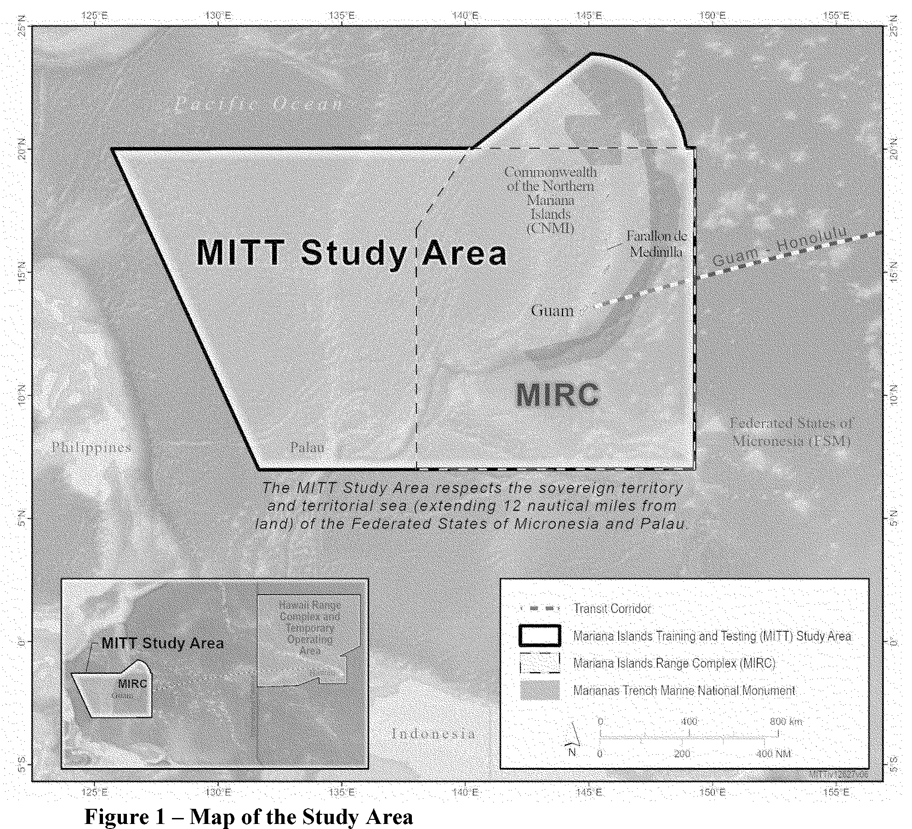
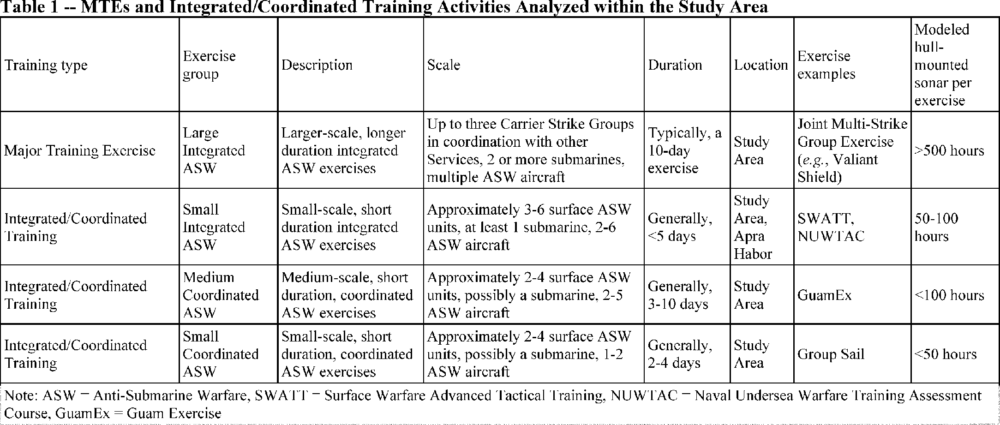
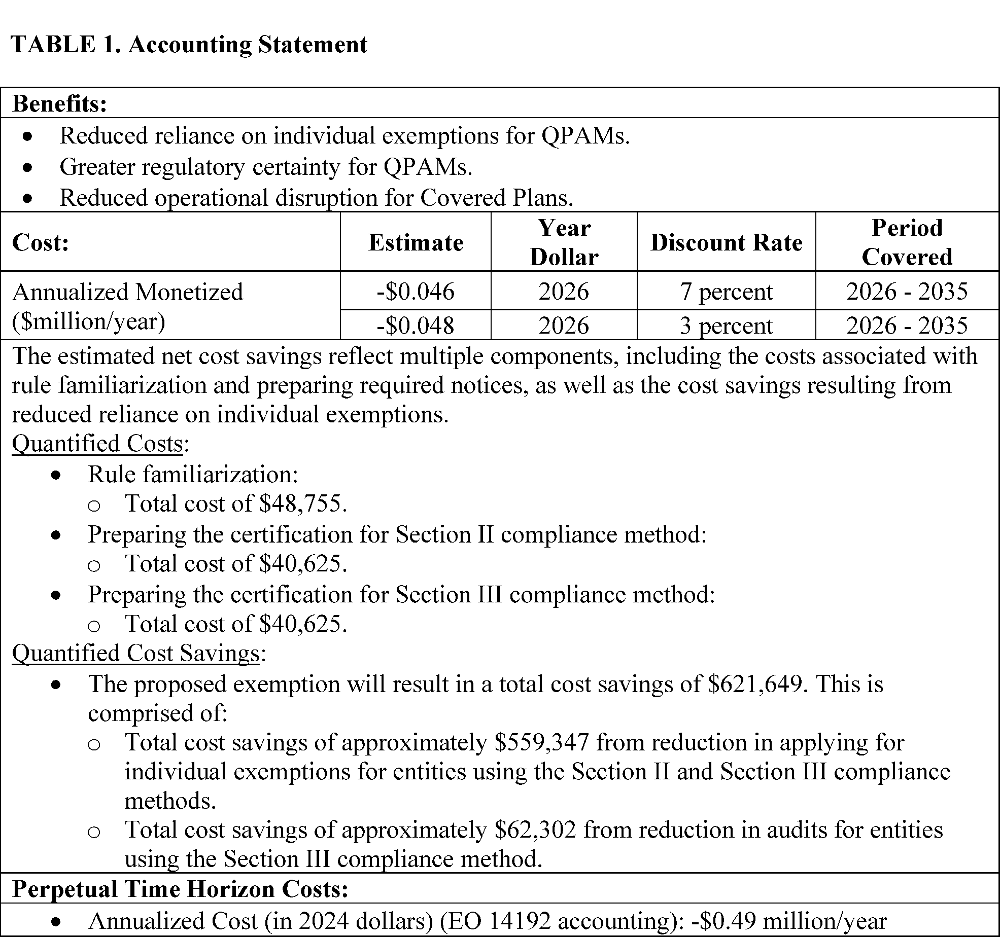
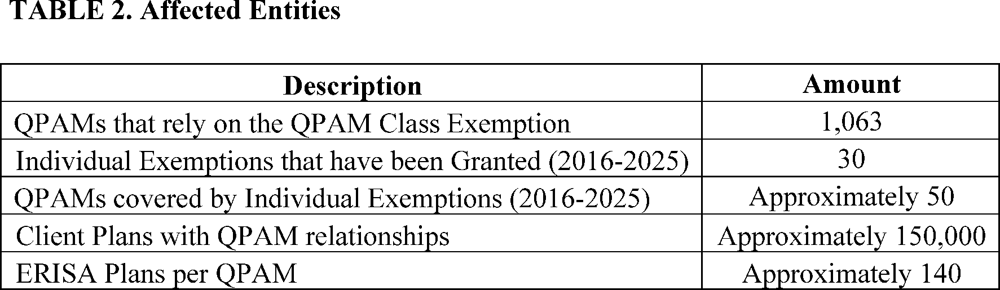

Daily Digest — 2026-11-18
Full observed listing for this day — the items our collectors observed for this publication day, mechanical rules applied, frozen at end of day; releases their publishers date on other days are counted there, not listed. This digest is the canonical record.
All items below cite the govinfo package (and granule, where applicable) they summarize. Selection is mechanical; each item states the rule that included it. See the Coverage Statement at the end for a full accounting of what was published, what was summarized, and what was excluded and why.
Day in Review
On the floor, the House passed H.R. 8483, placing California land into trust for the Barona Group of Capitan Grande Band of Mission Indians, 398-0, and H.R. 9600, approving a site for a Thomas Paine commemorative work, 365-36. The Senate resumed consideration of H.R. 2347, the Survivor Justice Tax Prevention Act, and confirmed the St. John nomination 52-46. The digest carries three roll call vote records, alongside Record entries dated June 2025. Three enrolled bills appear: two take land into trust for tribes, and one limits liability for approved cloud storage providers under law enforcement contracts.
The Federal Register items include 11 rules and 7 proposed rules. The Copyright Office adjusted its service fees, the Federal Reserve indexed Regulation D reserve amounts for 2027, and the IRS issued final automatic enrollment regulations under section 414A. Proposals include a Labor Department class exemption for disqualified asset managers and EPA approvals of Virginia and Texas air plans. Four public laws approved November 10, 2026, address taxpayer advocate counsel, Medicare wheelchair payment, the Churchill museum in Fulton, Missouri, and bankruptcy debt limits.
The digest carries 37 appellate and 3 national court opinions. The Eleventh Circuit held that Cuban nationals released on conditional parole are ineligible for adjustment under the Cuban Adjustment Act. The Federal Circuit affirmed invalidity of waterproof-membrane patent claims as indefinite. The Fifth Circuit reversed a section 1782 discovery order for Xiaomi. The Court of International Trade denied Kaptan Demir Celik's motion for judgment on the agency record.
Composed from the summarized items below and the day's mechanical counts; all specifics are cited in their sections.
1. Congressional Floor Activity
57 entries, mostly floor remarks and amendments on H.R. 1 and S. 1582 (GENIUS Act), including the 68-30 Senate passage of the stablecoin bill; the rest are nominations and Record reprints.
Source: Congressional Record (CREC), issue observed 2026-11-18, covering proceedings of 2025-06-02. Published by govinfo 2026-11-18T09:43:25Z; observed by our collector 2026-11-18T10:02:37Z. Total issue size: 2133 granule(s). Source: Congressional Record (CREC), issue observed 2026-11-18, covering proceedings of 2025-06-03. Published by govinfo 2026-11-18T09:50:04Z; observed by our collector 2026-11-18T10:02:37Z. Total issue size: 2133 granule(s). Source: Congressional Record (CREC), issue observed 2026-11-18, covering proceedings of 2025-06-11. Published by govinfo 2026-11-18T09:53:50Z; observed by our collector 2026-11-18T10:02:37Z. Total issue size: 2133 granule(s). Source: Congressional Record (CREC), issue observed 2026-11-18, covering proceedings of 2025-06-17. Published by govinfo 2026-11-18T09:56:53Z; observed by our collector 2026-11-18T10:02:37Z. Total issue size: 2133 granule(s). Source: Congressional Record (CREC), issue observed 2026-11-18, covering proceedings of 2025-06-23. Published by govinfo 2026-11-18T10:00:55Z; observed by our collector 2026-11-18T10:02:37Z. Total issue size: 2133 granule(s). Source: Congressional Record (CREC), issue observed 2026-11-18, covering proceedings of 2025-06-25. Published by govinfo 2026-11-18T10:05:09Z; observed by our collector 2026-11-18T10:38:18Z. Total issue size: 2133 granule(s). Source: Congressional Record (CREC), issue observed 2026-11-18, covering proceedings of 2025-06-26. Published by govinfo 2026-11-18T10:10:00Z; observed by our collector 2026-11-18T10:38:18Z. Total issue size: 2133 granule(s). Source: Congressional Record (CREC), issue observed 2026-11-18, covering proceedings of 2025-06-28. Published by govinfo 2026-11-18T10:19:23Z; observed by our collector 2026-11-18T10:38:18Z. Total issue size: 2133 granule(s). Source: Congressional Record (CREC), issue observed 2026-11-18, covering proceedings of 2025-06-30. Published by govinfo 2026-11-18T11:14:34Z; observed by our collector 2026-11-18T10:38:18Z. Total issue size: 2133 granule(s). Source: Congressional Record (CREC), issue observed 2026-11-18, covering proceedings of 2026-11-17. Published by govinfo 2026-11-18T12:42:50Z; observed by our collector 2026-11-18T13:06:00Z. Total issue size: 2133 granule(s).
1.1 Senate
In plain terms 57 entries, mostly floor remarks and amendments on H.R. 1 and S. 1582 (GENIUS Act), including the 68-30 Senate passage of the stablecoin bill; the rest are nominations and Record reprints.
- Legislative Session — Pages S3155-S3157 of the June 2, 2025 Congressional Record contain Senate floor proceedings on S. 1582, the Guiding and Establishing National Innovation for U.S. Stablecoins Act, which provides for the regulation of payment stablecoins. Senator Bennet proposed amendment SA 2278 to Amendment No. 2228 to define 'senior executive branch official' to include the President and Vice President, with the stated purpose of preventing use of public office for personal enrichment. The pages also include floor remarks by Senators Bennet, Thune, and Durbin on the Boulder, Colorado attack, the Senate's June work period agenda, and Ukraine-Russia peace efforts.
- In plain terms Senate floor proceedings cover S. 1582, the Guiding and Establishing National Innovation for U.S. Stablecoins Act, which regulates payment stablecoins, and Senator Bennet's amendment SA 2278 defining 'senior executive branch official' to include the President and Vice President.
- Included because: CREC-SEL-01 — floor item ≥ threshold floor time (24,133 characters) (document dated 2025-06-02)
- Source: CREC-2025-06-02 / CREC-2025-06-02-pt1-PgS3155-7 (opens in a new tab)
- U.S. Senate Committee on Foreign Relations Rules of Procedure — Pages S3162-S3163 print the Rules of the Committee on Foreign Relations for the 119th Congress, adopted May 13, 2025, which Senator Risch requested be printed in the Record with Senator Shaheen. Rule 1 sets the committee's jurisdiction under Senate Rule XXV, Rule 2 covers subcommittee creation, assignments, and hearings, and Rule 3 covers regular meeting day, special meetings, witness selection, public announcement, and closed-session criteria. The excerpt ends mid-text in Rule 3.
- In plain terms The Foreign Relations Committee's rules for the 119th Congress, adopted May 13, 2025, are printed, covering jurisdiction, subcommittees, and meetings and witness selection, and the excerpt stops partway through Rule 3.
- Included because: CREC-SEL-01 — floor item ≥ threshold floor time (39,388 characters) (document dated 2025-06-02)
- Source: CREC-2025-06-02 / CREC-2025-06-02-pt1-PgS3162-2 (opens in a new tab)
- Recognizing the Joint Congressional Committee on the Inauguration — Pages S3165-S3166 contain Senator Klobuchar's statement recognizing the Joint Congressional Committee on Inaugural Ceremonies (JCCIC), which hosted the 60th inauguration of President Donald Trump on January 20, 2025. The statement, delivered as chair of the committee alongside Senator Fischer, thanks committee staff, U.S. Capitol Police personnel, Architect and military partners, the District of Columbia Presidential Inaugural Committee, and more than 350 volunteer JCCIC Ambassadors, and identifies their roles. The pages include two Record correction notes concerning the spelling of certain staff and volunteer names.
- In plain terms Senator Klobuchar, as committee chair with Senator Fischer, recognized the Joint Congressional Committee on Inaugural Ceremonies for hosting the January 20, 2025 inauguration of President Donald Trump and thanked its staff, partners, and over 350 volunteers.
- Included because: CREC-SEL-01 — floor item ≥ threshold floor time (19,924 characters) (document dated 2025-06-02)
- Source: CREC-2025-06-02 / CREC-2025-06-02-pt1-PgS3165 (opens in a new tab)
- Text of Amendments — Pages S3173-S3174 print the text of amendments SA 2278 through SA 2283 to S. 1582, the GENIUS Act, as submitted in the Senate on June 2, 2025. SA 2278 (Bennet) would define 'senior executive branch official' to include the President and Vice President; SA 2279 (Kennedy) would set Consumer Financial Protection Bureau employee pay under the General Schedule; and SA 2280 (Kennedy) would repeal section 704B of the Equal Credit Opportunity Act and section 1071 of the Dodd-Frank Wall Street Reform and Consumer Protection Act. SA 2281 (Shaheen, Kaine, Welch, and Wyden) would exclude from International Emergency Economic Powers Act section 203 the authority to impose or increase duties or impose tariff-rate quotas; SA 2282 (Shaheen) would modify implementation of the Women, Peace, and Security Act of 2017; and SA 2283 (Shaheen) would add Title II, the 'Western Balkans Democracy and Prosperity Act.'
- In plain terms Printed amendments SA 2278 through SA 2283 to S. 1582, the GENIUS Act, submitted June 2, 2025, cover topics including executive officials' definitions, consumer agency pay, tariff authority, and Western Balkans policy.
- Included because: CREC-SEL-01 — floor item ≥ threshold floor time (98,714 characters) (document dated 2025-06-02)
- Source: CREC-2025-06-02 / CREC-2025-06-02-pt1-PgS3173-2 (opens in a new tab)
- Text of Senate Amendment 2283 — Pages S3174-S3175 print amendment SA 2283 (Shaheen) to S. 1582, which adds Title II, the 'Western Balkans Democracy and Prosperity Act.' Its findings address economic and governance conditions, corruption, disinformation, cyber resilience, and dependence on Russian fossil fuels and natural gas in the seven Western Balkans countries, and cite the OSCE/ODIHR final report on Serbia's December 17, 2023 elections. Its sense-of-Congress provisions (Sec. 23) cover trade, investment, and European Union and NATO accession support, and its definitions (Sec. 24) define 'appropriate congressional committees,' 'ICT,' and 'Western Balkans.'
- In plain terms Amendment SA 2283 to S. 1582 adds Title II, the 'Western Balkans Democracy and Prosperity Act,' with findings on corruption, disinformation, cyber resilience, and Russian energy dependence in seven Western Balkans countries, plus definitions and policy statements.
- Included because: CREC-SEL-01 — floor item ≥ threshold floor time (48,097 characters) (document dated 2025-06-02)
- Source: CREC-2025-06-02 / CREC-2025-06-02-pt1-PgS3174 (opens in a new tab)
- Text of Senate Amendment 2284 — Senator Shaheen submitted amendment SA 2284 to S. 1582, a bill to provide for the regulation of payment stablecoins, and the amendment was ordered to lie on the table. The amendment adds Title II, the Mobilizing and Enhancing Georgia's Options for Building Accountability, Resilience, and Independence Act, which contains definitions, sense-of-Congress statements, and statements of U.S. policy toward the Republic of Georgia. It directs the Secretary of State to submit a classified report on Russian intelligence assets in Georgia within 180 days and a five-year bilateral strategy within 90 days, and it directs the President to determine within 90 days whether specified foreign persons have engaged in significant corruption or acts of violence or intimidation, with related inadmissibility and sanctions provisions.
- In plain terms Amendment SA 2284 by Senator Shaheen to S. 1582 adds a Georgia title requiring a classified Russian-intelligence report within 180 days, a five-year strategy within 90 days, and a presidential determination on specified foreign persons within 90 days.
- Included because: CREC-SEL-01 — floor item ≥ threshold floor time (25,461 characters) (document dated 2025-06-02)
- Source: CREC-2025-06-02 / CREC-2025-06-02-pt1-PgS3178 (opens in a new tab)
- 253RD Anniversary of the "Gaspee" Raid — Senator Whitehouse delivered remarks marking the 253rd anniversary of the Gaspee raid, recounting the June 1772 burning of the British naval schooner HMS Gaspee off the coast of Rhode Island. The remarks draw on Rory Raven's 'Burning the Gaspee' and Nick Bunker's 'An Empire on the Edge,' and the Senator requested that a December 14, 2023 Washington Post article on the Gaspee affair be printed in the Record. The article states that the Gaspee was burned in June 1772, about eighteen months before the Boston Tea Party, and that the British Crown offered a bounty for the participants, though no one came forward to provide information.
- In plain terms Senator Whitehouse marked the 253rd anniversary of the Gaspee raid, recounting the June 1772 burning of the British schooner HMS Gaspee off Rhode Island, and requested printing of a December 14, 2023 Washington Post article on the affair.
- Included because: CREC-SEL-01 — floor item ≥ threshold floor time (25,480 characters) (document dated 2025-06-02)
- Source: CREC-2025-06-02 / CREC-2025-06-02-pt1-PgS3182-3 (opens in a new tab)
- Nominations — The Senate received executive nominations, including Derrick Anderson to be an Assistant Secretary of Defense, John Bartrum to be Under Secretary for Health of the Department of Veterans Affairs, Mindy Brashears to be Under Secretary of Agriculture for Food Safety, and Casey Means to be Surgeon General of the Public Health Service for a four-year term. The list also includes nominations to positions at the Departments of Agriculture, Defense, Transportation, and the Treasury, to the Federal Energy Regulatory Commission, and to the United States Postal Service. It further lists Navy and Air Force officer appointments, including Vice Admiral Frank M. Bradley to be admiral and a series of Air Force officers to be lieutenant colonel.
- In plain terms The Senate received nominations including Derrick Anderson as Assistant Secretary of Defense, John Bartrum as Under Secretary for Health at Veterans Affairs, Mindy Brashears as Under Secretary of Agriculture for Food Safety, and Casey Means as Surgeon General for a four-year term.
- Included because: CREC-SEL-01 — floor item ≥ threshold floor time (21,042 characters) (document dated 2025-06-02)
- Source: CREC-2025-06-02 / CREC-2025-06-02-pt1-PgS3185-2 (opens in a new tab)
- Executive and Other Communications — The excerpt lists executive communications received by the Senate and referred to committees, including Agricultural Marketing Service rules that rescind pesticide recordkeeping requirements, the natural grass sod promotion order, the dairy donation program, and tobacco grading provisions. Other entries include an EPA pesticide tolerance rule for florylpicoxamid, six-month Treasury reports on national emergencies concerning Nicaragua, North Korea, Belarus, Iran, and the Western Balkans, Department of Transportation vacancy reports, and National Marine Fisheries Service fishery rules. The excerpt is truncated in the source.
- In plain terms The excerpt lists executive communications referred to committees, including Agricultural Marketing Service rules on pesticide recordkeeping, sod promotion, dairy donation, and tobacco grading, an EPA pesticide tolerance rule, and six-month Treasury national emergency reports, and it is truncated.
- Included because: CREC-SEL-01 — floor item ≥ threshold floor time (20,057 characters) (document dated 2025-06-03)
- Source: CREC-2025-06-03 / CREC-2025-06-03-pt1-PgS3203-4 (opens in a new tab)
- GENIUS Act (Executive Session) — Senator Merkley stated that the GENIUS Act, which sets rules for payment stablecoins, contains no guardrails addressing conduct by the President, the Vice President, or other officials, and he objected to the majority leader's decision not to permit amendment votes. He cited the sale of the President's meme coin and a $2 billion stablecoin-related investment as examples, and he urged colleagues to support amendments on these issues. Senator Gillibrand stated her support for the Hagerty-Gillibrand substitute amendment to the GENIUS Act, which would regulate stablecoins, and said that financial regulators of both administrations had asked Congress to pass such rules.
- In plain terms Senator Merkley said the GENIUS Act has no guardrails for conduct by the President, Vice President, or other officials, and cited the sale of the President's meme coin and a $2 billion stablecoin investment as examples.
- Included because: CREC-SEL-01 — floor item ≥ threshold floor time (24,228 characters) (document dated 2025-06-11)
- Source: CREC-2025-06-11 / CREC-2025-06-11-pt1-PgS3332-2 (opens in a new tab)
- Motion to DISCHARGE--S.J. RES. 54 — The Senate record includes Senator Murphy's motion to discharge the Committee on Foreign Relations from further consideration of S.J. Res. 54, a joint resolution providing for congressional disapproval of a proposed foreign military sale to the United Arab Emirates of certain defense articles and services, made under section 36(b) of the Arms Export Control Act. In floor remarks, Murphy opposed arms sales to the UAE and Qatar and stated that both countries had provided benefits to the President personally, citing a $2 billion investment in a cryptocurrency venture and a jet aircraft. The excerpt is truncated in the source before the remarks conclude.
- In plain terms Senator Murphy moved to discharge the Foreign Relations Committee from S.J. Res. 54, a resolution to disapprove a proposed UAE arms sale under section 36(b) of the Arms Export Control Act, and in floor remarks opposed arms sales to the UAE and Qatar; the excerpt is truncated.
- Included because: CREC-SEL-01 — floor item ≥ threshold floor time (60,456 characters) (document dated 2025-06-11)
- Source: CREC-2025-06-11 / CREC-2025-06-11-pt1-PgS3336-5 (opens in a new tab)
- Nominations — This Senate Executive Communications section lists nominations received by the Senate for appointment in the Air Force, Army, Navy, and Space Force. The nominations include officers for promotion to brigadier general, rear admiral (lower half), and lieutenant colonel, and several are made to the Reserve or Air National Guard under specified sections of title 10, U.S. Code. The list is truncated in the source before the Army lieutenant colonel nominations are complete.
- In plain terms This Senate section lists nominations for appointment in the Air Force, Army, Navy, and Space Force, including promotions to brigadier general, rear admiral (lower half), and lieutenant colonel, and the list is truncated before the Army lieutenant colonel nominations are complete.
- Included because: CREC-SEL-01 — floor item ≥ threshold floor time (51,384 characters) (document dated 2025-06-11)
- Source: CREC-2025-06-11 / CREC-2025-06-11-pt1-PgS3350-6 (opens in a new tab)
- Legislative Session — The Senate passed S. 1582, the 'Guiding and Establishing National Innovation for U.S. Stablecoins Act' (GENIUS Act), by a vote of 68-30 on Rollcall Vote No. 318 Leg., with 2 senators not voting. The record includes a colloquy between Senators Kim, Hagerty, and Gillibrand stating that section 9(d) of amendment No. 2307 requires FinCEN to issue both guidance and notice-and-comment rulemaking, and that the section title did not reflect the change from 'or' to 'and'. The bill text defines terms including digital asset, digital asset service provider, and payment stablecoin issuers, and the excerpt is truncated.
- In plain terms The Senate passed S. 1582, the GENIUS Act, 68-30 (Rollcall Vote No. 318 Leg.), and the record includes a colloquy saying FinCEN must issue both guidance and public-comment rulemaking under section 9(d).
- Included because: CREC-SEL-01 — floor item ≥ threshold floor time (154,398 characters) (document dated 2025-06-17)
- Source: CREC-2025-06-17 / CREC-2025-06-17-pt1-PgS3418-3 (opens in a new tab)
- One Big Beautiful Bill — Senator Merkley delivered floor remarks on the reconciliation bill, referred to in the record as 'One Big Beautiful Bill,' addressing sections 312 and 313 of the Congressional Budget Act of 1974 and the Byrd rule. He stated his position against applying the section 312 Budget chair authority to reconciliation scoring and described a proposed 'current policy baseline' for estimating the bill's costs. The excerpt is truncated.
- In plain terms Senator Merkley spoke on the reconciliation bill, 'One Big Beautiful Bill,' opposing use of section 312 Budget chair authority for scoring and describing a proposed 'current policy baseline' for cost estimates; the excerpt is truncated.
- Included because: CREC-SEL-01 — floor item ≥ threshold floor time (16,460 characters) (document dated 2025-06-17)
- Source: CREC-2025-06-17 / CREC-2025-06-17-pt1-PgS3446-3 (opens in a new tab)
- War Powers Resolution — Senator Kaine delivered floor remarks on a War Powers Resolution concerning potential U.S. military action against Iran, stating that he had filed a privileged resolution that he said would be subject to a floor vote ten days after filing. He cited a New York Times article reporting Iranian preparations for possible strikes on U.S. bases and described the War Powers Resolution of 1974 criteria for privileged consideration, including imminence of hostilities and the absence of existing authorization. The excerpt is truncated.
- In plain terms Senator Kaine gave floor remarks on a War Powers Resolution concerning potential U.S. military action against Iran, saying he had filed a privileged resolution that would get a floor vote ten days after filing; the excerpt is truncated.
- Included because: CREC-SEL-01 — floor item ≥ threshold floor time (23,933 characters) (document dated 2025-06-17)
- Source: CREC-2025-06-17 / CREC-2025-06-17-pt1-PgS3448 (opens in a new tab)
- Iran — Senator Graham delivered floor remarks on the conflict involving Iran, Israel, and the United States. He stated that Iran's government pursues a religious agenda, cited the 1979 to 1981 hostage crisis and Iran's 1984 designation as a state sponsor of terrorism, and asserted that Iran funds Hezbollah, Hamas, and the Houthis and is enriching uranium to levels he described as beyond commercial purpose. He called on Israel to respond and stated support for President Trump's approach to Iran's enrichment program, and the excerpt is truncated in the source.
- In plain terms Senator Graham's floor remarks on the Iran, Israel, and U.S. conflict state that Iran funds Hezbollah, Hamas, and the Houthis and is enriching uranium to levels he described as beyond commercial purpose.
- Included because: CREC-SEL-01 — floor item ≥ threshold floor time (21,750 characters) (document dated 2025-06-23)
- Source: CREC-2025-06-23 / CREC-2025-06-23-pt1-PgS3485-2 (opens in a new tab)
- One Big Beautiful Bill — Senator Sanders's floor statement on the reconciliation bill cites Congressional Budget Office estimates that the bill would reduce Medicaid and Affordable Care Act spending by over $1 trillion and that 16 million people would lose health insurance. The statement also places into the Record a Health, Education, Labor and Pensions Committee minority staff report compiling responses from over 750 health care providers in 47 states and the District of Columbia.
- In plain terms Senator Sanders cites Congressional Budget Office estimates that the reconciliation bill would reduce Medicaid and Affordable Care Act spending by over $1 trillion and that 16 million people would lose health insurance.
- Included because: CREC-SEL-01 — floor item ≥ threshold floor time (40,695 characters) (document dated 2025-06-25)
- Source: CREC-2025-06-25 / CREC-2025-06-25-pt1-PgS3540 (opens in a new tab)
- U.S. Government Accountability Office Legal Opinion — At the request of Senator Daines, the Senate Record printed a June 25, 2025 Government Accountability Office decision (File B-337163) on whether the Bureau of Land Management's Miles City Field Office Record of Decision and Approved Resource Management Plan Amendment is a rule under the Congressional Review Act (CRA). GAO concludes that the Miles City RMPA meets the Administrative Procedure Act definition of a rule, that no CRA exception applies, and that it is therefore subject to CRA submission requirements. The decision notes that the Interior Department did not submit a CRA report on the amendment, which allocates 1,745,040 acres as unavailable for further coal leasing consideration.
- In plain terms GAO decision B-337163 (June 25, 2025) concludes that the Bureau of Land Management's Miles City plan amendment meets the Administrative Procedure Act definition of a rule and is subject to the Congressional Review Act, and that Interior filed no report.
- Included because: CREC-SEL-01 — floor item ≥ threshold floor time (23,917 characters) (document dated 2025-06-26)
- Source: CREC-2025-06-26 / CREC-2025-06-26-pt1-PgS3552 (opens in a new tab)
- U.S. Government Accountability Office Legal Opinion — At the request of Senator Sullivan, the Senate Record printed GAO decision B-337200, dated June 25, 2025, on whether the Bureau of Land Management's Central Yukon Record of Decision and Approved Resource Management Plan is a rule under the Congressional Review Act. GAO concludes that the Central Yukon RMP meets the APA definition of a rule, that none of the three CRA exceptions applies, and that it is therefore subject to CRA review. The decision states that Interior did not submit a CRA report and that the plan, approved November 12, 2024, provides management direction for 13.3 million acres of BLM-managed public lands in Alaska's Central Yukon planning area.
- In plain terms GAO decision B-337200 (June 25, 2025) concludes that the Central Yukon plan, approved November 12, 2024, meets the Administrative Procedure Act definition of a rule, no Congressional Review Act exception applies, and Interior filed no report.
- Included because: CREC-SEL-01 — floor item ≥ threshold floor time (25,877 characters) (document dated 2025-06-26)
- Source: CREC-2025-06-26 / CREC-2025-06-26-pt1-PgS3554 (opens in a new tab)
- U.S. Government Accountability Office Legal Opinion — Senator Cramer had the Government Accountability Office decision B-337175, dated June 25, 2025, printed in the Congressional Record. The decision concludes that the Bureau of Land Management's North Dakota Field Office Record of Decision and Approved Resource Management Plan, issued January 2025 and replacing the 1988 plan, meets the Administrative Procedure Act definition of a rule. It further concludes that no Congressional Review Act exception applies, so the plan is subject to the Act's submission requirements.
- In plain terms GAO decision B-337175 (June 25, 2025) concludes that the North Dakota Field Office plan, issued January 2025 to replace the 1988 plan, meets the Administrative Procedure Act definition of a rule and is subject to Congressional Review Act submission requirements.
- Included because: CREC-SEL-01 — floor item ≥ threshold floor time (22,202 characters) (document dated 2025-06-26)
- Source: CREC-2025-06-26 / CREC-2025-06-26-pt1-PgS3556 (opens in a new tab)
- Executive Reports of Committees — Senator Wicker, for the Committee on Armed Services, submitted executive reports listing nominations for military officer positions in the Navy, Air Force, Army, Marine Corps, and Space Force, including promotions to general, admiral, lieutenant general, and related ranks. He also asked that additional nomination lists previously printed in the Record be held at the Secretary's desk for the information of Senators rather than reprinted on the Executive Calendar.
- In plain terms Senator Wicker submitted Armed Services Committee executive reports listing military officer nominations in the Navy, Air Force, Army, Marine Corps, and Space Force, and asked that earlier lists be held at the Secretary's desk instead of reprinted.
- Included because: CREC-SEL-01 — floor item ≥ threshold floor time (35,785 characters) (document dated 2025-06-26)
- Source: CREC-2025-06-26 / CREC-2025-06-26-pt1-PgS3558-4 (opens in a new tab)
- One Big Beautiful Bill — Senator Merkley delivered floor remarks on federal budget deficits and the reconciliation bill commonly called the One Big Beautiful Bill. He described the history of the Budget and Impoundment Control Act of 1974 and section 313 of the Budget Act, which limits deficit effects in reconciliation legislation to the first 10 years, and he cited a Congressional Budget Office estimate of a 30-year debt effect. He also stated that the bill's proposed Medicaid changes and tax provisions would affect healthcare, nutrition programs, and the federal deficit.
- In plain terms Senator Merkley spoke on federal deficits and the One Big Beautiful Bill, citing a Congressional Budget Office estimate of its 30-year debt effect and noting that section 313 of the Budget Act limits reconciliation deficit effects to the first 10 years.
- Included because: CREC-SEL-01 — floor item ≥ threshold floor time (17,483 characters) (document dated 2025-06-26)
- Source: CREC-2025-06-26 / CREC-2025-06-26-pt1-PgS3568-3 (opens in a new tab)
- Promoting Resilient Supply Chains Act of 2025 — Senator Husted requested immediate consideration of S. 257, the Promoting Resilient Supply Chains Act of 2025, which the Senate considered as reported by the Committee on Commerce, Science, and Transportation with amendments. The bill text assigns the Assistant Secretary of Commerce for Industry and Analysis additional supply chain responsibilities, requires a Supply Chain Resilience Working Group and critical industry, supply chain, and goods designations within set deadlines, and requires reports to Congress, with a sunset provision in section 6.
- In plain terms Senator Husted asked for immediate consideration of S. 257, the Promoting Resilient Supply Chains Act of 2025, which assigns supply chain duties to the Assistant Secretary of Commerce for Industry and Analysis and requires reports to Congress.
- Included because: CREC-SEL-01 — floor item ≥ threshold floor time (70,504 characters) (document dated 2025-06-26)
- Source: CREC-2025-06-26 / CREC-2025-06-26-pt1-PgS3570-3 (opens in a new tab)
- One Big Beautiful Bill — Senator Moreno delivered floor remarks in support of the One Big Beautiful Bill, stating that the bill contains provisions on automobile loan interest deductions, exemptions from income tax on tips, overtime, and Social Security, a $2,200 per-child tax benefit, a $1,000 federal deposit for children born in the United States, health savings account funding, Medicaid work requirements for able-bodied adults, and funding for the military and air traffic control. He stated that the bill does not change Social Security or Medicare benefits and that it funds immigration enforcement.
- In plain terms Senator Moreno spoke in support of the One Big Beautiful Bill, stating that it includes a $2,200 per-child tax benefit, a $1,000 federal deposit for children born in the United States, and Medicaid work requirements for able-bodied adults.
- Included because: CREC-SEL-01 — floor item ≥ threshold floor time (15,736 characters) (document dated 2025-06-28)
- Source: CREC-2025-06-28 / CREC-2025-06-28-pt1-PgS3603-7 (opens in a new tab)
- One Big Beautiful Bill — Senator Cornyn delivered floor remarks in support of the One Big Beautiful Bill, describing its provisions to extend and enhance the standard deduction, the child tax credit, no tax on tips and overtime, border security and immigration enforcement funding, and defense funding. He stated that failing to extend provisions of the Tax Cuts and Jobs Act would increase taxes for families, and he described work requirements for able-bodied adults in Medicaid and SNAP as part of the bill. He also criticized arguments made by Democratic colleagues against the bill.
- In plain terms Senator Cornyn spoke in support of the One Big Beautiful Bill, stating that failing to extend Tax Cuts and Jobs Act provisions would increase taxes for families and describing Medicaid and SNAP work requirements for able-bodied adults.
- Included because: CREC-SEL-01 — floor item ≥ threshold floor time (17,838 characters) (document dated 2025-06-28)
- Source: CREC-2025-06-28 / CREC-2025-06-28-pt1-PgS3605 (opens in a new tab)
- Prayer — The Chaplain, Dr. Barry C. Black, offered the opening prayer. Senator Thune raised a point of order under section 313(b)(1)(E) of the Congressional Budget Act against substitute amendment No. 2360, and the Presiding Officer ruled that the point of order was not well-taken, citing section 312 of the Budget Act. Senator Schumer appealed the ruling of the Chair and requested the yeas and nays, which were ordered, and several senators made parliamentary inquiries concerning the budget baselines used for scoring the bill; the excerpt ends during this debate.
- In plain terms The Chaplain gave the opening prayer; Senator Thune's budget point of order against substitute amendment No. 2360 was ruled invalid, Senator Schumer appealed that ruling, and a recorded vote was ordered.
- Included because: CREC-SEL-01 — floor item ≥ threshold floor time (291,136 characters) (document dated 2025-06-28)
- Source: CREC-2025-06-28 / CREC-2025-06-28-pt1-PgS3613 (opens in a new tab)
- EXECUTIVE CALENDAR (Executive Session) — By unanimous consent, the Senate went into executive session and confirmed en bloc nominations on the Executive Calendar, Calendar Nos. 198 through 249 except No. 241, and nominations on the Secretary's desk except PN89, as requested by Senator Tillis. The confirmed nominations include officers for appointment in the Navy, Air Force, Army, Marine Corps, Space Force, and their reserve components, at grades including admiral, general, major general, brigadier general, and rear admiral (lower half). The excerpt ends during the Space Force listings.
- In plain terms By unanimous consent, the Senate confirmed in one group Executive Calendar Nos. 198 through 249 except No. 241, and Secretary's desk nominations except PN89, including military officer appointments.
- Included because: CREC-SEL-01 — floor item ≥ threshold floor time (50,356 characters) (document dated 2025-06-28)
- Source: CREC-2025-06-28 / CREC-2025-06-28-pt1-PgS3647 (opens in a new tab)
- Legislative Session — Senator Tillis made remarks noting his 38th wedding anniversary and stated that he would remain in session until the work was complete. Senator Shaheen spoke in opposition to H.R. 1, citing Congressional Budget Office estimates that 17 million Americans would lose health insurance and that the bill includes more than $1 trillion in reductions to Medicaid and Affordable Care Act programs, $930 billion of which is Medicaid. She also described the bill's provisions affecting SNAP benefits, household energy costs, taxes, student loans, and state regulation of artificial intelligence, and she shared constituent accounts.
- In plain terms Senator Shaheen opposed H.R. 1, citing Congressional Budget Office estimates that 17 million would lose health insurance and over $1 trillion in Medicaid and Affordable Care Act reductions, $930 billion of it Medicaid.
- Included because: CREC-SEL-01 — floor item ≥ threshold floor time (96,400 characters) (document dated 2025-06-28)
- Source: CREC-2025-06-28 / CREC-2025-06-28-pt1-PgS3651 (opens in a new tab)
- H.R. 1 — Senator Kelly spoke on H.R. 1, describing constituent accounts from Arizona concerning Medicaid, SNAP, summer school meal programs, and veterans' benefits, and stated that 17 million Americans would be removed from Medicaid or the Affordable Care Act under the bill. Senator Baldwin then spoke on H.R. 1, stating that the bill would raise costs for families and that she disagreed with the bill's approach to healthcare, prescription drug costs, and the tax system. The excerpt ends during Senator Baldwin's remarks.
- In plain terms Senator Kelly said H.R. 1 would remove 17 million Americans from Medicaid or the Affordable Care Act, and Senator Baldwin said the bill would raise family costs; the excerpt ends during her remarks.
- Included because: CREC-SEL-01 — floor item ≥ threshold floor time (104,459 characters) (document dated 2025-06-28)
- Source: CREC-2025-06-28 / CREC-2025-06-28-pt1-PgS3663-3 (opens in a new tab)
- Amendments Submitted and Proposed — This section of the Record lists amendments submitted and proposed on June 28, 2025. SA 2360, proposed by Mr. Thune for Mr. Graham to H.R. 1, is listed first, followed by amendments SA 2361 through SA 2419 and later items submitted by various senators, including Mr. Paul, Ms. Ernst, Ms. Hirono, Mr. Kaine, Ms. Warren, Ms. Cortez Masto, Mr. Risch, Mr. Peters, and Mr. Kelly. Most of these amendments were submitted as amendments to SA 2360, and each is recorded as ordered to lie on the table.
- In plain terms Amendments submitted on June 28, 2025 start with SA 2360 (Thune for Graham) to H.R. 1, followed by SA 2361 through SA 2419 and later items; most were set aside without action.
- Included because: CREC-SEL-01 — floor item ≥ threshold floor time (63,279 characters) (document dated 2025-06-28)
- Source: CREC-2025-06-28 / CREC-2025-06-28-pt1-PgS3681-5 (opens in a new tab)
- Text of Amendments — Mr. Thune, for Mr. Graham, proposed amendment SA 2360 to H.R. 1, a reconciliation bill under title II of H. Con. Res. 14. The amendment strikes all after the enacting clause and inserts the One Big Beautiful Bill Act, whose table of contents lists provisions organized by committee title, including agriculture and nutrition, armed services, banking, commerce, energy and natural resources, environment and public works, and finance. The excerpt is truncated within the finance title.
- In plain terms Mr. Thune, for Mr. Graham, proposed SA 2360 to H.R. 1, a bill under special budget procedures, replacing everything after the enacting clause with the One Big Beautiful Bill Act, organized by committee title.
- Included because: CREC-SEL-01 — floor item ≥ threshold floor time (3,790,820 characters) (document dated 2025-06-28)
- Source: CREC-2025-06-28 / CREC-2025-06-28-pt1-PgS3687 (opens in a new tab)
- Text of Senate Amendment 2360 — This entry repeats the text of amendment SA 2360 to H.R. 1 under the same reconciliation authority, with the same One Big Beautiful Bill Act table of contents across the agriculture, armed services, banking, commerce, energy, environment, and finance titles. The excerpt is truncated within the finance title.
- In plain terms This entry repeats the text of SA 2360 to H.R. 1, the One Big Beautiful Bill Act, with the same committee-title table of contents.
- Included because: CREC-SEL-01 — floor item ≥ threshold floor time (1,029,681 characters) (document dated 2025-06-28)
- Source: CREC-2025-06-28 / CREC-2025-06-28-pt1-PgS3687-2 (opens in a new tab)
- Text of Senate Amendment 2368 — Mr. Paul submitted amendment SA 2368, intended to be proposed to SA 2360, and it was ordered to lie on the table. The amendment strikes all after the first word clause and inserts a version of the One Big Beautiful Bill Act with a table of contents that adds Sec. 50301, 'Mandatory disposal of Bureau of Land management land for housing,' under the energy and natural resources title. The excerpt is truncated within the finance title.
- In plain terms Mr. Paul submitted SA 2368 as an amendment to SA 2360, laid aside without action; it inserts the One Big Beautiful Bill Act, adding Sec. 50301, mandatory disposal of Bureau of Land Management land for housing.
- Included because: CREC-SEL-01 — floor item ≥ threshold floor time (1,039,891 characters) (document dated 2025-06-28)
- Source: CREC-2025-06-28 / CREC-2025-06-28-pt1-PgS3781-3 (opens in a new tab)
- Text of Senate Amendment 2369 — Mr. Paul submitted amendment SA 2369, intended to be proposed to SA 2360, and it was ordered to lie on the table. The amendment strikes all after the first word and inserts a version of the One Big Beautiful Bill Act whose table of contents includes Sec. 50301 on mandatory disposal of Bureau of Land Management land for housing. The excerpt is truncated within the finance title.
- In plain terms Mr. Paul's amendment SA 2369 to SA 2360, laid aside without action, inserts the One Big Beautiful Bill Act, adding Sec. 50301 on mandatory disposal of Bureau of Land Management land for housing.
- Included because: CREC-SEL-01 — floor item ≥ threshold floor time (1,039,395 characters) (document dated 2025-06-28)
- Source: CREC-2025-06-28 / CREC-2025-06-28-pt1-PgS3875 (opens in a new tab)
- Text of Senate Amendment 2435 — Mr. Sanders submitted amendment SA 2435, intended to be proposed to SA 2360, and it was ordered to lie on the table. It adds a new section 71205 at the end of chapter 2 of title VII, the Medicare Dental, Hearing, and Vision Expansion Act of 2025, and the excerpt shows provisions that add dental and oral health services as covered Medicare services on or after January 1, 2028, with payment rules and a fee schedule set under section 1834. The excerpt is truncated before the hearing and vision provisions.
- In plain terms Sanders's amendment SA 2435 to SA 2360, laid aside, adds the Medicare Dental, Hearing, and Vision Expansion Act of 2025, covering dental and oral health services as Medicare benefits on or after January 1, 2028.
- Included because: CREC-SEL-01 — floor item ≥ threshold floor time (46,535 characters) (document dated 2025-06-28)
- Source: CREC-2025-06-28 / CREC-2025-06-28-pt1-PgS3979-9 (opens in a new tab)
- Text of Senate Amendment 2442 — Ms. Baldwin, for herself, Mr. Booker, Ms. Warren, and Mr. Gallego, submitted amendment SA 2442 to H.R. 1, and it was ordered to lie on the table. The amendment amends section 83(c) of the Internal Revenue Code to address partnership interests transferred in connection with services, effective for interests transferred after enactment, and adds a new section 710 on special rules for partners providing investment management services to partnerships, which treats certain net capital gain on investment services partnership interests as ordinary income. The excerpt is truncated within section 710.
- In plain terms Ms. Baldwin submitted SA 2442 to H.R. 1, laid aside; it amends tax code section 83(c) for partnership interests transferred for services after enactment, and adds section 710 on partners providing investment management services.
- Included because: CREC-SEL-01 — floor item ≥ threshold floor time (47,557 characters) (document dated 2025-06-28)
- Source: CREC-2025-06-28 / CREC-2025-06-28-pt1-PgS3984-7 (opens in a new tab)
- Text of Senate Amendment 2561 — Senator Shaheen submitted amendment SA 2561 to H.R. 1 (as modified by SA 2360), proposing to strike section 70523 and insert new Public Health Service Act section 2799A-11, with parallel provisions in ERISA section 726 and Internal Revenue Code section 9826. The provisions require group health plans and health insurance issuers to cover selected insulin products without a deductible for plan years beginning on or after January 1, 2026, and to limit cost-sharing to $35 per 30-day supply, or from 2027 to the lesser of $35 or 25 percent of the net negotiated price. The amendment also applies the insulin requirements to qualified health plans and catastrophic plans under Patient Protection and Affordable Care Act section 1302, and it was ordered to lie on the table.
- In plain terms Shaheen's SA 2561 to H.R. 1 would require insulin coverage without deductible from January 1, 2026, capping cost-sharing at $35 per 30-day supply, then the lesser of $35 or 25% of net negotiated price from 2027.
- Included because: CREC-SEL-01 — floor item ≥ threshold floor time (30,790 characters) (document dated 2025-06-28)
- Source: CREC-2025-06-28 / CREC-2025-06-28-pt1-PgS4008-5 (opens in a new tab)
- Text of Senate Amendment 2583 — Senator Curtis submitted amendment SA 2583 to H.R. 1 (as modified by SA 2360), proposing to strike section 70512 and insert revised provisions on the clean electricity production credit under Internal Revenue Code section 45Y. The amendment terminates the credit for wind and solar facilities placed in service after December 31, 2027, and denies the credit for qualified facilities whose construction includes material assistance from a prohibited foreign entity, as well as for taxpayers that are specified or foreign-influenced entities. It also adds definitions of prohibited foreign entity, specified foreign entity, and foreign-influenced entity to section 7701(a), and it was ordered to lie on the table.
- In plain terms Curtis's SA 2583 to H.R. 1 would end the clean electricity production credit for wind and solar facilities placed in service after Dec. 31, 2027, and deny it to facilities using material assistance from prohibited foreign entities.
- Included because: CREC-SEL-01 — floor item ≥ threshold floor time (51,882 characters) (document dated 2025-06-28)
- Source: CREC-2025-06-28 / CREC-2025-06-28-pt1-PgS4014 (opens in a new tab)
- Text of Senate Amendment 2598 — Senator Booker submitted amendment SA 2598 to H.R. 1 (as modified by SA 2360), proposing a new Chapter 7 titled "Respect, Advancement, and Increasing Support for Educators Act of 2025" or the "RAISE Act of 2025". The chapter adds Internal Revenue Code section 36C, a teacher tax credit of $1,000 for eligible educators plus an applicable amount of up to $14,000 ($9,000 for early childhood educators without a bachelor's degree) scaled by the student poverty ratio of qualifying schools above 39 percent, with inflation adjustments for taxable years beginning after 2026. The chapter also directs the Secretary of Education to collect school information, prohibits reducing teacher pay or teacher loan forgiveness because of the credit, and sets limitations on employers that engage in collective bargaining, and it was ordered to lie on the table.
- In plain terms Booker's SA 2598 would add a teacher tax credit of $1,000 plus up to $14,000 ($9,000 for early childhood educators without a bachelor's degree), scaled by school poverty above 39%, indexed for inflation from 2027.
- Included because: CREC-SEL-01 — floor item ≥ threshold floor time (19,440 characters) (document dated 2025-06-28)
- Source: CREC-2025-06-28 / CREC-2025-06-28-pt1-PgS4020-5 (opens in a new tab)
- Text of Senate Amendment 2646 — Senator Bennet submitted amendment SA 2646 to H.R. 1 (as modified by SA 2360), proposing to strike section 70120 and insert a new Internal Revenue Code section 275(b) that disallows deductions for disallowed foreign real property taxes, limits deductions for specified taxes to $10,000 ($5,000 for married individuals filing separately), and limits deductions for pass-through entity taxes using a threshold based on the greater of $40,000 ($20,000 for married individuals filing separately) or 50 percent of such taxes. The amendment also revises Internal Revenue Code sections 216, 702, 703, and 704 concerning the treatment of partnership and S corporation taxes, the definition of pass-through entity taxes, and partner loss carryovers, and it directs the Secretary to issue regulations to prevent avoidance. The amendment was ordered to lie on the table.
- In plain terms SA 2646 to H.R. 1 would cap specified-tax deductions at $10,000 ($5,000 if married filing separately) and pass-through entity tax deductions at the greater of $40,000 ($20,000 if married filing separately) or 50% of such taxes.
- Included because: CREC-SEL-01 — floor item ≥ threshold floor time (23,483 characters) (document dated 2025-06-28)
- Source: CREC-2025-06-28 / CREC-2025-06-28-pt1-PgS4029-3 (opens in a new tab)
- Confirmations — The Congressional Record reproduces a list of executive nominations confirmed by the Senate on June 29, 2025, consisting of military appointments in the Navy, Air Force, Army, Marine Corps, and Space Force. Named nominees include Vice Adm. Charles B. Cooper II, to be admiral, and Lt. Gen. Alexus G. Grynkewich, to be general, along with several lieutenant general, major general, brigadier general, and rear admiral (lower half) appointments in active duty and reserve components. The excerpt is truncated, so the list is incomplete as shown.
- In plain terms The Record lists military nominations confirmed June 29, 2025, including Vice Adm. Charles B. Cooper II for admiral and Lt. Gen. Alexus G. Grynkewich for general; the list is incomplete.
- Included because: CREC-SEL-01 — floor item ≥ threshold floor time (41,589 characters) (document dated 2025-06-28)
- Source: CREC-2025-06-28 / CREC-2025-06-28-pt1-PgS4032-7 (opens in a new tab)
- Legislative Session — The Senate resumed consideration of H.R. 1, the One Big Beautiful Bill Act, a reconciliation bill, with the pending Thune (for Graham) amendment No. 2360 in the nature of a substitute and a Schumer motion to appeal the Chair's ruling on a point of order under section 313(b)(1)(E) of the Congressional Budget Act. Senator Schumer stated that the bill would reduce Medicaid and SNAP benefits, raise electricity costs, and increase the federal debt, and announced that Democratic senators would offer amendments during the vote-a-rama. Senator Thune stated that extending the Tax Cuts and Jobs Act provisions would prevent tax increases for families earning less than $400,000 and for pass-through businesses, and cited Congressional Budget Office revenue estimates for that act.
- In plain terms The Senate resumed debate on H.R. 1; Schumer said it would reduce Medicaid and SNAP benefits, and Thune said extending Tax Cuts and Jobs Act provisions would prevent tax increases for families earning under $400,000.
- Included because: CREC-SEL-01 — floor item ≥ threshold floor time (324,557 characters) (document dated 2025-06-30)
- Source: CREC-2025-06-30 / CREC-2025-06-30-pt1-PgS4037-6 (opens in a new tab)
- Amendments Submitted and Proposed — This Congressional Record section lists Senate amendments submitted or proposed on June 30, 2025, to amendment SA 2360 (offered by Mr. Thune for Mr. Graham) to H.R. 1, the reconciliation bill. Amendments SA 2658 through SA 2712 and beyond are itemized by sponsor, and most are ordered to lie on the table, while SA 2696 (Mr. Ossoff) is recorded as proposed. The text in this block is truncated before the list ends.
- In plain terms Amendments submitted June 30, 2025, to SA 2360 (Thune for Graham) to H.R. 1 are listed, most laid aside; SA 2696 by Mr. Ossoff is recorded as proposed, and the list is cut off.
- Included because: CREC-SEL-01 — floor item ≥ threshold floor time (42,457 characters) (document dated 2025-06-30)
- Source: CREC-2025-06-30 / CREC-2025-06-30-pt1-PgS4085 (opens in a new tab)
- Text of Amendments — SA 2658, submitted by Mr. Scott of South Carolina, proposes a new section titled 'Treatment of Certain Excess Plan Assets' for title VII of H.R. 1. It amends Internal Revenue Code section 420 to permit transfers of excess health assets from a section 401(h) health benefits account to a pension plan, defines excess health assets as applicable assets exceeding 125 percent of the employer's retiree health liability, and sets conditions on use, deductions, and notice to participants, with conforming amendments to ERISA and other provisions. The text is truncated before the section ends.
- In plain terms Mr. Scott of South Carolina's SA 2658 would let excess health assets move from 401(h) health accounts to pension plans, where excess means assets above 125 percent of the employer's retiree health liability.
- Included because: CREC-SEL-01 — floor item ≥ threshold floor time (1,604,095 characters) (document dated 2025-06-30)
- Source: CREC-2025-06-30 / CREC-2025-06-30-pt1-PgS4089 (opens in a new tab)
- Text of Senate Amendment 2658 — This block repeats the text of SA 2658 from Mr. Scott of South Carolina, which proposes a section on the treatment of certain excess plan assets permitting transfers of excess health assets from section 401(h) accounts to pension plans. The repeated text matches the preceding block and is truncated before its end.
- In plain terms This block repeats SA 2658 from Mr. Scott of South Carolina, the excess plan assets proposal, and is cut off before its end.
- Included because: CREC-SEL-01 — floor item ≥ threshold floor time (16,753 characters) (document dated 2025-06-30)
- Source: CREC-2025-06-30 / CREC-2025-06-30-pt1-PgS4089-2 (opens in a new tab)
- Text of Senate Amendment 2670 — SA 2670, submitted by Mrs. Shaheen for herself and Ms. Collins, would strike section 70523 of H.R. 1 and insert requirements for cost-sharing on certain insulin products. For plan years beginning on or after January 1, 2026, group health plans and health insurance issuers would be required to cover selected insulin products without a deductible and with cost-sharing capped at $35 per 30-day supply through 2026, then at the lesser of $35 or 25 percent of the net negotiated price beginning in 2027. The amendment adds parallel provisions to the Public Health Service Act, ERISA, the Internal Revenue Code, and the Patient Protection and Affordable Care Act, and the text is truncated before its end.
- In plain terms SA 2670 from Shaheen and Collins would require insulin without deductible from January 1, 2026, capping cost-sharing at $35 per 30-day supply, then the lesser of $35 or 25% of net negotiated price from 2027.
- Included because: CREC-SEL-01 — floor item ≥ threshold floor time (30,815 characters) (document dated 2025-06-30)
- Source: CREC-2025-06-30 / CREC-2025-06-30-pt1-PgS4092-11 (opens in a new tab)
- Text of Senate Amendment 2700 — SA 2700, submitted by Mr. Warner, proposes a new section 42A of the Internal Revenue Code establishing a Neighborhood Homes Credit. The credit applies to qualified residences sold in affordable sales to qualified homeowners, is limited by allocations made by a state neighborhood homes credit agency, and is tied to residences located in designated qualified census tracts. The text is truncated before the section ends.
- In plain terms Mr. Warner's SA 2700 would add Internal Revenue Code section 42A, a Neighborhood Homes Credit for qualified residences sold affordably to qualified homeowners, limited by state agency allocations and tied to designated qualified census tracts.
- Included because: CREC-SEL-01 — floor item ≥ threshold floor time (34,949 characters) (document dated 2025-06-30)
- Source: CREC-2025-06-30 / CREC-2025-06-30-pt1-PgS4099-2 (opens in a new tab)
- Text of Senate Amendment 2704 — SA 2704, submitted by Ms. Ernst for herself, Mr. Grassley, Ms. Murkowski, and Ms. Collins, would strike sections 70512 and 70513 of H.R. 1 and insert new provisions on the clean electricity production credit. For wind and solar facilities, it sets a phase-out percentage that multiplies the credit: 60 percent for facilities whose construction begins in 2026, 20 percent for those beginning in 2027, and 0 percent for those beginning after December 31, 2027. It also restricts the credit for facilities using material assistance from prohibited foreign entities and adds definitions of specified foreign entities and foreign-influenced entities to section 7701(a), and the text is truncated before its end.
- In plain terms SA 2704 from Ernst, Grassley, Murkowski, and Collins would reduce wind and solar clean electricity production credits to 60% for construction beginning in 2026, 20% in 2027, and 0% after December 31, 2027.
- Included because: CREC-SEL-01 — floor item ≥ threshold floor time (60,344 characters) (document dated 2025-06-30)
- Source: CREC-2025-06-30 / CREC-2025-06-30-pt1-PgS4103-3 (opens in a new tab)
- Text of Senate Amendment 2724 — Senator Lee submitted amendment SA 2724 to H.R. 1, which was ordered to lie on the table. The amendment would add the Regulations from the Executive in Need of Scrutiny Act of 2025 by replacing chapter 8 of title 5, United States Code, with congressional review procedures for agency rules. These procedures include agency reports to each House of Congress and the Comptroller General before a rule takes effect, a joint resolution of approval procedure for major rules, and provisions on judicial review and private rights of action.
- In plain terms Senator Lee's SA 2724 to H.R. 1, laid aside, would replace chapter 8 of title 5, United States Code, with congressional review procedures for agency rules, including reports before a rule takes effect.
- Included because: CREC-SEL-01 — floor item ≥ threshold floor time (47,593 characters) (document dated 2025-06-30)
- Source: CREC-2025-06-30 / CREC-2025-06-30-pt1-PgS4111-5 (opens in a new tab)
- Text of Senate Amendment 2759 — Senator Scott of South Carolina, with Senator Tillis, submitted amendment SA 2759 to H.R. 1, which was ordered to lie on the table. The amendment would change the eligibility threshold in section 1400Z-1(c)(1)(A) of the Internal Revenue Code for Opportunity Zones from 70 percent to 80 percent. It would also add a section permitting transfers of excess health assets from section 401(h) health benefits accounts to pension plans to fund active employee benefits, subject to specified use, vesting, and cost requirements.
- In plain terms Scott and Tillis's SA 2759 to H.R. 1, laid aside, would raise the Opportunity Zones eligibility threshold from 70 percent to 80 percent and allow excess health asset transfers from 401(h) accounts to pension plans.
- Included because: CREC-SEL-01 — floor item ≥ threshold floor time (17,217 characters) (document dated 2025-06-30)
- Source: CREC-2025-06-30 / CREC-2025-06-30-pt1-PgS4119-4 (opens in a new tab)
- Text of Senate Amendment 2789 — Senator Grassley submitted amendment SA 2789 to H.R. 1, which was ordered to lie on the table, proposing a chapter titled 'Pharmacy Benefit Manager Transparency'. The text would make unlawful specified pricing, reimbursement, and clawback practices by pharmacy benefit managers and the reporting of knowingly false information to federal agencies. It would also require pharmacy benefit managers to file annual reports with the Commission and the Secretary of Health and Human Services, and require the Commission and the Comptroller General to submit reports to Congress.
- In plain terms Senator Grassley submitted amendment SA 2789 to H.R. 1, set aside without a vote, proposing a 'Pharmacy Benefit Manager Transparency' chapter that would make certain pharmacy benefit manager pricing and clawback practices unlawful.
- Included because: CREC-SEL-01 — floor item ≥ threshold floor time (27,431 characters) (document dated 2025-06-30)
- Source: CREC-2025-06-30 / CREC-2025-06-30-pt1-PgS4126-2 (opens in a new tab)
- Text of Senate Amendment 2815 — Senator Blackburn submitted amendment SA 2815 to H.R. 1, which was ordered to lie on the table, proposing in lieu of the pending matter a subtitle cited as the 'Kids Online Safety Act'. The chapter defines terms including child, minor, covered platform, design feature, and online video game. Section 40202 establishes a duty of care requiring covered platforms to exercise reasonable care in designing features to prevent and mitigate specified harms to minors.
- In plain terms Senator Blackburn submitted SA 2815 to H.R. 1, set aside without a vote, proposing a 'Kids Online Safety Act' subtitle requiring covered platforms to use reasonable care in designing features to prevent harms to minors.
- Included because: CREC-SEL-01 — floor item ≥ threshold floor time (68,842 characters) (document dated 2025-06-30)
- Source: CREC-2025-06-30 / CREC-2025-06-30-pt1-PgS4133-3 (opens in a new tab)
- Text of Senate Amendment 2844 — Senator Scott of South Carolina, with Senator Tillis, submitted amendment SA 2844 to H.R. 1, which was ordered to lie on the table. The amendment would change the Opportunity Zones eligibility threshold in section 1400Z-1(c)(1)(A) of the Internal Revenue Code from 70 percent to 75 percent. It also contains the same excess health asset transfer provisions as amendment SA 2759, amending section 420 of the Internal Revenue Code and related provisions of the Employee Retirement Income Security Act of 1974.
- In plain terms Senators Scott and Tillis submitted SA 2844 to H.R. 1, set aside without a vote; it would raise the Opportunity Zones eligibility threshold from 70 to 75 percent and add excess health asset transfer provisions.
- Included because: CREC-SEL-01 — floor item ≥ threshold floor time (17,218 characters) (document dated 2025-06-30)
- Source: CREC-2025-06-30 / CREC-2025-06-30-pt1-PgS4144 (opens in a new tab)
- Text of Senate Amendment 2848 — Senator Graham proposed amendment SA 2848 to amendment SA 2360 to H.R. 1, which strikes all text after the first word and inserts the text of the 'One Big Beautiful Bill Act'. The inserted text includes a table of contents organized by committee jurisdiction, covering agriculture and nutrition, armed services, banking, commerce, energy and natural resources, environment and public works, and finance. The listed provisions include SNAP modifications, Department of Defense resource enhancements, rescissions of environmental funding, and federal tax provisions.
- In plain terms Senator Graham proposed SA 2848 to SA 2360 to H.R. 1, striking all text after the first word and inserting the 'One Big Beautiful Bill Act', covering SNAP, defense, environmental funding, and federal tax provisions.
- Included because: CREC-SEL-01 — floor item ≥ threshold floor time (983,103 characters) (document dated 2025-06-30)
- Source: CREC-2025-06-30 / CREC-2025-06-30-pt1-PgS4146-3 (opens in a new tab)
- Legislative Session — The Senate resumed consideration of H.R. 2347, the Survivor Justice Tax Prevention Act, which would exclude from gross income damages other than punitive damages received on account of sexual acts or sexual contact, with Thune amendments Nos. 6883 through 6887 pending. Senator Schumer stated that the President's trip to Asia prioritized adversaries over allies and criticized spending on White House renovations. Senator Thune described the Bipartisan American Affordability and Jobs Act, a permitting reform bill that would set deadlines for federal project reviews and require data centers to bear their own energy costs.
- In plain terms The Senate resumed consideration of H.R. 2347, the Survivor Justice Tax Prevention Act, which would exclude from gross income damages other than punitive damages received for sexual acts or sexual contact.
- Included because: CREC-SEL-01 — floor item ≥ threshold floor time (25,383 characters) (document dated 2026-11-17)
- Source: CREC-2026-11-17 / CREC-2026-11-17-pt1-PgS5705-7 (opens in a new tab)
- Recognizing the Death of John Davison "Jay" Rockefeller Iv, Former Senator for the State of West Virginia — Senators Capito and Justice delivered remarks recognizing the death of former Senator John D. "Jay" Rockefeller IV of West Virginia. The remarks described his service as a state legislator, Secretary of State, Governor, and U.S. Senator, and his work on the Children's Health Insurance Program, neurological research, and coal miner health and mine safety legislation. The remarks also noted his role in bringing a Toyota plant to West Virginia and his service as chairman of the Senate Intelligence and Commerce Committees.
- In plain terms Senators Capito and Justice recognized the death of former Senator John D. "Jay" Rockefeller IV of West Virginia, citing his service as state legislator, Secretary of State, Governor, and U.S. Senator.
- Included because: CREC-SEL-01 — floor item ≥ threshold floor time (72,484 characters) (document dated 2026-11-17)
- Source: CREC-2026-11-17 / CREC-2026-11-17-pt1-PgS5711 (opens in a new tab)
- Additional Cosponsors — The Congressional Record lists Senators added as cosponsors on November 17, 2026 to numerous Senate bills, including S. 467, S. 1088, S. 2377, S. 4590, and S. 5331, and to amendments Nos. 6855 through 6915 to H.R. 2347. Each entry identifies the Senator who made the request and the Senator or Senators added as cosponsors. The source text is truncated, so the listing is incomplete.
- In plain terms On November 17, 2026, the Congressional Record lists Senators added as cosponsors to numerous Senate bills and amendments Nos. 6855 through 6915 to H.R. 2347; the list is incomplete.
- Included because: CREC-SEL-01 — floor item ≥ threshold floor time (15,398 characters) (document dated 2026-11-17)
- Source: CREC-2026-11-17 / CREC-2026-11-17-pt1-PgS5723-2 (opens in a new tab)
1.2 House of Representatives
In plain terms 38 entries, led by House consideration of H.R. 3944 (Military Construction and VA appropriations) and suspension-of-rules bills; the rest are floor speeches, special orders, and bill introductions.
- Wosb Accountability Act — The House considered H.R. 1816, the WOSB Accountability Act, on a motion to suspend the rules and pass the bill as amended, introduced by Representatives McGarvey, Velazquez, and LaLota. The bill amends Section 15(g) of the Small Business Act so that only women-owned small business concerns certified under section 8(m)(2)(E) count toward specified governmentwide and agency goals, and it deems certain self-certified applicants certified for goal purposes until a determination is made. It requires the SBA Administrator to issue implementing regulations within one year, to provide quarterly briefings to the Small Business committees, and states that no additional funds are authorized.
- In plain terms The House voted to suspend its rules and pass H.R. 1816, the WOSB Accountability Act, as amended, so that only certified women-owned small businesses count toward specified goals and requiring SBA regulations within one year.
- Included because: CREC-SEL-01 — floor item ≥ threshold floor time (15,089 characters) (document dated 2025-06-03)
- Source: CREC-2025-06-03 / CREC-2025-06-03-pt1-PgH2393 (opens in a new tab)
- Actual Solutions — Rep. Schweikert of Arizona, recognized for 60 minutes as the designee of the majority leader, spoke on federal borrowing, projected interest costs, and Medicare Advantage spending. He referenced a Nature article on the use of facts in congressional speeches, described proposed legislation on Medicare Advantage and talent-based immigration, and cited figures on projected tax changes and baseline federal spending over the next 10 years. He also discussed a bill concerning appropriated funds that have not been authorized or spent, referred to as the forgotten funds bill.
- In plain terms Representative Schweikert of Arizona, speaking for 60 minutes as the majority leader's designee, discussed federal borrowing, projected interest costs, Medicare Advantage spending, and a bill on appropriated funds that have not been authorized or spent.
- Included because: CREC-SEL-01 — floor item ≥ threshold floor time (29,337 characters) (document dated 2025-06-03)
- Source: CREC-2025-06-03 / CREC-2025-06-03-pt1-PgH2407-6 (opens in a new tab)
- National Gun Violence Awareness Month — Reps. McClellan of Virginia and Carter of Louisiana co-anchored a Congressional Black Caucus Special Order hour on National Gun Violence Awareness Month. Speakers cited firearm death statistics, referenced reductions in federal community violence intervention grants, and called for gun safety legislation and community violence intervention programs. Rep. Carter also referenced the Bipartisan Safer Communities Act and the Gun Violence Archive's count of mass shootings in 2025.
- In plain terms Representatives McClellan and Carter led a Congressional Black Caucus hour on National Gun Violence Awareness Month, citing firearm death statistics, reduced community violence intervention grants, and the Bipartisan Safer Communities Act.
- Included because: CREC-SEL-01 — floor item ≥ threshold floor time (29,472 characters) (document dated 2025-06-03)
- Source: CREC-2025-06-03 / CREC-2025-06-03-pt1-PgH2411 (opens in a new tab)
- 151 Days Without a Vote to Lower Costs — Rep. Olszewski of Maryland led a 30-minute Special Order noting that 151 days had passed in the 119th Congress and stating opposition to proposed SNAP reductions in reconciliation legislation. Other Members, including Reps. McClellan and Watson Coleman, spoke on proposed changes to SNAP, Medicaid, and housing assistance, citing estimated cost shifts to States and estimated effects on children and households. Speakers also read a passage from Matthew 25 and discussed the proposed SNAP work requirement exemption for caregivers of dependent children.
- In plain terms Representative Olszewski of Maryland led a 30-minute special hour noting 151 days in the 119th Congress and opposing proposed SNAP reductions in reconciliation legislation, with other Members discussing proposed SNAP, Medicaid, and housing assistance changes.
- Included because: CREC-SEL-01 — floor item ≥ threshold floor time (16,471 characters) (document dated 2025-06-03)
- Source: CREC-2025-06-03 / CREC-2025-06-03-pt1-PgH2415 (opens in a new tab)
- Public Bills and Resolutions — This section of the June 3, 2025 Congressional Record lists public bills and resolutions introduced in the House and their committee referrals. The items include H.R. 3673 through H.R. 3698, H.J. Res. 98, and H. Res. 459 through 461, covering subjects such as investment adviser registration thresholds, U.S. participation in the Davos Alzheimer's Collaborative, codification of Executive Orders 14290, 14292, and 14293, and the establishment of a Commission to Study Acts of Antisemitism in the United States. The list is truncated in the source text.
- In plain terms This section of the June 3, 2025 Congressional Record lists House bills and resolutions introduced with their committee referrals, including H.R. 3673 through H.R. 3698, H.J. Res. 98, and H. Res. 459 through 461, and the list is truncated.
- Included because: CREC-SEL-01 — floor item ≥ threshold floor time (15,319 characters) (document dated 2025-06-03)
- Source: CREC-2025-06-03 / CREC-2025-06-03-pt1-PgH2418 (opens in a new tab)
- Halt All Lethal Trafficking of Fentanyl Act — S. 331, the Halt All Lethal Trafficking of Fentanyl Act, was called up in the House under House Resolution 489 for immediate consideration. The bill amends the Controlled Substances Act to place in schedule I any material containing a fentanyl-related substance, defined by specified structural modifications to fentanyl, and creates an alternative registration process for schedule I research. The text also directs the Department of Justice Inspector General to complete a study on research involving fentanyl within one year of enactment.
- In plain terms The House considered S. 331, the Halt All Lethal Trafficking of Fentanyl Act, under House Resolution 489, which places in schedule I any material containing a fentanyl-related substance and creates an alternative registration process for schedule I research.
- Included because: CREC-SEL-01 — floor item ≥ threshold floor time (78,729 characters) (document dated 2025-06-11)
- Source: CREC-2025-06-11 / CREC-2025-06-11-pt1-PgH2625-5 (opens in a new tab)
- District of Columbia Federal Immigration Compliance Act of 2025 — H.R. 2056, the District of Columbia Federal Immigration Compliance Act of 2025, was called up in the House under House Resolution 489, with an amendment in the nature of a substitute from the Committee on Oversight and Government Reform. As amended, the bill provides that the District of Columbia may not have in effect any statute, ordinance, policy, or practice that prohibits or restricts District entities or officials from sharing citizenship or immigration status information or from complying with lawful Department of Homeland Security detainer requests under sections 236 or 287 of the Immigration and Nationality Act. The bill was debated for one hour, with Representative Comer and Representative Lynch each controlling 30 minutes.
- In plain terms The House considered H.R. 2056, the District of Columbia Federal Immigration Compliance Act of 2025, under House Resolution 489 with an amended substitute, providing that the District may not have laws or policies restricting immigration status information sharing or Homeland Security detainer compliance.
- Included because: CREC-SEL-01 — floor item ≥ threshold floor time (44,185 characters) (document dated 2025-06-11)
- Source: CREC-2025-06-11 / CREC-2025-06-11-pt1-PgH2634 (opens in a new tab)
- Providing for Consideration of H.R. 4, Rescissions Act of 2025 — House Resolution 499 provides for consideration of H.R. 4, the Rescissions Act of 2025, under a closed rule with one hour of debate and one motion to recommit, and waives points of order against the bill. It states that section 1017 of the Impoundment Control Act of 1974 does not apply to bills introduced regarding the June 3, 2025 special message, and it adopts House Resolution 492. During floor debate, Representative Foxx urged support for the rule, and Representative McGovern opposed it, with both discussing the rescissions package and the reconciliation bill.
- In plain terms House Resolution 499 provides for consideration of H.R. 4, the Rescissions Act of 2025, under a closed rule with one hour of debate and one motion to recommit, and states that Impoundment Control Act section 1017 does not apply to bills about the June 3, 2025 special message.
- Included because: CREC-SEL-01 — floor item ≥ threshold floor time (75,746 characters) (document dated 2025-06-11)
- Source: CREC-2025-06-11 / CREC-2025-06-11-pt1-PgH2639 (opens in a new tab)
- Executive Communications, ETC. — Under clause 2 of rule XIV, the record lists executive communications EC-1082 through EC-1104 that were referred to House committees. They include a State Department notification under Section 36(c) of the Arms Export Control Act (DDTC 24-091), and a Justice Department Solicitor General determination that a statutory exclusion of religiously affiliated schools from the Expanding Opportunity Through Quality Charter Schools Program is unconstitutional. The remaining communications are FAA final rules on airworthiness directives and airspace amendments, received June 9, 2025 and referred to the Committee on Transportation and Infrastructure.
- In plain terms Communications EC-1082 through EC-1104 were sent to House committees, including a State Department arms-sale notice (DDTC 24-091), a Justice Department finding that excluding religiously affiliated schools from a charter schools program is unconstitutional, and FAA rules received June 9, 2025.
- Included because: CREC-SEL-01 — floor item ≥ threshold floor time (16,308 characters) (document dated 2025-06-11)
- Source: CREC-2025-06-11 / CREC-2025-06-11-pt1-PgH2651-6 (opens in a new tab)
- Public Bills and Resolutions — Public bills H.R. 3897 through H.R. 3923 were introduced and referred to committees, as shown in the partial record. Among them, H.R. 3898 through H.R. 3902 amend or direct action under the Federal Water Pollution Control Act concerning waters of the United States, permits, and section 404 permit processes, and H.R. 3903 would exchange non-Federal land held by the Chugach Alaska Corporation for Federal land. H.R. 3906 would amend the Full-Year Continuing Appropriations and Extensions Act, 2025 to restore amounts available for Defense Health Agency research, development, test, and evaluation.
- In plain terms Bills H.R. 3897 through H.R. 3923 were introduced and referred to committees; H.R. 3898 through 3902 amend Federal Water Pollution Control Act permit rules, H.R. 3903 would exchange Chugach Alaska Corporation land for Federal land, and H.R. 3906 would restore Defense Health Agency research funding.
- Included because: CREC-SEL-01 — floor item ≥ threshold floor time (22,457 characters) (document dated 2025-06-11)
- Source: CREC-2025-06-11 / CREC-2025-06-11-pt1-PgH2653-2 (opens in a new tab)
- Executive Communications, ETC. — This House record lists executive communications EC-1157 through EC-1178, which transmit final and temporary rules to Congress under 5 U.S.C. 801(a)(1)(A) and were referred to committees. The rules were issued by the Department of Agriculture's Forest Service, the Environmental Protection Agency, the Federal Communications Commission, and NOAA's National Marine Fisheries Service, covering topics such as ski area authorizations, chemical data submission deadlines, air plan corrections, fishery specifications, and fishing closures. Referrals were made to the Committees on Agriculture, Energy and Commerce, and Natural Resources. The list is truncated in the source.
- In plain terms Communications EC-1157 through EC-1178 transmit final and temporary rules from the Forest Service, EPA, FCC, and NOAA Fisheries to Congress under 5 U.S.C. 801(a)(1)(A), and the list is truncated.
- Included because: CREC-SEL-01 — floor item ≥ threshold floor time (33,629 characters) (document dated 2025-06-17)
- Source: CREC-2025-06-17 / CREC-2025-06-17-pt1-PgH2827-8 (opens in a new tab)
- Public Bills and Resolutions — This House record lists public bills H.R. 4017 through H.R. 4047 introduced on the day shown and the committees to which each was referred. Subjects include visual artists' copyright and resale royalties, offshore critical minerals, law enforcement epinephrine training grants, Medicaid and CHIP continuous enrollment, a federal activity prohibition relating to Pride Month and related flags on federal property, a tax on certain trading transactions, and a requirement that the Secretary of Defense reimburse states for National Guard deployments. The list is truncated in the source at H.R. 4047.
- In plain terms Public bills H.R. 4017 through H.R. 4047 were introduced and referred to committees, covering artists' resale royalties, offshore critical minerals, Medicaid enrollment, and other topics; the list is truncated at H.R. 4047.
- Included because: CREC-SEL-01 — floor item ≥ threshold floor time (18,099 characters) (document dated 2025-06-17)
- Source: CREC-2025-06-17 / CREC-2025-06-17-pt1-PgH2830-2 (opens in a new tab)
- No Tax Dollars for Terrorists Act — The House considered H.R. 260, the 'No Tax Dollars for Terrorists Act,' on a motion to suspend the rules and pass the bill as amended, with 20 minutes of debate allotted to each side. The bill requires the Secretary of State to report within 180 days on foreign assistance to the Taliban and to develop a strategy to discourage such assistance, and it requires further reports on Afghan direct cash assistance, the Afghan Fund, and the Haqqani Network bounty on specified schedules. The debate excerpt is truncated.
- In plain terms The House considered H.R. 260, the No Tax Dollars for Terrorists Act, under a fast-track procedure to pass it as amended, which requires State Department reports within 180 days on aid to the Taliban; the debate excerpt is truncated.
- Included because: CREC-SEL-01 — floor item ≥ threshold floor time (16,137 characters) (document dated 2025-06-23)
- Source: CREC-2025-06-23 / CREC-2025-06-23-pt1-PgH2843-4 (opens in a new tab)
- Sanction Sea Pirates Act of 2025 — Mr. Burchett moved to suspend the rules and pass H.R. 1998, the Sanction Sea Pirates Act of 2025, as amended. The bill directs the President to impose asset-blocking and visa sanctions on foreign persons the President determines knowingly engage in piracy, defined by reference to chapter 81 of title 18, United States Code. It includes exceptions for certain humanitarian, intelligence, law enforcement, and national security activities, a presidential waiver certified to Congress, and a sense of Congress section on combating piracy off Somalia and in the Gulf of Aden.
- In plain terms Mr. Burchett moved under a fast-track procedure to pass H.R. 1998, the Sanction Sea Pirates Act of 2025, as amended, directing the President to impose asset-blocking and visa sanctions on foreign persons determined to knowingly engage in piracy.
- Included because: CREC-SEL-01 — floor item ≥ threshold floor time (17,153 characters) (document dated 2025-06-23)
- Source: CREC-2025-06-23 / CREC-2025-06-23-pt1-PgH2845 (opens in a new tab)
- Assessment of Trans-Atlantic Submarine Fiber Optic Cable — Mr. Bilirakis moved to suspend the rules and pass H.R. 1737, which directs the Secretary of Commerce to submit a report to Congress within one year of enactment. The report would assess the value, cost, and feasibility of a trans-Atlantic submarine fiber optic cable connecting the contiguous United States, the United States Virgin Islands, Ghana, and Nigeria. Required elements include the lifespan and security of existing cables linking the Virgin Islands to the contiguous United States, telecommunications readiness in the Virgin Islands, and the feasibility of a data center and high-security cloud facility there for specified military and national security communications.
- In plain terms Mr. Bilirakis moved under a fast-track procedure to pass H.R. 1737, requiring a Commerce Department report within one year on a trans-Atlantic submarine fiber optic cable linking the contiguous United States, the Virgin Islands, Ghana, and Nigeria.
- Included because: CREC-SEL-01 — floor item ≥ threshold floor time (16,595 characters) (document dated 2025-06-23)
- Source: CREC-2025-06-23 / CREC-2025-06-23-pt1-PgH2847 (opens in a new tab)
- Romance Scam Prevention Act — Mr. Bilirakis moved to suspend the rules and pass H.R. 2481, the Romance Scam Prevention Act, which requires online dating service providers to send a fraud ban notification to any member who received a message from a banned member. Notifications must include the banned member's identifier, a statement that the banned member may be using a false identity or attempting fraud, a warning not to send cash or personal financial information, best-practice information, and customer service contact details, and must generally be provided within 24 hours of a fraud ban, with delays permitted in specified circumstances. The bill assigns enforcement to the Federal Trade Commission and state attorneys general, preempts conflicting state notification requirements, and takes effect one year after enactment.
- In plain terms Mr. Bilirakis moved under a fast-track procedure to pass H.R. 2481, the Romance Scam Prevention Act, requiring online dating services to notify members within 24 hours of a fraud ban if they received messages from the banned member, enforced by the FTC and state attorneys general.
- Included because: CREC-SEL-01 — floor item ≥ threshold floor time (17,097 characters) (document dated 2025-06-23)
- Source: CREC-2025-06-23 / CREC-2025-06-23-pt1-PgH2848 (opens in a new tab)
- Global Investment in American Jobs Act of 2025 — Mr. Bilirakis moved to suspend the rules and pass H.R. 1679, the Global Investment in American Jobs Act of 2025, which directs the Secretary of Commerce and the Comptroller General of the Government Accountability Office to conduct an interagency review of United States competitiveness in attracting foreign direct investment from responsible private-sector entities based in trusted countries. The enumerated review topics include the economic impact of such investment, data localization and intellectual property barriers, and investments by State-owned or State-backed enterprises, including entities influenced by the Chinese Communist Party. The bill requires Federal Register notice and public comment, a report to Congress within one year of enactment, and excludes laws and policies relating to the Committee on Foreign Investment in the United States from the review.
- In plain terms Mr. Bilirakis moved under a fast-track procedure to pass H.R. 1679, the Global Investment in American Jobs Act of 2025, directing Commerce and the Government Accountability Office to review U.S. competitiveness in attracting foreign direct investment from trusted countries, with a report due within one year.
- Included because: CREC-SEL-01 — floor item ≥ threshold floor time (18,762 characters) (document dated 2025-06-23)
- Source: CREC-2025-06-23 / CREC-2025-06-23-pt1-PgH2850 (opens in a new tab)
- Wastewater Infrastructure Pollution Prevention and Environmental Safety Act — Mr. Bilirakis moved to suspend the rules and pass H.R. 2269, the Wastewater Infrastructure Pollution Prevention and Environmental Safety Act (WIPPES Act), which requires covered entities to label certain premoistened nonwoven wipes with the 'Do Not Flush' phrase and symbol. Covered products include wipes marketed as baby or diapering wipes and household or personal care wipes composed partly or entirely of petrochemical-derived fibers that have significant potential to be flushed, and the bill sets placement, size, and contrast requirements while prohibiting representations that such products can or should be flushed. The Federal Trade Commission enforces the requirements, the bill preempts non-identical state labeling requirements, and it takes effect one year after enactment.
- In plain terms Mr. Bilirakis moved under a fast-track procedure to pass H.R. 2269, the WIPPES Act, requiring 'Do Not Flush' labels on certain premoistened wipes made partly or entirely of petrochemical-derived fibers, enforced by the FTC and effective one year after enactment.
- Included because: CREC-SEL-01 — floor item ≥ threshold floor time (17,546 characters) (document dated 2025-06-23)
- Source: CREC-2025-06-23 / CREC-2025-06-23-pt1-PgH2852 (opens in a new tab)
- Deploying American Blockchains Act of 2025 — Mr. Bilirakis moved to suspend the rules and pass H.R. 1664, the Deploying American Blockchains Act of 2025, as amended, which directs the Secretary of Commerce to serve as principal advisor to the President on policy concerning blockchain technology, other distributed ledger technology, tokens, and tokenization. The bill directs the Secretary to develop policies and best practices, establish a Blockchain Deployment Program in the Department of Commerce, examine Federal agency use and security of these technologies, and, within 180 days of enactment, establish advisory committees with specified federal and nongovernmental members. It also defines blockchain technology or other distributed ledger technology, token, and tokenization.
- In plain terms Mr. Bilirakis moved under a fast-track procedure to pass H.R. 1664, the Deploying American Blockchains Act of 2025, as amended, making the Commerce Secretary principal advisor to the President on blockchain policy and directing creation of a Blockchain Deployment Program.
- Included because: CREC-SEL-01 — floor item ≥ threshold floor time (23,295 characters) (document dated 2025-06-23)
- Source: CREC-2025-06-23 / CREC-2025-06-23-pt1-PgH2855 (opens in a new tab)
- Charlotte Woodward Organ Transplant Discrimination Prevention Act — The House considered H.R. 1520, the Charlotte Woodward Organ Transplant Discrimination Prevention Act, under a motion to suspend the rules and pass it. The bill prohibits a covered entity from determining that a qualified individual is ineligible for, denying, refusing to refer for, or refusing to place on a waiting list for an organ transplant or related services solely on the basis of disability, with an exception for disabilities that a physician finds medically significant after an individualized evaluation. It directs complaints to the HHS Office for Civil Rights and provides that it does not limit remedies under the Americans with Disabilities Act of 1990.
- In plain terms The House considered H.R. 1520, the Charlotte Woodward Organ Transplant Discrimination Prevention Act, under a fast-track procedure, barring denial of organ transplant eligibility or waiting-list placement solely because of disability, except for disabilities a physician finds medically significant after individualized evaluation.
- Included because: CREC-SEL-01 — floor item ≥ threshold floor time (25,820 characters) (document dated 2025-06-23)
- Source: CREC-2025-06-23 / CREC-2025-06-23-pt1-PgH2858 (opens in a new tab)
- Shandra Eisenga Human Cell and Tissue Product Safety Act — The House considered H.R. 1082, the Shandra Eisenga Human Cell and Tissue Product Safety Act, under a motion to suspend the rules and pass it. The bill directs the HHS Secretary to support educational materials on organ, tissue, and eye donation, and amends section 368 of the Public Health Service Act to authorize civil penalties of $20,000 per violation, daily penalties after written notice, and an amount equal to the retail value of the affected products, with a total cap of $10,000,000 per proceeding. It also requires FDA to publish information on its Tissue Reference Group, establishment registrations and inspections, requires a public docket within 60 days of enactment, and requires a report to Congress by September 30, 2026.
- In plain terms The House considered H.R. 1082, the Shandra Eisenga Human Cell and Tissue Product Safety Act, under a fast-track procedure, authorizing penalties of $20,000 per violation and a total cap of $10,000,000 per proceeding, and requiring an FDA report to Congress by September 30, 2026.
- Included because: CREC-SEL-01 — floor item ≥ threshold floor time (19,271 characters) (document dated 2025-06-23)
- Source: CREC-2025-06-23 / CREC-2025-06-23-pt1-PgH2860 (opens in a new tab)
- Taiwan Non-Discrimination Act of 2025 — The House considered H.R. 910, the Taiwan Non-Discrimination Act of 2025, under a motion to suspend the rules and pass it, as amended. The bill directs the U.S. Governor of the International Monetary Fund to use the U.S. voice and vote to support Taiwan's admission to the Fund, its participation in IMF surveillance activities, employment opportunities for Taiwan nationals, and access to technical assistance, and states that it is U.S. policy not to discourage Taiwan from seeking membership. The Treasury Secretary may waive these requirements for up to one year at a time upon reporting to Congress, and the section ceases to have effect upon IMF approval of Taiwan's admission or 10 years after enactment.
- In plain terms H.R. 910, the Taiwan Non-Discrimination Act of 2025, directs the U.S. governor of the International Monetary Fund to support Taiwan's admission, surveillance participation, employment opportunities for Taiwan nationals, and access to technical assistance.
- Included because: CREC-SEL-01 — floor item ≥ threshold floor time (20,227 characters) (document dated 2025-06-23)
- Source: CREC-2025-06-23 / CREC-2025-06-23-pt1-PgH2863 (opens in a new tab)
- Fair Investment Opportunities for Professional Experts Act — The House considered H.R. 3394, the Fair Investment Opportunities for Professional Experts Act, under a motion to suspend the rules and pass it, as amended. The bill amends Section 2(a)(15) of the Securities Act of 1933 to add categories of accredited investors, including natural persons with individual net worth over $1,000,000 (excluding the primary residence) or income over $200,000 (or $300,000 jointly), certain licensed brokers and investment advisers, and persons with demonstrable education or job experience verified by a self-regulatory organization. It directs the Securities and Exchange Commission to revise the accredited investor definition under Regulation D within 180 days of enactment.
- In plain terms H.R. 3394 would add investors with net worth over $1,000,000 (excluding primary residence) or income over $200,000 to the accredited-investor definition and require the SEC to revise it within 180 days of enactment.
- Included because: CREC-SEL-01 — floor item ≥ threshold floor time (16,412 characters) (document dated 2025-06-23)
- Source: CREC-2025-06-23 / CREC-2025-06-23-pt1-PgH2869 (opens in a new tab)
- Commemorating 160TH Anniversary of Juneteenth — Representative McClellan of Virginia, as designee of the minority leader, opened a 60-minute Congressional Black Caucus Special Order hour commemorating the 160th anniversary of Juneteenth. Her remarks describe the June 19, 1865 order in Galveston, Texas, the Emancipation Proclamation, the ratification of the 13th Amendment, Reconstruction-era officeholders in Virginia, and later voting rights and civil rights developments. The excerpt also refers to a Presidential order concerning exhibits at the National Museum of African American History and Culture and is truncated in the source.
- In plain terms Representative McClellan of Virginia opened a 60-minute Congressional Black Caucus special hour marking the 160th anniversary of Juneteenth, describing the June 19, 1865 Galveston, Texas order, the Emancipation Proclamation, and the 13th Amendment's ratification.
- Included because: CREC-SEL-01 — floor item ≥ threshold floor time (31,319 characters) (document dated 2025-06-23)
- Source: CREC-2025-06-23 / CREC-2025-06-23-pt1-PgH2882-2 (opens in a new tab)
- Public Bills and Resolutions — The section lists public bills and resolutions introduced in the House and their referral committees, covering H.R. 4068 through H.R. 4090, with the final entry truncated in the source. Subjects include coal-related categorical exclusions (H.R. 4068), downpayment assistance for first-generation homebuyers (H.R. 4069), a homeland security threat assessment on Tren de Aragua (H.R. 4070), and a Congressional Gold Medal for Marshall Walter 'Major' Taylor (H.R. 4083). Other introduced measures address an online immigration detention database, National Guard use for immigration enforcement, federal chartering of Haskell Indian Nations University, a definition of antisemitism for enforcement of covered civil rights laws, and designation of a Washington, D.C. post office as the Chuck Brown Post Office.
- In plain terms The section lists House bills H.R. 4068 through H.R. 4090 and their committee referrals, including coal-related exclusions, first-generation homebuyer downpayment aid, a Tren de Aragua threat assessment, and a Congressional Gold Medal for Marshall Walter 'Major' Taylor.
- Included because: CREC-SEL-01 — floor item ≥ threshold floor time (15,504 characters) (document dated 2025-06-23)
- Source: CREC-2025-06-23 / CREC-2025-06-23-pt1-PgH2887-5 (opens in a new tab)
- Military Construction, Veterans Affairs, and Related Agencies Appropriations Act, 2026 — The House resolved into the Committee of the Whole to consider H.R. 3944, the Military Construction, Veterans Affairs, and Related Agencies Appropriations Act, 2026, which provides appropriations for the fiscal year ending September 30, 2026. Chair Alford described the bill as including nearly $18 billion for military construction and full funding for veterans' healthcare and benefits, while Ranking Member Wasserman Schultz stated opposition, citing increased community care funding, reduced funding for military construction relative to the President's request, and several riders. General debate was allotted one hour, equally divided.
- In plain terms The House took up H.R. 3944, the Military Construction, Veterans Affairs, and Related Agencies Appropriations Act, 2026, which provides funding for the fiscal year ending September 30, 2026; the ranking member stated opposition.
- Included because: CREC-SEL-01 — floor item ≥ threshold floor time (202,265 characters) (document dated 2025-06-25)
- Source: CREC-2025-06-25 / CREC-2025-06-25-pt1-PgH2937 (opens in a new tab)
- Military Construction, Veterans Affairs, and Related Agencies Appropriations Act, 2026 — The Committee of the Whole considered H.R. 3944 and agreed to amendments en bloc No. 2 offered by Mr. Carter of Texas by a recorded vote of 219 ayes to 206 noes (Roll No. 180). The committee then reported the bill back to the House, the amendments were agreed to, and the bill was read a third time. A motion to recommit H.R. 3944 to the Committee on Appropriations, offered by Ms. Kaptur of Ohio, was not agreed to by a vote of 208 yeas to 216 nays (Roll No. 181).
- In plain terms The House agreed to en bloc amendments No. 2 offered by Mr. Carter of Texas, 219 to 206, read H.R. 3944 a third time, and rejected Ms. Kaptur's motion to recommit it, 208 to 216.
- Included because: CREC-SEL-01 — floor item ≥ threshold floor time (23,621 characters) (document dated 2025-06-25)
- Source: CREC-2025-06-25 / CREC-2025-06-25-pt1-PgH2957 (opens in a new tab)
- Holding Power Accountable — Mrs. Ramirez of Illinois, designated by the minority leader, delivered a 60-minute Special Order titled Holding Power Accountable. The speaker described a visit by four Members of Congress to the ICE Processing Center in Broadview, Illinois, stated that the Members were denied entry or access, and cited section 527(a) of Public Law 118-47 regarding congressional access to Department of Homeland Security facilities. Other Members, including Mr. Carter of Louisiana and Mrs. Watson Coleman, also spoke on congressional oversight of the executive branch and on ICE facility access.
- In plain terms Mrs. Ramirez of Illinois gave a 60-minute Special Order, Holding Power Accountable, stating that four Members of Congress were denied entry or access during a visit to the ICE Processing Center in Broadview, Illinois.
- Included because: CREC-SEL-01 — floor item ≥ threshold floor time (41,855 characters) (document dated 2025-06-25)
- Source: CREC-2025-06-25 / CREC-2025-06-25-pt1-PgH2962-4 (opens in a new tab)
- Public Bills and Resolutions — The Record lists public bills and resolutions introduced in the House and referred to committees under clause 2 of rule XII, beginning with H.R. 4120 and continuing through H.R. 4150. Subjects include behavioral health for school staff (H.R. 4120), Supreme Court reform (H.R. 4124), apportionment of House seats (H.R. 4125), Davis-Bacon regulation nullification (H.R. 4148), and prohibition of the distribution of 3D printer firearm plans (H.R. 4143). The excerpt is truncated at H.R. 4150, so later introductions are not included.
- In plain terms The Record lists bills introduced and referred to committees, H.R. 4120 through H.R. 4150, on topics including school staff behavioral health, Supreme Court reform, and apportionment of House seats; the excerpt ends at H.R. 4150.
- Included because: CREC-SEL-01 — floor item ≥ threshold floor time (15,801 characters) (document dated 2025-06-25)
- Source: CREC-2025-06-25 / CREC-2025-06-25-pt1-PgH2968-3 (opens in a new tab)
- Jeremy and Angel Seay and Sergeant Brandon Mendoza Protect Our Communities from Duis Act of 2025 — The House considered H.R. 875, the Jeremy and Angel Seay and Sergeant Brandon Mendoza Protect Our Communities from DUIs Act of 2025, which amends Sections 212(a)(2) and 237(a)(2) of the Immigration and Nationality Act to make aliens convicted of, or who admit to, offenses for driving while intoxicated or impaired inadmissible and deportable, regardless of whether the offense is classified as a misdemeanor or felony. Representative Moore of Alabama, the sponsor, and Representative Raskin of Maryland presented remarks in support and in opposition, respectively, during the one-hour debate under House Resolution 530.
- In plain terms H.R. 875, the Jeremy and Angel Seay and Sergeant Brandon Mendoza Protect Our Communities from DUIs Act of 2025, would make aliens convicted of or admitting to driving while intoxicated or impaired inadmissible and deportable, whether a misdemeanor or felony.
- Included because: CREC-SEL-01 — floor item ≥ threshold floor time (38,306 characters) (document dated 2025-06-26)
- Source: CREC-2025-06-26 / CREC-2025-06-26-pt1-PgH2984-6 (opens in a new tab)
- Special Interest Alien Reporting Act of 2025 — The House considered H.R. 275, the Special Interest Alien Reporting Act of 2025, which would require the Secretary of Homeland Security to publish monthly the number and countries of last habitual residence of special interest aliens encountered, with breakdowns by region, location of encounter, and whether the encounter was covered-nation related, and to include a first report covering January 20, 2021 through January 19, 2025. Representatives Green of Tennessee and Greene of Georgia spoke in support, and Representative Correa of California spoke in opposition, during the debate under House Resolution 530.
- In plain terms H.R. 275, the Special Interest Alien Reporting Act of 2025, would require the Secretary of Homeland Security to publish monthly reports on special interest aliens encountered, starting with a report covering January 20, 2021 through January 19, 2025.
- Included because: CREC-SEL-01 — floor item ≥ threshold floor time (36,231 characters) (document dated 2025-06-26)
- Source: CREC-2025-06-26 / CREC-2025-06-26-pt1-PgH2989 (opens in a new tab)
- Stop Bathing in Folklore and Start Bathing in Math — Rep. Schweikert, recognized for 60 minutes as the designee of the majority leader, delivered a floor speech on federal spending, debt, and interest costs. The speech cites figures including baseline spending of $86 trillion over 10 years, interest reaching 30 percent of tax receipts by 2034, and an 11 percent Medicare trust fund reduction projected for 2033 in the Social Security and Medicare actuary report. It also discusses Congressional Budget Office scoring, a Joint Economic Committee estimate of obesity-related healthcare spending, and proposed tax increases.
- In plain terms Rep. Schweikert gave a 60-minute floor speech on federal spending, debt, and interest costs, citing $86 trillion in baseline spending over 10 years and interest reaching 30 percent of tax receipts by 2034.
- Included because: CREC-SEL-01 — floor item ≥ threshold floor time (38,603 characters) (document dated 2025-06-26)
- Source: CREC-2025-06-26 / CREC-2025-06-26-pt1-PgH2998-6 (opens in a new tab)
- Central Bank Digital Currency — Rep. Davidson, recognized for 30 minutes, delivered a special order on central bank digital currencies (CBDCs), defining them and describing their relationship to the Federal Reserve and the Bank for International Settlements. The speech states that more than 100 countries are developing CBDCs, describes the digital identity and transaction-data components of China's system, and references the Bank Secrecy Act and know-your-customer requirements. The speech opposes the development of a U.S. CBDC and calls for protections of transaction privacy.
- In plain terms Rep. Davidson gave a 30-minute special order defining central bank digital currencies (CBDCs), and opposed developing a U.S. CBDC while calling for protections of transaction privacy.
- Included because: CREC-SEL-01 — floor item ≥ threshold floor time (24,850 characters) (document dated 2025-06-26)
- Source: CREC-2025-06-26 / CREC-2025-06-26-pt1-PgH3003 (opens in a new tab)
- Public Bills and Resolutions — This section of the House Record lists public bills and resolutions introduced under clause 2 of rule XII, along with each sponsor, cosponsors, and the committee to which each bill was referred. Entries include H.R. 4151, to amend the Older Americans Act of 1965 regarding LGBTQI older individuals; H.R. 4152, to require a gun lock for every firearm purchaser; H.R. 4153, to increase maximum loan amounts under the Small Business Act and the Small Business Investment Act of 1958; and H.R. 4154, to reform the labor laws of the United States. Additional entries include H.R. 4157 on the tax treatment of legally married same-sex couples, H.R. 4160 on a pilot program to hire transitioning servicemembers as Border Patrol agents, and H.R. 4168 to codify a national primary drinking water regulation for PFAS, and the excerpt ends partway through the list.
- In plain terms The Record lists House bills introduced for committee referral, including H.R. 4151 through H.R. 4168, such as H.R. 4152 requiring a gun lock for every firearm purchaser; the excerpt ends partway through the list.
- Included because: CREC-SEL-01 — floor item ≥ threshold floor time (37,417 characters) (document dated 2025-06-26)
- Source: CREC-2025-06-26 / CREC-2025-06-26-pt1-PgH3008-2 (opens in a new tab)
- Honoring Wally Hall's 50 Years in Sports Journalism — Rep. French Hill of Arkansas recognized Wally Hall's 50-year career in sports journalism, including Hall's 1979 start as a sports columnist for the Arkansas Democrat and the awards and Hall of Fame honors listed in the remarks. The entry also reprints the winning essays from Hill's America250 Essay Contest for students in central Arkansas, with division winners Celine Boyd, Elena Porter, and Riley Priest, and states that the essays are included in the Congressional Record.
- In plain terms Rep. French Hill recognized Wally Hall's 50-year sports journalism career, including his 1979 start as a sports columnist for the Arkansas Democrat, and reprinted winning essays from Hill's America250 Essay Contest.
- Included because: CREC-SEL-01 — floor item ≥ threshold floor time (15,415 characters) (document dated 2026-11-17)
- Source: CREC-2026-11-17 / CREC-2026-11-17-pt1-PgH6231 (opens in a new tab)
- Don Young Doug Lamalfa Indian Buffalo Management Act — The House considered H.R. 7954, the Don Young Doug LaMalfa Indian Buffalo Management Act, under suspension of the rules. The bill directs the Secretary of the Interior to work with Indian Tribes and Tribal organizations on buffalo and buffalo habitat through contracts, grants, and technical assistance, authorizes agreements to transfer surplus buffalo from Federal land to Indian land, and requires the Secretary to protect culturally sensitive or confidential tribal information. The authority provided by the bill ceases to be effective 7 years after enactment.
- In plain terms The House considered H.R. 7954, the Don Young Doug LaMalfa Indian Buffalo Management Act, under expedited procedures; it has the Interior Secretary work with Tribes on buffalo and habitat and ends 7 years after enactment.
- Included because: CREC-SEL-01 — floor item ≥ threshold floor time (18,161 characters) (document dated 2026-11-17)
- Source: CREC-2026-11-17 / CREC-2026-11-17-pt1-PgH6236-8 (opens in a new tab)
- Responsible Cormorant Management and Control Act of 2026 — The House considered H.R. 8195, the Responsible Cormorant Management and Control Act of 2026, under suspension of the rules. The bill directs the Secretary of the Interior, acting through the U.S. Fish and Wildlife Service, to issue regulations establishing regional management frameworks for double-crested cormorants in coordination with the four Regional Flyway Councils. The bill requires population surveys and framework updates every 5 years, annual public reporting of take, and has no force or effect beginning January 1, 2034.
- In plain terms The House considered H.R. 8195, the Responsible Cormorant Management and Control Act of 2026, under expedited procedures; it directs Fish and Wildlife Service regulations on cormorant management and has no effect starting January 1, 2034.
- Included because: CREC-SEL-01 — floor item ≥ threshold floor time (16,957 characters) (document dated 2026-11-17)
- Source: CREC-2026-11-17 / CREC-2026-11-17-pt1-PgH6238 (opens in a new tab)
- Earth Mri Reauthorization Act of 2026 — The House considered H.R. 9640, the Earth MRI Reauthorization Act of 2026, which amends the Infrastructure Investment and Jobs Act to reauthorize the Earth Mapping Resources Initiative and authorizes $84,000,000 for fiscal years 2027 through 2031. The bill adds the 3D Hydrography Program of the U.S. Geological Survey to the program's data sources and directs the USGS Director to give preference to United States-owned and United States-controlled entities in contracts, while considering specialized expertise. Contracting entities must disclose the ownership of the primary contractor and each subcontractor.
- In plain terms The House considered H.R. 9640, the Earth MRI Reauthorization Act of 2026, which authorizes $84,000,000 for fiscal years 2027 through 2031 and requires contracting entities to disclose ownership of primary contractors and subcontractors.
- Included because: CREC-SEL-01 — floor item ≥ threshold floor time (17,039 characters) (document dated 2026-11-17)
- Source: CREC-2026-11-17 / CREC-2026-11-17-pt1-PgH6244 (opens in a new tab)
1.3 Recorded Votes
- Cloture Motion — Page S3161 records a cloture motion under rule XXII on the nomination of Michael Duffey of Virginia to be Under Secretary of Defense for Acquisition and Sustainment (Executive Calendar No. 73). The Senate voted 51 yeas and 45 nays (Rollcall Vote No. 282 Ex.) to bring debate on the nomination to a close, and the motion was agreed to. Four Senators were recorded as not voting.
- In plain terms The Senate voted 51 yes to 45 no (Vote No. 282) to end debate on Michael Duffey's nomination as Under Secretary of Defense for Acquisition and Sustainment, and four Senators did not vote.
- Included because: CREC-SEL-02 — recorded vote (all recorded votes are listed) (document dated 2025-06-02)
- Source: CREC-2025-06-02 / CREC-2025-06-02-pt1-PgS3161 (opens in a new tab)
- Connecting Small Businesses with Career and Technical Education Graduates Act of 2025 — The House voted 396 yeas to 5 nays, with 30 not voting, on Roll Call No. 146 on the motion to suspend the rules and pass H.R. 1642, a bill to amend the Small Business Act to include requirements relating to graduates of career and technical education programs for small business development centers and women's business centers. The motion received the two-thirds majority required, and the rules were suspended and the bill was passed. The record also includes a statement by Representative Levin that he would have voted yea on Roll Call No. 146.
- In plain terms The House passed H.R. 1642, which adds career and technical education graduate requirements for small business development centers and women's business centers, by a 396-5 vote on Roll Call No. 146, with 30 not voting.
- Included because: CREC-SEL-02 — recorded vote (all recorded votes are listed) (document dated 2025-06-03)
- Source: CREC-2025-06-03 / CREC-2025-06-03-pt1-PgH2402-5 (opens in a new tab)
- 7(a) Loan Agent Oversight Act — The House voted 405 yeas to 3 nays, with 24 not voting, on Roll Call No. 147 on the motion to suspend the rules and pass H.R. 1804, a bill to amend the Small Business Act to require a report on 7(a) agents. The motion received the two-thirds majority required, and the rules were suspended and the bill was passed. The record also includes personal statements by Representatives Pressley and Gillen that they would have voted yea on Roll Call No. 147 and, in Gillen's case, Roll Call No. 146.
- In plain terms The House passed H.R. 1804, which requires a report on 7(a) agents under the Small Business Act, by a 405-3 vote on Roll Call No. 147, with 24 not voting.
- Included because: CREC-SEL-02 — recorded vote (all recorded votes are listed) (document dated 2025-06-03)
- Source: CREC-2025-06-03 / CREC-2025-06-03-pt1-PgH2403 (opens in a new tab)
- Vote on Duffey Nomination (Executive Session) — The Senate confirmed the Duffey nomination by a roll-call vote of 51 yeas to 46 nays (Vote No. 283 Ex.). Senators Graham and Sullivan and Senator Ossoff were necessarily absent, as announced. Under the previous order, the motion to reconsider was considered made and laid upon the table, and the President was to be notified of the Senate's action.
- In plain terms The Senate confirmed the Duffey nomination by a 51-to-46 roll-call vote (Vote No. 283), with Senators Graham, Sullivan, and Ossoff absent, and the President was to be notified.
- Included because: CREC-SEL-02 — recorded vote (all recorded votes are listed) (document dated 2025-06-03)
- Source: CREC-2025-06-03 / CREC-2025-06-03-pt1-PgS3195-2 (opens in a new tab)
- Cloture Motion — The Senate voted 59 yeas to 37 nays (Vote No. 284 Ex.) to bring to a close debate on the nomination of Allison Hooker of Georgia to be an Under Secretary of State (Political Affairs), Executive Calendar No. 103. The cloture motion was signed by 17 Senators, led by Senator Thune, under rule XXII. The presiding officer announced that the motion was agreed to.
- In plain terms The Senate voted 59 yes to 37 no (Vote No. 284) to end debate on Allison Hooker's nomination as Under Secretary of State for Political Affairs, a motion signed by 17 Senators led by Senator Thune.
- Included because: CREC-SEL-02 — recorded vote (all recorded votes are listed) (document dated 2025-06-03)
- Source: CREC-2025-06-03 / CREC-2025-06-03-pt1-PgS3195-3 (opens in a new tab)
- Vote on Hooker Nomination (Executive Calendar) — The Senate confirmed the nomination of Hooker by a roll call vote of 59 yeas to 36 nays (Rollcall Vote No. 285 Ex.), with five Senators not voting. The presiding officer stated that the President would be notified of the Senate's action.
- In plain terms The Senate confirmed Allison Hooker by a 59-to-36 roll-call vote (Vote No. 285), with five Senators not voting, and the President was to be notified of the action.
- Included because: CREC-SEL-02 — recorded vote (all recorded votes are listed) (document dated 2025-06-03)
- Source: CREC-2025-06-03 / CREC-2025-06-03-pt1-PgS3195-6 (opens in a new tab)
- Cloture Motion — The Senate agreed to a cloture motion on the nomination of Dale Marks of Florida to be an Assistant Secretary of Defense (Executive Calendar No. 109). The motion was signed by 17 Senators led by John Thune, and the vote was 66 yeas to 28 nays (Rollcall Vote No. 286 Ex.), with six Senators not voting.
- In plain terms The Senate voted 66 yes to 28 no (Vote No. 286) to end debate on Dale Marks's nomination as Assistant Secretary of Defense, with six Senators not voting.
- Included because: CREC-SEL-02 — recorded vote (all recorded votes are listed) (document dated 2025-06-03)
- Source: CREC-2025-06-03 / CREC-2025-06-03-pt1-PgS3196 (opens in a new tab)
- Vote on Marks Nomination (Executive Calendar) — The Senate confirmed the nomination of Dale Marks to be an Assistant Secretary of Defense by a roll call vote of 72 yeas to 26 nays (Rollcall Vote No. 287 Ex.). In floor remarks, Senators Moran and Reed marked the 250th anniversary of the U.S. Army, which the Second Continental Congress established on June 14, 1775.
- In plain terms The Senate confirmed Dale Marks as Assistant Secretary of Defense by a 72-to-26 roll-call vote (Vote No. 287), and Senators Moran and Reed marked the Army's 250th anniversary, established June 14, 1775.
- Included because: CREC-SEL-02 — recorded vote (all recorded votes are listed) (document dated 2025-06-03)
- Source: CREC-2025-06-03 / CREC-2025-06-03-pt1-PgS3198-2 (opens in a new tab)
- Cloture Motion (Executive Session) — The Senate voted 53-46 on Roll Call Vote No. 304 Ex. to bring debate to a close on the nomination of William Long of Missouri to be Commissioner of Internal Revenue for the remainder of the term expiring November 12, 2027, and the motion was agreed to. Senator Ossoff was necessarily absent. Senator Warren then spoke on the GENIUS Act, stating that the majority leader had not allowed floor amendment votes and raising concerns about the bill and about cryptocurrency ventures associated with the President.
- In plain terms The Senate voted 53-46 (Roll Call Vote No. 304 Ex.) to end debate on William Long of Missouri's nomination as Commissioner of Internal Revenue for the term expiring November 12, 2027, and the motion was agreed to.
- Included because: CREC-SEL-02 — recorded vote (all recorded votes are listed) (document dated 2025-06-11)
- Source: CREC-2025-06-11 / CREC-2025-06-11-pt1-PgS3329 (opens in a new tab)
- Cloture Motion — The Senate voted 68-30 on Roll Call Vote No. 305 Ex. to bring debate to a close on amendment No. 2307 to Calendar No. 66, S. 1582, a bill to provide for the regulation of payment stablecoins and for other purposes, and the motion was agreed to with three-fifths of senators voting in the affirmative. Senators Blackburn and Ossoff did not vote. The cloture motion was filed by Majority Leader Thune and sixteen other senators under rule XXII of the Standing Rules of the Senate.
- In plain terms The Senate voted 68-30 (Roll Call Vote No. 305 Ex.) to end debate on amendment No. 2307 to S. 1582, a bill providing for regulation of payment stablecoins, and the motion was agreed to with three-fifths of senators voting yes.
- Included because: CREC-SEL-02 — recorded vote (all recorded votes are listed) (document dated 2025-06-11)
- Source: CREC-2025-06-11 / CREC-2025-06-11-pt1-PgS3335-2 (opens in a new tab)
- Cloture Motion (Executive Session) — The Senate record shows a cloture motion under rule XXII on the nomination of Olivia Trusty of Maryland to be a Member of the Federal Communications Commission for the remainder of the term expiring June 30, 2025 (Executive Calendar No. 98). The motion was agreed to by a roll call vote of 46 yeas and 39 nays (Roll Call Vote No. 314 Ex.), with 15 senators not voting.
- In plain terms The Senate voted 46-39 (Roll Call Vote No. 314 Ex.) to end debate on Olivia Trusty of Maryland's nomination as a Federal Communications Commission member for the remainder of the term expiring June 30, 2025.
- Included because: CREC-SEL-02 — recorded vote (all recorded votes are listed) (document dated 2025-06-17)
- Source: CREC-2025-06-17 / CREC-2025-06-17-pt1-PgS3410-2 (opens in a new tab)
- CLOTURE MOTION (Executive Calendar) — The Senate record shows a cloture motion under rule XXII on the nomination of Olivia Trusty of Maryland to be a Member of the Federal Communications Commission for a term of five years from July 1, 2025 (Reappointment) (Executive Calendar No. 99). The motion was agreed to by a roll call vote of 53 yeas and 44 nays (Roll Call Vote No. 315 Ex.), with 3 senators not voting.
- In plain terms The Senate voted 53-44 (Roll Call Vote No. 315 Ex.) to end debate on Olivia Trusty of Maryland's nomination as a Federal Communications Commission member for a five-year term from July 1, 2025 (reappointment).
- Included because: CREC-SEL-02 — recorded vote (all recorded votes are listed) (document dated 2025-06-17)
- Source: CREC-2025-06-17 / CREC-2025-06-17-pt1-PgS3412-2 (opens in a new tab)
- Vote on Andres Nomination (Executive Calendar) — The Senate voted 57-40 on Rollcall Vote No. 316 Ex. on whether to advise and consent to the Andres nomination, with 3 senators not voting. The nomination was confirmed, and the President was to be notified of the Senate's action.
- In plain terms The Senate confirmed the Andres nomination by a 57-40 vote (Rollcall Vote No. 316 Ex.), and the President was to be notified of the action.
- Included because: CREC-SEL-02 — recorded vote (all recorded votes are listed) (document dated 2025-06-17)
- Source: CREC-2025-06-17 / CREC-2025-06-17-pt1-PgS3413-4 (opens in a new tab)
- Vote on Trusty Nomination (Executive Calendar) — The Senate voted 53-45 on Rollcall Vote No. 317 Ex. on whether to advise and consent to the Trusty nomination, with 2 senators not voting. The nomination was confirmed, and the President was to be notified of the Senate's action.
- In plain terms The Senate confirmed the Trusty nomination by a 53-45 vote (Rollcall Vote No. 317 Ex.), and the President was to be notified of the action.
- Included because: CREC-SEL-02 — recorded vote (all recorded votes are listed) (document dated 2025-06-17)
- Source: CREC-2025-06-17 / CREC-2025-06-17-pt1-PgS3418-2 (opens in a new tab)
- Sanction Sea Pirates Act of 2025 — The House voted 392-14 (Roll No. 172), with 25 not voting, to suspend the rules and pass H.R. 1998, the Sanction Sea Pirates Act of 2025, as amended. As described in the bill's title, the legislation requires the imposition of sanctions with respect to foreign persons engaged in piracy. The excerpt does not include the bill text.
- In plain terms The House voted 392-14 (Roll Call 172), with 25 not voting, to pass H.R. 1998, the Sanction Sea Pirates Act of 2025, which requires sanctions against foreign persons engaged in piracy.
- Included because: CREC-SEL-02 — recorded vote (all recorded votes are listed) (document dated 2025-06-23)
- Source: CREC-2025-06-23 / CREC-2025-06-23-pt1-PgH2877-4 (opens in a new tab)
- Fair Investment Opportunities for Professional Experts Act — The House voted 397-12 (Roll No. 173), with 23 not voting, to suspend the rules and pass H.R. 3394, the Fair Investment Opportunities for Professional Experts Act, as amended. The motion was offered by Representative Wagner, and the result was announced as two-thirds being in the affirmative, so the bill was passed. A motion to reconsider was laid on the table.
- In plain terms The House voted 397-12 (Roll Call 173), with 23 not voting, to pass H.R. 3394 as amended; Representative Wagner offered the motion, and the result was announced as two-thirds in favor, so the bill passed.
- Included because: CREC-SEL-02 — recorded vote (all recorded votes are listed) (document dated 2025-06-23)
- Source: CREC-2025-06-23 / CREC-2025-06-23-pt1-PgH2878 (opens in a new tab)
- Promoting Opportunities for Non-Traditional Capital Formation Act — In the June 23, 2025 Congressional Record, the House passed H.R. 3422 under a motion to suspend the rules by a vote of 321 yeas to 87 nays, with 23 not voting (Roll No. 174). The bill amends the Securities Exchange Act of 1934 to require the Advocate for Small Business Capital Formation to provide educational resources and host events on capital-raising options for traditionally underrepresented small businesses. The section also includes personal explanations from Representatives Stanton and Titus stating they were absent and how they would have voted on Roll Calls 172 through 174.
- In plain terms The House passed H.R. 3422 by 321-87 (Roll Call 174); the bill requires the Advocate for Small Business Capital Formation to provide educational resources and host events on capital-raising for traditionally underrepresented small businesses.
- Included because: CREC-SEL-02 — recorded vote (all recorded votes are listed) (document dated 2025-06-23)
- Source: CREC-2025-06-23 / CREC-2025-06-23-pt1-PgH2879 (opens in a new tab)
- Cloture Motion — The Senate voted on cloture on the nomination of Daniel Zimmerman of North Carolina to be an Assistant Secretary of Defense, under the cloture motion signed by 17 Senators led by John Thune. Roll Call Vote No. 322 Leg. was 58 yeas and 33 nays, with 9 Senators not voting, and the Presiding Officer announced that the motion was agreed to. The motion was presented under rule XXII of the Standing Rules of the Senate.
- In plain terms The Senate voted 58-33, with 9 not voting (Roll Call Vote No. 322), to end debate on the nomination of Daniel Zimmerman of North Carolina to be Assistant Secretary of Defense.
- Included because: CREC-SEL-02 — recorded vote (all recorded votes are listed) (document dated 2025-06-23)
- Source: CREC-2025-06-23 / CREC-2025-06-23-pt1-PgS3488-2 (opens in a new tab)
- Condemning the Attacks on Minnesota Lawmakers in Brooklyn Park and Champlin, Minnesota, and Calling for Unity and the R… — The House considered H. Res. 519, a resolution condemning the attacks on Minnesota lawmakers in Brooklyn Park and Champlin, Minnesota, and calling for unity and the rejection of political violence in Minnesota and across the United States. The motion to suspend the rules and agree to the resolution, as amended, was agreed to by a vote of 424 yeas to 0 nays, with 8 not voting (Roll No. 179).
- In plain terms The House agreed 424 to 0 to H. Res. 519, as amended, condemning attacks on Minnesota lawmakers in Brooklyn Park and Champlin and calling for unity and rejection of political violence.
- Included because: CREC-SEL-02 — recorded vote (all recorded votes are listed) (document dated 2025-06-25)
- Source: CREC-2025-06-25 / CREC-2025-06-25-pt1-PgH2956-3 (opens in a new tab)
- Vote on Dabbar Nomination (Executive Session) — The Senate voted on whether to advise and consent to the Dabbar nomination. The nomination was confirmed by a vote of 56 yeas to 40 nays, with 4 senators not voting (Rollcall Vote No. 325 Ex.). The motion to reconsider was laid upon the table, and the President was to be notified of the Senate's action.
- In plain terms The Senate confirmed the Dabbar nomination 56 to 40, with 4 senators not voting (Rollcall Vote No. 325 Ex.), and the President was to be notified of the action.
- Included because: CREC-SEL-02 — recorded vote (all recorded votes are listed) (document dated 2025-06-25)
- Source: CREC-2025-06-25 / CREC-2025-06-25-pt1-PgS3525-2 (opens in a new tab)
- Cloture Motion — The Congressional Record entry reproduces a cloture motion under rule XXII on the nomination of Kenneth Kies of Virginia to be an Assistant Secretary of the Treasury, signed by 17 Senators. The Senate agreed to the motion by a vote of 53 yeas to 44 nays, with 3 Senators not voting, closing debate on the nomination.
- In plain terms The Senate agreed 53 to 44, with 3 not voting, to end debate on the nomination of Kenneth Kies of Virginia as an Assistant Secretary of the Treasury, on a motion signed by 17 senators.
- Included because: CREC-SEL-02 — recorded vote (all recorded votes are listed) (document dated 2025-06-25)
- Source: CREC-2025-06-25 / CREC-2025-06-25-pt1-PgS3526 (opens in a new tab)
- Jeremy and Angel Seay and Sergeant Brandon Mendoza Protect Our Communities from Duis Act of 2025 — On June 26, 2025, the House passed H.R. 875 by a recorded vote of 246 yeas to 160 nays, with 25 members not voting, as Roll Call No. 183. The record lists each member's vote and notes that several members changed their recorded votes before the result was announced.
- In plain terms On June 26, 2025, the House passed H.R. 875 by a recorded vote of 246 to 160, with 25 members not voting (Roll Call No. 183).
- Included because: CREC-SEL-02 — recorded vote (all recorded votes are listed) (document dated 2025-06-26)
- Source: CREC-2025-06-26 / CREC-2025-06-26-pt1-PgH2993-4 (opens in a new tab)
- Special Interest Alien Reporting Act of 2025 — On June 26, 2025, the House passed H.R. 275 by a recorded vote of 231 yeas to 182 nays, with 18 members not voting, as Roll Call No. 184. The record also includes personal explanations from members who were absent, and an editorial note stating that the online version of the Record was corrected to show the revised text of the Speaker pro tempore's announcement.
- In plain terms On June 26, 2025, the House passed H.R. 275 by a recorded vote of 231 to 182, with 18 members not voting (Roll Call No. 184).
- Included because: CREC-SEL-02 — recorded vote (all recorded votes are listed) (document dated 2025-06-26)
- Source: CREC-2025-06-26 / CREC-2025-06-26-pt1-PgH2994 (opens in a new tab)
- Vote on Kies Nomination (Executive Calendar) — In Rollcall Vote No. 327 Ex., the Senate voted 53 to 45 to confirm the Kies nomination, with Senators Cortez Masto and Markey not voting. Senator Peters requested the yeas and nays, and Senator Moreno assumed the Chair during the vote. Under the previous order, the motion to reconsider was considered made and laid upon the table, and the President was to be notified of the Senate's action.
- In plain terms The Senate confirmed the Kies nomination 53 to 45 in Rollcall Vote No. 327 Ex., with Senators Cortez Masto and Markey not voting, and the President was to be notified of the action.
- Included because: CREC-SEL-02 — recorded vote (all recorded votes are listed) (document dated 2025-06-26)
- Source: CREC-2025-06-26 / CREC-2025-06-26-pt1-PgS3551 (opens in a new tab)
- Legislative Session — On June 28, 2025, the Senate agreed to the motion to proceed to Calendar No. 107, H.R. 1, a bill to provide for reconciliation pursuant to title II of H. Con. Res. 14, by a vote of 51 yeas to 49 nays (Rollcall Vote No. 329). Senator Thune called up amendment No. 2360, offered for Mr. Graham, and Senator Schumer objected to the unanimous consent request to dispense with the reading of the bill, so the clerk read the amendment. The Senate then suspended for a prayer by the Senate Chaplain.
- In plain terms On June 28, 2025, the Senate agreed 51 to 49 to take up H.R. 1, a reconciliation bill, and Senator Thune called up amendment No. 2360, which the clerk then read after Senator Schumer objected to skipping the bill reading.
- Included because: CREC-SEL-02 — recorded vote (all recorded votes are listed) (document dated 2025-06-28)
- Source: CREC-2025-06-28 / CREC-2025-06-28-pt1-PgS3612-2 (opens in a new tab)
- Barona Group of Capitan Grande Band of Mission Indians Land Transfer Act of 2026 — The House passed H.R. 8483, the Barona Group of Capitan Grande Band of Mission Indians Land Transfer Act of 2026, as amended, under suspension of the rules, by a recorded vote of 398 yeas and 0 nays with 35 not voting (Roll Call No. 324). The bill would take certain land in the State of California into trust for the benefit of the Barona Group of Capitan Grande Band of Mission Indians of the Barona Reservation.
- In plain terms The House passed H.R. 8483, the Barona Group of Capitan Grande Band of Mission Indians Land Transfer Act of 2026, by a 398-0 vote, to place certain California land in trust for the Barona Reservation.
- Included because: CREC-SEL-02 — recorded vote (all recorded votes are listed) (document dated 2026-11-17)
- Source: CREC-2026-11-17 / CREC-2026-11-17-pt1-PgH6250-4 (opens in a new tab)
- Common Sense 250 Act of 2026 — The House passed H.R. 9600, the Common Sense 250 Act of 2026, to approve the location of a commemorative work for Thomas Paine, under suspension of the rules, by a recorded vote of 365 yeas and 36 nays with 32 not voting (Roll Call No. 325). The Congressional Record also includes personal explanations from Representatives Correa and Pou stating that each would have voted yea on Roll Call Nos. 324 and 325.
- In plain terms The House passed H.R. 9600, the Common Sense 250 Act of 2026, by a 365-36 vote, to approve the location of a commemorative work for Thomas Paine.
- Included because: CREC-SEL-02 — recorded vote (all recorded votes are listed) (document dated 2026-11-17)
- Source: CREC-2026-11-17 / CREC-2026-11-17-pt1-PgH6251 (opens in a new tab)
- Vote on St. John nomination (Executive Session) — The Senate voted on the nomination of St. John, with a sufficient second requested for a yea-and-nay vote. The nomination was confirmed by a vote of 52 yeas to 46 nays (Roll Call Vote No. 265 Ex.), with Senators Murphy and Risch not voting. The Presiding Officer stated that the President would be notified of the Senate's action.
- In plain terms The Senate voted on the nomination of St. John, which was confirmed 52 to 46 (Roll Call Vote No. 265 Ex.), with Senators Murphy and Risch not voting.
- Included because: CREC-SEL-02 — recorded vote (all recorded votes are listed) (document dated 2026-11-17)
- Source: CREC-2026-11-17 / CREC-2026-11-17-pt1-PgS5708-5 (opens in a new tab)
2. Legislation
17 items, led by a Senate committee report on the Alex Gate Safety Act requiring consumer product safety rules within 180 days; the rest are land transfers, reports, and other bills.
Source: Congressional Bills (BILLS), text versions published 2026-11-18 to 2026-11-18.
2.1 Counts by Stage
| Stage (bill text version) | Count |
|---|---|
| Introduced (ih/is) | 32 |
| Reported (rh/rs) | 13 |
| Engrossed (eh/es) | 8 |
| Enrolled (enr) | 3 |
| Other versions | 5 |
| Total bill texts published | 61 |
2.2 Bills Listed by Mechanical Rule
In plain terms 17 items, led by a Senate committee report on the Alex Gate Safety Act requiring consumer product safety rules within 180 days; the rest are land transfers, reports, and other bills.
Bills below are listed because they matched at least one listing rule; the matching rule is stated per item. All other bill texts are counted above and accounted for in the Coverage Statement.
- H. R. 2302 (enr) — HR 2302 ENR: Shingle Springs Band of Miwok Indians Land Transfer Act of 2025 — H.R. 2302 (Shingle Springs Band of Miwok Indians Land Transfer Act of 2025) revokes Public Land Order 3309 and directs the Secretary of the Interior to place approximately 80 acres of BLM land and approximately 185 acres of Indian Creek Ranch land into trust for the Shingle Springs Band of Miwok Indians within 180 days of enactment, subject to valid existing rights. The Act directs a review to determine whether a survey is required, declares the trust land part of the Tribe's reservation, and provides that it may not be used for class II or class III gaming under the Indian Gaming Regulatory Act.
- In plain terms The Act revokes Public Land Order 3309 and directs the Interior Secretary to place about 80 acres of federal land and 185 acres of Indian Creek Ranch land in trust for the Shingle Springs Band of Miwok Indians within 180 days.
- Included because: BILLS-SEL-01 — reached stage: reported/enrolled/calendar (document dated 2026-11-19)
- Source: BILLS-119hr2302enr (opens in a new tab)
- H. R. 2306 (rs) — 107 HR 2306 RS: Adams Memorial-Great American Heroes Act — H.R. 2306 (Adams Memorial-Great American Heroes Act), as reported in the Senate by Mr. Lee with an amendment on November 12, 2026, amends section 2406(l) of Public Law 116-9 and Public Law 107-62 to extend the authority of the Adams Memorial Commission through 2033. The reported text locates the Adams Memorial within the area depicted as 'Adams Memorial: Eligible Additional Area' on a map dated February 25, 2025, and requires that the final design be approved by a majority of the Commission, including specified appointed members, before it is authorized. The amendment also repeals Sections 2 and 3 of Public Law 107-315.
- In plain terms The bill extends the Adams Memorial Commission's authority through 2033, places the memorial within an area shown on a February 25, 2025 map, requires majority Commission approval of the final design, and repeals Sections 2 and 3 of Public Law 107-315.
- Included because: BILLS-SEL-01 — reached stage: reported/enrolled/calendar (document dated 2026-11-12)
- Source: BILLS-119hr2306rs (opens in a new tab)
- H. R. 2400 (enr) — HR 2400 ENR: Pit River Land Transfer Act of 2026 — H.R. 2400 (Pit River Land Transfer Act of 2026) directs the Secretary of Agriculture to transfer administrative jurisdiction over approximately 557 acres of Forest Service land, known as the Four Corners Federal land, to the Secretary of the Interior, and directs that the land be taken into trust for the Pit River Tribe, subject to valid existing rights. The Act excludes approximately 87 acres of roads, highways, rights-of-way, easements, and special use permit areas, requires a complete survey within 180 days of enactment, and declares the land part of the Tribe's reservation. The land may not be used for class II or class III gaming under the Indian Gaming Regulatory Act.
- In plain terms The Act transfers about 557 acres of Forest Service land to the Interior Secretary, places it in trust for the Pit River Tribe, excludes about 87 acres of roads and rights-of-way, and requires a survey within 180 days of enactment.
- Included because: BILLS-SEL-01 — reached stage: reported/enrolled/calendar (document dated 2026-11-19)
- Source: BILLS-119hr2400enr (opens in a new tab)
- H. R. 2876 (pcs) — 119 HR 2876 PCS: University of Utah Research Park Act — H.R. 2876 (University of Utah Research Park Act) passed the House of Representatives on December 15, 2025, and was received in the Senate and placed on the calendar on November 16, 2026. The bill confirms that the University of Utah's use of approximately 593.54 acres of non-Federal land in Salt Lake City, conveyed under the Recreation and Public Purposes Act by patent 43-99-0012, as a university research park is a valid public purpose, subject to the terms of the 1970 Department of the Interior letter and related approvals. It also confirms as valid public purposes other uses consistent with a research park and related university purposes, including student housing and a transit hub.
- In plain terms The bill confirms that the University of Utah's use of about 593.54 acres of non-federal Salt Lake City land as a research park is a valid public purpose, along with student housing and a transit hub.
- Included because: BILLS-SEL-01 — reached stage: reported/enrolled/calendar (document dated 2026-11-16)
- Source: BILLS-119hr2876pcs (opens in a new tab)
- H. R. 4464 (rh) — 119 HR 4464 RH: Preventive Health Savings Act — H.R. 4464, the Preventive Health Savings Act, introduced July 16, 2025 by Mr. Obernolte and reported to the House on November 17, 2026, amends Section 202 of the Congressional Budget and Impoundment Control Act of 1974 by adding subsection (h). Upon request by the budget and primary-jurisdiction committee leaders, the Director of the Congressional Budget Office must determine whether proposed legislation would produce net reductions in budget outlays in the budgetary outyears through preventive health care, and must include a description and estimate of any such reductions in projections on that legislation. Any such estimate is a supplementary estimate and may not be used to determine compliance with the Congressional Budget Act of 1974 or other budgetary enforcement controls.
- In plain terms Reported to the House on November 17, 2026, this bill requires the Congressional Budget Office, when budget committee leaders request it, to estimate whether proposed legislation would reduce future spending through preventive health care.
- Included because: BILLS-SEL-01 — reached stage: reported/enrolled/calendar (document dated 2026-11-17)
- Source: BILLS-119hr4464rh (opens in a new tab)
- H. R. 5525 (rh) — 119 HR 5525 RH: Stop DC Capital Authoritarian Motorvehicle Enforcement and Restoration of Autonomy Act — H.R. 5525, the Stop DC Capital Authoritarian Motorvehicle Enforcement and Restoration of Autonomy Act, introduced September 19, 2025 by Mr. Perry and reported with an amendment on November 17, 2026, repeals Title IX of the Fiscal Year 1997 Budget Support Act of 1996 and Section 103 of the Safety-Based Traffic Enforcement Amendment Act of 2012, which govern the District of Columbia's use of automated traffic enforcement systems. The bill also repeals Section 9e of the District of Columbia Traffic Act, 1925, which governs signage prohibiting certain right turns at red traffic signals. The bill's short title also permits citation as the Stop DC CAMERA Act.
- In plain terms Reported with an amendment on November 17, 2026, this bill repeals District of Columbia laws from 1996, 2012, and 1925 covering automated traffic enforcement and signs barring certain right turns at red lights.
- Included because: BILLS-SEL-01 — reached stage: reported/enrolled/calendar (document dated 2026-11-17)
- Source: BILLS-119hr5525rh (opens in a new tab)
- H. R. 7834 (enr) — HR 7834 ENR: Safe Cloud Storage Act — H.R. 7834 (Safe Cloud Storage Act) adds section 202 to Title II of the PROTECT Our Children Act of 2008, limiting civil claims and criminal charges against approved cloud service providers that store child pornography, child obscenity, or intimate visual depictions of minors under contracts with law enforcement or prosecutorial agencies, except in cases of specified intentional, negligent, or otherwise defined misconduct. The section sets requirements for approved vendors, including security consistent with the NIST Cybersecurity Framework, annual independent audits under NIST Special Publication 800-53 Revision 5, data stored in the United States unless the contracting agency consents to transfer, and a notification letter to the Department of Justice. The Act also specifies evidence retention rules for covered agencies and adds a clerical amendment to the Act's table of contents.
- In plain terms The Act adds section 202 to the PROTECT Our Children Act of 2008, limiting civil claims and criminal charges against approved cloud providers that store child pornography or intimate depictions of minors under law enforcement contracts, except for specified misconduct.
- Included because: BILLS-SEL-01 — reached stage: reported/enrolled/calendar (document dated 2026-11-19)
- Source: BILLS-119hr7834enr (opens in a new tab)
- H. R. 8705 (rh) — 119 HR 8705 RH: Civics and History Advancement to Restore Learning, Integrity, and Education Act — H.R. 8705 (Civics and History Advancement to Restore Learning, Integrity, and Education Act, or the CHARLIE Act), introduced by Mr. Owens on May 7, 2026, and reported with an amendment by the House Committee on Education and Workforce on November 18, 2026, amends section 2231 of the Elementary and Secondary Education Act of 1965. The amendment prohibits funds made available under the American history and civics subpart from being used for discriminatory equity ideology or gender ideology, as defined by reference to Executive Orders 14190 and 14168. It also bars the Secretary from giving grant priority to an eligible entity on the basis of race, sex, sexual orientation, gender identity, or immigration status.
- In plain terms The bill amends the Elementary and Secondary Education Act of 1965 to bar civics and history funds from being used for 'discriminatory equity ideology' or 'gender ideology' and to bar grant priority based on race, sex, sexual orientation, gender identity, or immigration status.
- Included because: BILLS-SEL-01 — reached stage: reported/enrolled/calendar
- Source: BILLS-119hr8705rh (opens in a new tab)
- H. R. 8801 (rh) — 119 HR 8801 RH: DC Rejecting Oppressive Automotive Driving Surcharges Act — H.R. 8801, the DC Rejecting Oppressive Automotive Driving Surcharges Act, introduced May 13, 2026 by Mr. Perry and reported with an amendment on November 17, 2026, prohibits the Council of the District of Columbia from enacting, and the Mayor from enforcing, any act, resolution, or requirement that imposes a congestion toll. The bill amends Section 602(a) of the District of Columbia Home Rule Act to add enacting such a congestion toll to the list of prohibited actions. It defines a congestion toll as any charge for entry into or passing through a congestion tolling zone, and defines that zone as roadways, bridges, tunnels, approaches, or ramps located within or entering the District of Columbia.
- In plain terms Reported on November 17, 2026, this bill bars the D.C. Council from enacting and the Mayor from enforcing any congestion toll, a charge for entering or passing through a zone in the District.
- Included because: BILLS-SEL-01 — reached stage: reported/enrolled/calendar (document dated 2026-11-17)
- Source: BILLS-119hr8801rh (opens in a new tab)
- H. R. 9381 (rh) — 119 HR 9381 RH: AI Workforce Assessment and Research Enhancement Act — The AI Workforce Assessment and Research Enhancement Act, or the AWARE Act, as reported with an amendment in the House, amends the Act of March 4, 1913 (29 U.S.C. 2) to require the Bureau of Labor Statistics to collect full and complete statistics on the usage of artificial intelligence in conditions of labor and in products and distribution. Collection must begin no later than 18 months after enactment, and artificial intelligence is defined by reference to section 5002 of the National Artificial Intelligence Initiative Act of 2020. The bill's findings state that existing Bureau of Labor Statistics programs were not designed to measure employer adoption of AI, worker-level use, or related workforce effects on a timely basis.
- In plain terms The AWARE Act, as reported with an amendment in the House, requires the Bureau of Labor Statistics to collect complete statistics on artificial intelligence use in labor conditions, products, and distribution, beginning no later than 18 months after enactment.
- Included because: BILLS-SEL-01 — reached stage: reported/enrolled/calendar
- Source: BILLS-119hr9381rh (opens in a new tab)
- H. R. 9607 (rh) — 119 HR 9607 RH: Less Bureaucracy, Better Workforce Development Act — H.R. 9607, the Less Bureaucracy, Better Workforce Development Act, introduced July 9, 2026 by Mr. Walberg and reported with an amendment on November 17, 2026, transfers to the Secretary of Labor, acting through the Assistant Secretary of Labor for Employment and Training, the functions of the Department of Education's Office of Career, Technical, and Adult Education. The transferred functions include those under the Carl D. Perkins Career and Technical Education Act of 2006 (other than sections 116 and 117) and Title II of the Workforce Innovation and Opportunity Act, along with adult education and related programs. The bill directs the Director of the Office of Management and Budget to ensure no net increase in full-time equivalent employees at affected agencies, sets an effective date six months after enactment with early implementation permitted, and includes savings, suit-continuation, and reference-conforming provisions.
- In plain terms Reported on November 17, 2026, this bill transfers Education Department career, technical, and adult education functions to the Labor Secretary, effective six months after enactment, with no net increase in full-time staff at affected agencies.
- Included because: BILLS-SEL-01 — reached stage: reported/enrolled/calendar (document dated 2026-11-17)
- Source: BILLS-119hr9607rh (opens in a new tab)
- H. R. 9608 (rh) — 119 HR 9608 RH: Less Bureaucracy, Better Family Engagement Act — H.R. 9608, the Less Bureaucracy, Better Family Engagement Act, was introduced July 9, 2026 by Mrs. Miller of Illinois, reported with an amendment on November 17, 2026 (Report No. 119-879), and referred to the Committee of the Whole House on the State of the Union. The bill would transfer to the Secretary of Health and Human Services the functions the Secretary of Education exercises under four programs: Family Engagement in Education Programs under part E of title IV of the Elementary and Secondary Education Act of 1965, the Community Support for School Success program, the National Activities for School Safety program, and the Ready to Learn Programming Grant program. The bill also transfers related personnel, assets, contracts, and unexpended appropriations; directs the Director of the Office of Management and Budget to ensure no net increase in full-time equivalent employees and to certify compliance; and sets out savings provisions for existing legal documents, pending proceedings, and suits, with the transfers taking effect six months after enactment and early implementation permitted before that date.
- In plain terms A bill introduced July 9, 2026 would transfer four programs' functions from the Secretary of Education to the Secretary of Health and Human Services, taking effect six months after enactment, with early implementation permitted.
- Included because: BILLS-SEL-01 — reached stage: reported/enrolled/calendar (document dated 2026-11-17)
- Source: BILLS-119hr9608rh (opens in a new tab)
- H. RES. 1665 (rh) — 119 HRES 1665 RH: Providing for consideration of the bill (H.R. 3495) to amend the Fair Labor Standards Act of 1938 to clarify the definition of employee as it relates to direct sellers and real estate agents, and for other purposes, and providing for consideration of the bill (H.R. 5267) to preserve the franchise business model. — H. Res. 1665, reported by Mrs. Houchin for the Committee on Rules and referred to the House Calendar on November 17, 2026, provides for House consideration of H.R. 3495, which amends the Fair Labor Standards Act of 1938 to clarify the definition of employee as it relates to direct sellers and real estate agents, and of H.R. 5267, which concerns preserving the franchise business model. For each bill, the resolution waives points of order, deems the amendment in the nature of a substitute recommended by the Committee on Education and Workforce as adopted, and provides one hour of debate and one motion to recommit. For H.R. 5267, the substitute is modified by an amendment printed in the Committee on Rules report accompanying the resolution.
- In plain terms Reported November 17, 2026, this House resolution provides for consideration of H.R. 3495 (defining employee for direct sellers and real estate agents) and H.R. 5267 (preserving the franchise business model), each with one hour of debate.
- Included because: BILLS-SEL-01 — reached stage: reported/enrolled/calendar (document dated 2026-11-17)
- Source: BILLS-119hres1665rh (opens in a new tab)
- S. 1682 (rs) — 119 S1682 RS: Alex Gate Safety Act of 2025 — The Alex Gate Safety Act of 2026, as reported by the Senate Committee on Commerce, Science, and Transportation with an amendment, directs the Consumer Product Safety Commission to promulgate within 180 days of enactment final consumer product safety standards consisting of ASTM F900–25, ASTM F1184–23e1, and ASTM F2200–24 as in effect on the date of enactment. It requires organizations that revise those standards to notify the Commission, with revisions treated as Commission-adopted standards after 180 days unless the Commission determines within 90 days that the revision does not improve safety. The bill also directs the Commission to conduct a national public awareness campaign within 2 years of enactment and to submit a report to Congress within 3 years.
- In plain terms The Alex Gate Safety Act of 2026 directs the Consumer Product Safety Commission to issue final safety standards within 180 days of enactment based on three ASTM standards, and to run a national public awareness campaign within 2 years.
- Included because: BILLS-SEL-01 — reached stage: reported/enrolled/calendar (document dated 2026-11-16)
- Source: BILLS-119s1682rs (opens in a new tab)
- S. 1885 (rs) — 119 S1885 RS: Stop the Scroll Act — The Stop the Scroll Act, as reported by the Senate Committee on Commerce, Science, and Transportation with an amendment, requires the Federal Trade Commission, with the concurrence of the Secretary of Health and Human Services acting through the Surgeon General, to implement a mental health warning label on covered platforms, defined to include social media platforms and anonymous content sharing platforms. Under the bill, a covered label must be displayed each time a user accesses a covered platform from within the United States, must warn of potential negative mental health impacts, must provide access to federal resources including the 988 Suicide and Crisis Lifeline, and must be redisplayed after each hour of continued use. The bill directs the Commission to promulgate implementing regulations within 180 days, authorizes enforcement by the Commission and by state attorneys general, and the source text provided is truncated.
- In plain terms The Stop the Scroll Act requires the Federal Trade Commission to implement mental health warning labels on social and anonymous content platforms, shown each time a user accesses them in the United States and again after each hour of use (source text is truncated).
- Included because: BILLS-SEL-01 — reached stage: reported/enrolled/calendar (document dated 2026-11-17)
- Source: BILLS-119s1885rs (opens in a new tab)
- S. 3597 (rs) — 119 S3597 RS: National Quantum Initiative Reauthorization Act of 2026 — S. 3597, the National Quantum Initiative Reauthorization Act of 2026, introduced January 8, 2026 by Mr. Young and reported by Mr. Cruz with an amendment on November 16, 2026, reauthorizes the National Quantum Initiative Act and includes a table of contents covering NIST, NSF, NASA, and other provisions. The portion of the text provided amends the definitions in 15 U.S.C. 8801, adding terms including Federal laboratory, foreign country of concern, foreign entity of concern, quantum computing, quantum networking, quantum sensing, and supply chain shock, and amends the Act's purposes in 15 U.S.C. 8802 and program provisions in 15 U.S.C. 8811. The source text is truncated in the middle of the program amendments, so the remaining sections are not reflected in this summary.
- In plain terms Reported on November 16, 2026, this bill renews the National Quantum Initiative Act and amends its definitions, purposes, and program provisions; the provided text is cut off partway through.
- Included because: BILLS-SEL-01 — reached stage: reported/enrolled/calendar (document dated 2026-11-16)
- Source: BILLS-119s3597rs (opens in a new tab)
- S. 4950 (rs) — 91 S4950 RS: Institute for Telecommunication Sciences Codification Act — The Institute for Telecommunication Sciences Codification Act, or the ITS Codification Act, as reported by the Senate Committee on Commerce, Science, and Transportation with an amendment, adds section 106 to the National Telecommunications and Information Administration Organization Act to establish the Institute for Telecommunication Sciences as a test center operated by the Assistant Secretary of Commerce for Communications and Information. The section designates the Institute as the primary laboratory for the executive branch on radio frequency emissions, spectrum propagation, and Federal and non-Federal spectrum sharing, and transfers the emergency communication and tracking technologies research initiative from the National Institute of Standards and Technology to the Institute. The section also requires a report to Congress within 18 months of enactment on the status of that initiative.
- In plain terms The ITS Codification Act makes the Institute for Telecommunication Sciences the executive branch's main laboratory for radio frequency and spectrum-sharing research, moves an emergency communication tracking initiative from the National Institute of Standards and Technology to it, and requires a report to Congress within 18 months.
- Included because: BILLS-SEL-01 — reached stage: reported/enrolled/calendar (document dated 2026-11-16)
- Source: BILLS-119s4950rs (opens in a new tab)
3. Federal Register
11 items, led by a Copyright Office final rule adjusting registration and service fees; the rest include a Coast Guard safety zone, fisheries and aviation rules, and a tax correction.
Source: Federal Register (FR), issue of 2026-11-18.
3.1 Counts by Document Type
| Document type | Count |
|---|---|
| Rules | 11 |
| Proposed rules | 7 |
| Notices | 94 |
| Presidential documents | 0 |
| Total FR documents | 112 |
3.2 Rules Published
In plain terms 11 items, led by a Copyright Office final rule adjusting registration and service fees; the rest include a Coast Guard safety zone, fisheries and aviation rules, and a tax correction.
CONSUMER PRODUCT SAFETY COMMISSION
- Safety Standard for Button Cell or Coin Batteries and Consumer Products Containing Such Batteries (2026-23435; 16 CFR Part 1263) — In September 2023, the U.S. Consumer Product Safety Commission (CPSC or Commission) issued a safety standard for button cell or coin batteries and consumer products containing such products in accordance with Reese's Law. The standard incorporated by reference ANSI/UL 4200A-2023, Standard for Safety for Products Incorporating Button Batteries or Coin Cell Batteries. UL Standards and Engagement (ULSE) has now issued a revised standard, ANSI/UL 4200A-2026. Consistent with Reese's Law, this direct final rule updates the mandatory safety standard to incorporate by reference ANSI/UL 4200A-2026. Action: Direct final rule. Dates: The rule is effective on February 13, 2027, unless CPSC receives a significant adverse comment by December 18, 2026. If CPSC receives such a comment, it will publish a document in the Federal Register , withdrawing this direct final rule before its effective date. The incorporation by reference of the publication listed in this rule is approved by the Director of the Federal Register as of February 13, 2027.
- In plain terms The Consumer Product Safety Commission is updating its mandatory button cell and coin battery safety standard to incorporate the revised ANSI/UL 4200A-2026 standard, as Reese's Law requires.
- Included because: FR-SEL-01 — document type: final rule (all listed)
- Source: FR-2026-11-18 / 2026-23435 (opens in a new tab)
DEPARTMENT OF COMMERCE
- Pacific Island Fisheries; Longline Retention Prohibition; Striped Marlin in the Western and Central Pacific Ocean North of the Equator (2026-23475; 50 CFR Part 665) — NMFS is prohibiting retention of Western and Central North Pacific Ocean (WCNPO) striped marlin ( Kajikia audax ) by vessels registered for use under a Hawaii longline limited access permit for the remainder of 2026 because the longline fishery has reached the 2026 longline retention limit. WCNPO stiped marlin are those caught in the Pacific Ocean north of the Equator (0° latitude) and west of 150° W longitude. This prohibition is intended to prevent the U.S. catch limit for WCNPO striped marlin from being exceeded and ensure compliance with NMFS regulations that implement decisions of the Western and Central Pacific Fisheries Commission (WCPFC). Action: Temporary rule; retention prohibition. Dates: The non-retention date is November 23, 2026. The retention prohibition begins 12:01 a.m. local time November 23, 2026 and will extend through December 31, 2026.
- In plain terms NMFS is prohibiting retention of Western and Central North Pacific striped marlin by vessels with Hawaii longline limited access permits for the rest of 2026, because the longline fishery has reached its 2026 retention limit.
- Included because: FR-SEL-01 — document type: final rule (all listed)
- Source: FR-2026-11-18 / 2026-23475 (opens in a new tab)
- Atlantic Highly Migratory Species; Atlantic Bluefin Tuna Fisheries; General Category December Quota Transfer (2026-23477; 50 CFR Part 635) — NMFS is adjusting the Atlantic bluefin tuna (BFT) General category December 2026 time period subquota by transferring 26 metric tons (mt) of quota from the Reserve category. This action results in a total adjusted General category December time period subquota of 42.4 mt and an adjusted Reserve category of 1 mt. This action would affect Atlantic Tunas General category (commercial) permitted vessels and Highly Migratory Species (HMS) Charter/Headboat permitted vessels with a commercial sale endorsement when fishing commercially for BFT. Action: Temporary rule; quota transfer and adjustment. Dates: The quota transfer is effective December 1, 2026, through December 31, 2026.
- In plain terms NMFS is transferring 26 metric tons from the Reserve category to the General category's December 2026 bluefin tuna subquota, bringing it to 42.4 metric tons and leaving the Reserve at 1 metric ton.
- Included because: FR-SEL-01 — document type: final rule (all listed)
- Source: FR-2026-11-18 / 2026-23477 (opens in a new tab)
DEPARTMENT OF HOMELAND SECURITY
- Safety Zone; Mississippi River, New Orleans, LA (2026-23452; 33 CFR Part 165) — The Coast Guard is establishing a temporary safety zone for navigable waters on the Mississippi River near New Orleans, LA. The safety zone is needed to protect personnel, vessels, and the marine environment from potential hazards associated with the response to a vessel collision and sinking. Entry of vessels or persons into this zone is prohibited unless specifically authorized by the Captain of the Port, Sector New Orleans, or their designated representative. Action: Temporary final rule. Dates: This rule is effective without actual notice from November 18, 2026 through December 11, 2026. For the purposes of enforcement, actual notice will be used from November 13, 2026, until November 18, 2026.
- In plain terms The Coast Guard is establishing a temporary safety zone on the Mississippi River near New Orleans, Louisiana, during a vessel collision and sinking response, where entry is barred unless the Captain of the Port authorizes it.
- Included because: FR-SEL-01 — document type: final rule (all listed)
- Source: FR-2026-11-18 / 2026-23452 (opens in a new tab)
DEPARTMENT OF THE TREASURY
- Income Taxes (2026-23514; 26 CFR Part 1) — The Internal Revenue Service published a CFR correction to 26 CFR Part 1 (§§ 1.0 to 1.60), revised as of April 1, 2026, which amends section 1.36B-2. The correction reinstates a third sentence in paragraph (c)(3)(v)(A)(2) about rules for when an HRA or other account-based group health plan is affordable for a related HRA individual, and it adds the text 'Example 13:' to the heading of paragraph (c)(3)(v)(D)(13).
- In plain terms The IRS published a correction to section 1.36B-2 in 26 CFR Part 1 (revised April 1, 2026), restoring a third sentence about HRA affordability for related individuals and adding 'Example 13:' to a heading.
- Included because: FR-SEL-01 — document type: final rule (all listed)
- Source: FR-2026-11-18 / 2026-23514 (opens in a new tab)
- Automatic Enrollment Requirements Under Section 414A (2026-23530; 26 CFR Parts 1 and 602) — This document sets forth final regulations that provide guidance with respect to the automatic enrollment requirements that apply to certain retirement plans. The regulations reflect statutory changes made by the SECURE 2.0 Act of 2022 requiring that certain cash or deferred arrangements and salary reduction agreements be eligible automatic contribution arrangements that satisfy additional specified requirements. The regulations affect participants in, beneficiaries of, employers maintaining, and administrators of certain retirement plans that include cash or deferred arrangements or annuity contracts purchased under salary reduction agreements and other retirement plans that include eligible automatic contribution arrangements. Action: Final regulations. Dates: Effective date: These regulations are effective on January 19, 2027. Applicability date: These regulations generally apply to plan years that begin after December 31, 2027. However, see § 1.414A-1(f)(2) and the Applicability Date section later in this preamble for additional details regarding applicability dates.
- In plain terms Final regulations give guidance on automatic enrollment requirements for certain retirement plans, reflecting changes from the SECURE 2.0 Act of 2022 that require cash-or-deferred arrangements and salary reduction agreements to be eligible automatic contribution arrangements.
- Included because: FR-SEL-01 — document type: final rule (all listed)
- Source: FR-2026-11-18 / 2026-23530 (opens in a new tab)
DEPARTMENT OF TRANSPORTATION
- Accepted Means of Compliance; Airworthiness Standards: Normal Category Airplanes (2026-23525; 14 CFR Part 23) — This document announces the availability of ASTM International (ASTM) consensus standards for use as an FAA-accepted means of compliance (MOC) to the applicable airworthiness standards for normal category airplanes. The FAA accepts ASTM F3264-25, “Standard Specification for Normal Category Aeroplanes Certification,” with changes identified in this document. Action: Notification of availability (NOA). Dates: Acceptance of the means of compliance is effective on November 18, 2026.
- In plain terms The FAA announces that ASTM consensus standards are available as an accepted way to show compliance with normal category airplane airworthiness standards, accepting ASTM F3264-25 with identified changes.
- Included because: FR-SEL-01 — document type: final rule (all listed)
- Source: FR-2026-11-18 / 2026-23525 (opens in a new tab)
- Airworthiness Directives; BRP-Rotax GmbH & Co KG (Formerly BRP-POWERTRAIN GMBH & CO KG and Bombardier-Rotax GmbH) Engines (C1-2026-22307; 14 CFR Part 39) — The Federal Aviation Administration published a correction to rule document 2026-22307, Airworthiness Directives for BRP-Rotax GmbH & Co KG engines (Docket No. FAA-2026-11820, AD 2026-22-03), which appeared on page 68882 of the November 2, 2026 issue. The correction changes the date in the DATES section from November 23, 2026 to November 4, 2026.
- In plain terms The FAA published a correction to an airworthiness directive for BRP-Rotax GmbH & Co KG engines, changing the DATES section date from November 23, 2026 to November 4, 2026.
- Included because: FR-SEL-01 — document type: final rule (all listed)
- Source: FR-2026-11-18 / C1-2026-22307 (opens in a new tab)
FEDERAL COMMUNICATIONS COMMISSION
- Protecting Consumers From SIM-Swap and Port-Out Fraud (2026-23522; 47 CFR Part 52) — In this document, the Wireline Competition Bureau (Bureau) announces that the Office of Management and Budget (OMB) has approved, for a period of three years, the information collection associated with Telephone Number Portability. This document is consistent with the SIM Swap and Port-Out Fraud Order, which directed the Wireline Competition Bureau to publish a document in the Federal Register announcing a compliance date of the rules. Action: Final rule; announcement of compliance date. Dates: Effective date: Amendatory instruction 2 (47 CFR 52.37), published at 88 FR 85794, December 8, 2023, is effective on November 18, 2026. The amendments in this final rule are effective November 18, 2026. Compliance date: Compliance with the amendments to 47 CFR 52.37, published at 88 FR 85794, December 8, 2023, for commercial mobile radio service providers is required as of December 18, 2026.
- In plain terms The Wireline Competition Bureau announces that the Office of Management and Budget approved, for three years, the Telephone Number Portability information collection, as the SIM Swap and Port-Out Fraud Order directed it to announce a compliance date.
- Included because: FR-SEL-01 — document type: final rule (all listed)
- Source: FR-2026-11-18 / 2026-23522 (opens in a new tab)
FEDERAL RESERVE SYSTEM
- Reserve Requirements of Depository Institutions (2026-23453; 12 CFR Part 204) — The Board is amending Regulation D, Reserve Requirements of Depository Institutions, to reflect the annual indexing of the reserve requirement exemption amount and the low reserve tranche for 2027. The annual indexation of these amounts is required notwithstanding the Board's action in March 2020 of setting all reserve requirement ratios to zero. The reserve requirement exemption amount for 2027 will remain $39.2 million, unchanged from 2026, consistent with the Federal Reserve Act (the “Act”). The Board is amending Regulation D to set the amount of the low reserve tranche at $688.5 million (increased from $674.1 million in 2026). The adjustment to the low reserve tranche is derived using a statutory formula specified in the Act. The annual indexation of the reserve requirement exemption amount and low reserve tranche is required by statute but will not affect depository institutions' reserve requirements, which will remain zero. Action: Final rule. Dates: Effective date: December 18, 2026. Compliance dates: The new low reserve tranche will apply beginning January 1, 2027.
- In plain terms The Federal Reserve Board's 2027 Regulation D update sets the low reserve tranche at $688.5 million (up from $674.1 million in 2026) and keeps the exemption amount at $39.2 million, with reserve requirements remaining zero.
- Included because: FR-SEL-01 — document type: final rule (all listed)
- Source: FR-2026-11-18 / 2026-23453 (opens in a new tab)
LIBRARY OF CONGRESS
- Copyright Office Fees (2026-23415; 37 CFR Parts 201 and 203) — The Copyright Office is publishing a final rule establishing adjusted fees for registration, recordation, record retrieval, search and certification, the Licensing Section services, and other services. The Office last adjusted fees in 2020, based on a study of our fiscal 2016 and 2017 costs. Since that time, the costs of providing Office services have risen substantially due to inflation and other increases. The adjusted fees are intended to enable recovery of a percentage of the Office's costs, closer to historical levels, without imposing undue barriers to access its services. This rule will take effect January 5, 2027. Action: Final rule. Dates: Effective January 5, 2027.
- In plain terms A final Copyright Office rule sets adjusted fees for registration, recordation, searches, certification, and other services, effective January 5, 2027; the fees were last adjusted in 2020.
- Included because: FR-SEL-01 — document type: final rule (all listed)
- Source: FR-2026-11-18 / 2026-23415 (opens in a new tab)
3.3 Proposed Rules Published
In plain terms 7 items, led by a proposed EPA approval of Virginia's SO2 air plan; the rest cover Texas air plans, Naples airspace, a Navy marine mammal take request, and a QPAM exemption.
DEPARTMENT OF COMMERCE
- Takes of Marine Mammals Incidental to Specified Activities; Taking Marine Mammals Incidental to Military Readiness Activities in the Mariana Islands Training and Testing Study Area (2026-23450; 50 CFR Part 218) — NMFS has received a request from the U.S. Department of the Navy (including the U.S. Navy and the U.S. Marine Corps; Navy) and on behalf of the U.S. Coast Guard (Coast Guard), U.S. Army (Army), and U.S. Air Force (Air Force) (hereafter, Navy, Coast Guard, Army, and Air Force are collectively referred to as the Action Proponents) for Incidental Take Regulations (ITR) and an associated Letter of Authorization (LOA) pursuant to the Marine Mammal Protection Act (MMPA). The requested regulations would govern the authorization of take of marine mammals incidental to training and testing activities and modernization and sustainment of ranges conducted in the Mariana Islands Training and Testing (MITT) Study Area over the course of 7 years from July 2027 through July 2034. NMFS requests comments on this proposed rule. NMFS will consider public comments prior to making any final decision on the promulgation of the requested ITR and issuance of the LOA; agency responses to public comments will be summarized in the final rule, if issued. [official summary truncated; see source] Action: Proposed rule; proposed letter of authorization; request for comments. Dates: Comments and information must be received no later than December 18, 2026.
- In plain terms NMFS proposes authorizing incidental take of marine mammals from Navy, Coast Guard, Army, and Air Force training and testing in the Mariana Islands study area for July 2027 through July 2034, and seeks public comment.
- Included because: FR-SEL-02 — document type: proposed rule (all listed)
- Source: FR-2026-11-18 / 2026-23450 (opens in a new tab)

Source graphic 1 of 77 from 2026-23450.
Source graphic 2 of 77 from 2026-23450.- Graphics not rendered here: 75 of 77 — see the source PDF (opens in a new tab).
DEPARTMENT OF LABOR
- Proposed QPAM Re-Eligibility Options After Disqualification (QROAD) Class Prohibited Transaction Exemption (2026-23465; 29 CFR Part 2550) — This document gives notice of a proposed class prohibited transaction exemption (PTE). This proposed QROAD class PTE (Proposed QROAD Class Exemption) would allow certain qualified professional asset managers (QPAMs) to continue relying on PTE 84-14, known as the QPAM Class Exemption, even after an event that would otherwise make them ineligible under Section I(g) of that exemption. To use this alternative path, the QPAM must comply with the protective conditions in this Proposed QROAD Class Exemption, if granted. This proposal does not change any fiduciary duties under ERISA section 404 or expand the relief available under the QPAM Class Exemption. Action: Notice of proposed class prohibited transaction exemption. Dates: Exemption date: If granted, this proposed exemption will be in effect 60 days after the date of publication of the final exemption in the Federal Register . Comments due: Written comments and requests for a public hearing on the proposed exemption must be received by the Department by January 19, 2027.
- In plain terms This notice proposes the QROAD class exemption, which would let qualified professional asset managers keep relying on PTE 84-14 after an event that would otherwise make them ineligible under Section I(g), if conditions are met.
- Included because: FR-SEL-02 — document type: proposed rule (all listed)
- Source: FR-2026-11-18 / 2026-23465 (opens in a new tab)

Source graphic 1 of 11 from 2026-23465.
Source graphic 2 of 11 from 2026-23465.- Graphics not rendered here: 9 of 11 — see the source PDF (opens in a new tab).
DEPARTMENT OF THE TREASURY
- Racial Nondiscrimination in Private Schools; Hearing (2026-23533; 26 CFR Part 1) — This document provides a notice of an additional date for the public hearing on the notice of proposed rulemaking (REG-119986-25) published in the Federal Register on Friday, September 4, 2026. The proposed regulations would provide that a private school is not described as an organization exempt from Federal income tax if it discriminates on the basis of race, color, or national or ethnic origin in administration of its educational, admissions, scholarship, athletic, or other policies, based on the fundamental public policy of the United States against such practices. Action: Notice of proposed rulemaking; notice of additional date for public hearing. Dates: The telephonic hearing is scheduled to be held on Wednesday, December 2, 2026, at 10:00 a.m. ET and Thursday, December 3, 2026, at 10:00 a.m. ET.
- In plain terms This notice adds a public hearing date for proposed rule REG-119986-25, published September 4, 2026, which would state that private schools discriminating by race, color, or national or ethnic origin are not described as federally tax-exempt organizations.
- Included because: FR-SEL-02 — document type: proposed rule (all listed)
- Source: FR-2026-11-18 / 2026-23533 (opens in a new tab)
DEPARTMENT OF TRANSPORTATION
- Amendment of Class D and Class E Airspace; Naples, FL (2026-23437; 14 CFR Part 71) — This action proposes to amend Class D surface airspace in Naples, FL, to properly contain instrument flight rule procedures. It also proposes to remove the Class E transition airspace extensions, as they are no longer necessary. Additionally, it proposes to reduce the Class E airspace extending upward from 700 feet above the surface, as updated instrument approach procedures have lessened the need for additional airspace. Finally, it proposes administrative updates to the airspace legal description. Action: Notice of proposed rulemaking (NPRM). Dates: Comments must be received on or before January 4, 2027.
- In plain terms This proposal would change Naples, Florida airspace by amending Class D surface airspace to contain instrument flight procedures, removing Class E transition extensions, reducing Class E airspace extending upward from 700 feet, and updating the legal description.
- Included because: FR-SEL-02 — document type: proposed rule (all listed)
- Source: FR-2026-11-18 / 2026-23437 (opens in a new tab)
ENVIRONMENTAL PROTECTION AGENCY
- Air Plan Approval; Virginia; Interstate Transport Requirements for the 2010 SO 2 NAAQS (2026-23517; 40 CFR Part 52) — Pursuant to the Federal Clean Air Act (CAA or Act), the U.S. Environmental Protection Agency (EPA) is proposing to approve a State implementation plan (SIP) revision submitted by the Commonwealth of Virginia demonstrating that Virginia satisfies the interstate transport requirements of the CAA, for the 2010 1-hour sulfur dioxide (SO 2 ) primary national ambient air quality standard (NAAQS). Specifically, the EPA proposes to find that the Virginia SIP contains adequate provisions prohibiting emissions from Commonwealth sources from contributing significantly to nonattainment or interfering with maintenance of the 2010 SO 2 NAAQS in any other State, consistent with the good neighbor provision of the CAA. Action: Proposed rule. Dates: Written comments must be received on or before December 18, 2026.
- In plain terms EPA proposes approving Virginia's plan revision as meeting Clean Air Act interstate transport requirements for the 2010 1-hour sulfur dioxide standard, finding its provisions bar in-state emissions from significantly contributing to nonattainment elsewhere.
- Included because: FR-SEL-02 — document type: proposed rule (all listed)
- Source: FR-2026-11-18 / 2026-23517 (opens in a new tab)
- Air Plan Approval; Texas; Collin County Second 10-Year Maintenance Plan for the 2008 Lead Standard (2026-23519; 40 CFR Part 52) — Pursuant to the Federal Clean Air Act (CAA or the Act), the U.S. Environmental Protection Agency (EPA) is proposing to approve a revision to the Texas State Implementation Plan (SIP) containing the State's plan for maintaining the 2008 Lead (Pb) National Ambient Air Quality Standard (NAAQS or standard) through 2037 for the Collin County area, submitted by the State of Texas, through the Texas Commission on Environmental Quality (TCEQ) on September 25, 2025. Action: Proposed rule. Dates: Written comments must be received on or before December 18, 2026.
- In plain terms EPA proposes approving Texas's revision to its state implementation plan for maintaining the 2008 lead standard through 2037 in the Collin County area, as submitted by the Texas Commission on Environmental Quality on September 25, 2025.
- Included because: FR-SEL-02 — document type: proposed rule (all listed)
- Source: FR-2026-11-18 / 2026-23519 (opens in a new tab)
- Air Plan Approval; Texas; Revisions to Concrete Batch Plant Standard Permit (2026-23521; 40 CFR Part 52) — Pursuant to the Federal Clean Air Act (CAA or the Act), the Environmental Protection Agency (EPA) is proposing to approve revisions to the Texas State Implementation Plan (SIP) submitted by the Texas Commission on Environmental Quality (TCEQ) on April 2, 2026, to update the provisions for standard permits (SP) for concrete batch plants (CBP) that perform wet batching, dry batching, or central mixing. Action: Proposed rule. Dates: Written comments must be received on or before December 18, 2026.
- In plain terms EPA proposes approving revisions to Texas's state implementation plan, submitted by the Texas Commission on Environmental Quality on April 2, 2026, updating standard permits for concrete batch plants performing wet batching, dry batching, or central mixing.
- Included because: FR-SEL-02 — document type: proposed rule (all listed)
- Source: FR-2026-11-18 / 2026-23521 (opens in a new tab)
3.4 Notices and Presidential Documents
Notices are summarized only when they match a listing rule; all are counted in 3.1 and in the Coverage Statement. Presidential documents in the FR are always listed.
No notices or presidential documents matched a listing rule.
4. Enacted Laws
4 public laws approved November 10, 2026, covering IRS Taxpayer Advocate counsel, Medicare manual wheelchair payments, a Churchill Museum designation, and bankruptcy debtor limits.
In plain terms 4 public laws approved November 10, 2026, covering IRS Taxpayer Advocate counsel, Medicare manual wheelchair payments, a Churchill Museum designation, and bankruptcy debtor limits.
Source: Public and Private Laws (PLAW) published 2026-11-18.
- Public Law 119–139 — Public Law 119–139: To amend the Internal Revenue Code of 1986 to conform to the intent of the Internal Revenue Service Restructuring and Reform Act of 1998, as set forth in the joint explanatory statement of the committee of conference accompanying Conference Report 105–599, that the National Taxpayer Advocate be able to hire and consult counsel as appropriate. — Public Law 119–139 (H.R. 997, National Taxpayer Advocate Enhancement Act of 2025), approved November 10, 2026, amends section 7803(c)(2)(D)(i) of the Internal Revenue Code of 1986 to authorize the Office of the Taxpayer Advocate to appoint counsel who report directly to the National Taxpayer Advocate or a delegate. A conforming amendment replaces references to local taxpayer advocate office employees with references to employees of the Office of the Taxpayer Advocate. The amendments take effect as if included in section 1102 of the Internal Revenue Service Restructuring and Reform Act of 1998. Approved: 2026-11-10.
- In plain terms Lets the Office of the Taxpayer Advocate appoint lawyers who report directly to the National Taxpayer Advocate or a delegate, and takes effect as if part of the 1998 IRS Restructuring and Reform Act.
- Included because: PLAW-SEL-01 — enacted into law (all public and private laws are listed) (document dated 2026-11-10)
- Source: PLAW-119publ139 (opens in a new tab)
- Public Law 119–140 — Public Law 119–140: To amend title XVIII of the Social Security Act to clarify payment rules for manual wheelchairs under part B of the Medicare program. — Public Law 119–140 (H.R. 1703, Choices for Increased Mobility Act of 2026), approved November 10, 2026, adds paragraph (24) to section 1834(a) of the Social Security Act concerning manual wheelchairs under Medicare Part B. For ultralightweight manual wheelchairs furnished on or after January 1, 2028, the Secretary must establish two or more HCPCS codes distinguishing bases made with titanium or carbon fiber from bases made without those materials. For titanium or carbon fiber based wheelchairs, payment to the supplier follows the usual amount under the subsection, the supplier may charge the beneficiary the difference between its actual charge and that payment, and the Secretary may require the supplier to issue a notice before purchase or rental. Approved: 2026-11-10.
- In plain terms For ultralightweight manual wheelchairs furnished on or after January 1, 2028, the Secretary must set two or more billing codes separating titanium or carbon fiber bases from other bases, and suppliers may charge beneficiaries the difference above the usual payment.
- Included because: PLAW-SEL-01 — enacted into law (all public and private laws are listed) (document dated 2026-11-10)
- Source: PLAW-119publ140 (opens in a new tab)
- Public Law 119–141 — Public Law 119–141: To designate the America’s National Churchill Museum National Historic Landmark, and for other purposes. — Public Law 119–141 (H.R. 1945, America’s National Churchill Museum National Historic Landmark Act), approved November 10, 2026, designates the America’s National Churchill Museum National Historic Landmark, located at Westminster College in Fulton, Missouri, including the Winston Churchill Memorial. The Act authorizes the Secretary of the Interior to enter into cooperative agreements and to provide technical and financial assistance for protecting resources and providing educational and interpretive programs. It also directs the Secretary to conduct a special resource study of the site and submit a report to the Senate and House committees within 3 years after study funds are first made available. Approved: 2026-11-10.
- In plain terms Designates the America's National Churchill Museum National Historic Landmark at Westminster College in Fulton, Missouri, and requires a special resource study report to the Senate and House committees within 3 years after study funds first become available.
- Included because: PLAW-SEL-01 — enacted into law (all public and private laws are listed) (document dated 2026-11-10)
- Source: PLAW-119publ141 (opens in a new tab)
- Public Law 119–142 — Public Law 119–142: To amend title 11, United States Code, to modify certain bankruptcy eligibility requirements, and for other purposes. — Public Law 119–142 (H.R. 7730 / S. 3977, Bankruptcy Threshold Adjustment Act), approved November 10, 2026, amends section 1182(1) of title 11, United States Code, to set the small business debtor limit at aggregate noncontingent liquidated debts of not more than $7,500,000, excluding debts owed to affiliates or insiders, with at least 50 percent arising from commercial or business activities. It excludes affiliated debtor groups above that limit, corporations subject to Securities Exchange Act reporting requirements, and their affiliates. It also amends section 109(e) of title 11 to set the chapter 13 individual debt limit at less than $2,750,000 and applies to cases commenced on or after the date of enactment. Approved: 2026-11-10.
- In plain terms Sets the small business bankruptcy limit at no more than $7,500,000 in fixed-amount debts, excluding debts owed to affiliates or insiders, and the Chapter 13 individual debt limit at less than $2,750,000, for cases filed on or after enactment.
- Included because: PLAW-SEL-01 — enacted into law (all public and private laws are listed) (document dated 2026-11-10)
- Source: PLAW-119publ142 (opens in a new tab)
5. Judicial Activity
40 opinions and orders, led by Tenth Circuit FEMA appeals and a Federal Circuit ruling affirming patent claim invalidity; most others are criminal appeals and pro se filings.
Source: United States Courts Opinions (USCOURTS): opinions observed 2026-11-18 by our collector; each opinion states its own issue date beside its listing (how our clocks work).
Completeness disclosure (standing): USCOURTS carries opinions from approximately 140 participating appellate, district, bankruptcy, and national federal courts. Unlike the Congressional Record and the Federal Register, which are the complete official record of their branches, USCOURTS is participation-based and is NOT the complete federal judicial record. Courts post opinions with delay — typically over several days — so a day's digest carries the opinions that became available that day, whatever date each was issued.
5.1 Appellate and National Court Opinions
In plain terms 40 opinions and orders, led by Tenth Circuit FEMA appeals and a Federal Circuit ruling affirming patent claim invalidity; most others are criminal appeals and pro se filings.
Appellate and national court opinions are summarized; district and bankruptcy opinions are counted in 5.2 and in the Coverage Statement.
United States Court of Appeals for the District of Columbia Circuit
- Sean Nealy v. John Phelan (No. 25-05175; filed 2026-11-17) — In Nealy v. Phelan, the D.C. Circuit affirmed a district court judgment upholding a Navy disability rating assigned to Navy veteran Sean Nealy, who has post-traumatic stress disorder. The Physical Disability Board of Review had recommended a six-month temporary fifty-percent rating followed by a permanent ten-percent rating, and the court found that the Navy lawfully and reasonably applied the relevant statute. The opinion was argued September 8, 2026 and decided November 17, 2026.
- In plain terms The D.C. Circuit affirmed a judgment upholding a Navy disability rating for veteran Sean Nealy, a six-month temporary fifty-percent rating followed by a permanent ten-percent rating, decided November 17, 2026.
- Included because: USCOURTS-SEL-01 — appellate court opinion (all listed) (document dated 2026-11-17)
- Source: USCOURTS-caDC-25-05175 / USCOURTS-caDC-25-05175-0 (opens in a new tab)
- Western Towboat Company v. NOAA, et al (No. 25-05415; filed 2026-11-17) — The U.S. Court of Appeals for the District of Columbia Circuit issued an unpublished per curiam judgment on November 17, 2026, affirming the district court's dismissal of Western Towboat Company's suit against the National Oceanic and Atmospheric Administration (NOAA) and the Environmental Protection Agency (EPA). The court held that NOAA's charging decision and its referral of the matter to an EPA administrative law judge are not final agency action reviewable under the Administrative Procedure Act, and that the due process claim rests on speculative future injury. The case arose from a steel drydock that capsized and sank in the Monterey Bay National Marine Sanctuary while being transported by Western, for which NOAA charged Western alone under the National Marine Sanctuaries Act after its co-respondents settled.
- In plain terms On November 17, 2026, the D.C. Circuit affirmed dismissal of Western Towboat Company's suit against NOAA and EPA, holding NOAA's charging decision and referral to an EPA administrative law judge are not reviewable final agency action.
- Included because: USCOURTS-SEL-01 — appellate court opinion (all listed) (document dated 2026-11-17)
- Source: USCOURTS-caDC-25-05415 / USCOURTS-caDC-25-05415-0 (opens in a new tab)
United States Court of Appeals for the Eighth Circuit
- United States v. Phillip Keith (No. 25-02555; filed 2026-11-17) — A letter dated November 17, 2026 from the Eighth Circuit Clerk of Court, Susan E. Bindler, notified counsel in United States v. Phillip Keith, No. 25-2555, that the court issued an opinion and entered judgment. The letter reminds counsel that petitions for rehearing and rehearing en banc must be received within 14 days of the entry of judgment, must be filed electronically through CM/ECF, and are subject to denial as untimely if not received within that period.
- In plain terms The Eighth Circuit clerk notified counsel in United States v. Phillip Keith, No. 25-2555, on November 17, 2026, that rehearing petitions must be received within 14 days of judgment, filed electronically, or they may be denied as untimely.
- Included because: USCOURTS-SEL-01 — appellate court opinion (all listed) (document dated 2026-11-17)
- Source: USCOURTS-ca8-25-02555 / USCOURTS-ca8-25-02555-0 (opens in a new tab)
- United States v. Angelo Scott (No. 26-02342; filed 2026-11-17) — In an unpublished per curiam opinion filed November 17, 2026, the Eighth Circuit affirmed the Southern District of Iowa revocation of supervised release and sentence of time served plus 36 months of supervised release for Angelo Lavell Scott, No. 26-2342. The court held that the district court did not abuse its discretion in imposing a 60-day location monitoring condition or the new supervised release term. The court also granted appointed counsel's motion to withdraw.
- In plain terms On November 17, 2026, the Eighth Circuit affirmed Angelo Scott's supervised-release revocation, time served, and new 36-month supervised release term, including a 60-day location monitoring condition.
- Included because: USCOURTS-SEL-01 — appellate court opinion (all listed) (document dated 2026-11-17)
- Source: USCOURTS-ca8-26-02342 / USCOURTS-ca8-26-02342-0 (opens in a new tab)
United States Court of Appeals for the Eleventh Circuit
- Yoan Aguiar-Fernandez, et al v. U.S. Attorney General (No. 24-12318; filed 2026-11-17) — In a published opinion in No. 24-12318, the Eleventh Circuit held that Cuban nationals released from immigration detention under 8 U.S.C. § 1226 conditional parole are not eligible for adjustment of status under the Cuban Adjustment Act, which requires humanitarian parole under 8 U.S.C. § 1182(d)(5)(A). The Aguiar-Fernandez family had applied under the Act after being released on recognizance citing § 1226, and an immigration judge found them ineligible, a ruling the Board of Immigration Appeals summarily affirmed. The court denied the petition for review.
- In plain terms The Eleventh Circuit held in a published opinion that Cuban nationals released under 8 U.S.C. § 1226 are ineligible for status adjustment under the Cuban Adjustment Act, which requires humanitarian parole, and denied review.
- Included because: USCOURTS-SEL-01 — appellate court opinion (all listed) (document dated 2026-11-17)
- Source: USCOURTS-ca11-24-12318 / USCOURTS-ca11-24-12318-0 (opens in a new tab)
- USA v. Lucy Carrillo Gonzalez (No. 25-11365; filed 2026-11-17) — In a non-precedential per curiam opinion in No. 25-11365, the Eleventh Circuit affirmed a 48-month sentence imposed on Lucy Carrillo Gonzalez for her role in a cocaine distribution conspiracy. The court found no clear error in the district court's inclusion of November 2023 cocaine sales as relevant conduct, its application of the U.S.S.G. § 2D1.1(b)(12) premises enhancement, and its denial of a minimal-role reduction under § 3B1.2(a). The court also found no abuse of discretion in the sentence's substantive reasonableness.
- In plain terms In a non-precedential opinion, the Eleventh Circuit affirmed Lucy Carrillo Gonzalez's 48-month sentence for a cocaine distribution conspiracy, finding no clear error in its relevant-conduct, premises, or minimal-role rulings.
- Included because: USCOURTS-SEL-01 — appellate court opinion (all listed) (document dated 2026-11-17)
- Source: USCOURTS-ca11-25-11365 / USCOURTS-ca11-25-11365-0 (opens in a new tab)
- Frazetta Properties, LLC v. Vanguard Productions, LLC, et al (No. 25-13414; filed 2026-11-17) — In this unpublished per curiam opinion, the U.S. Court of Appeals for the Eleventh Circuit affirmed the district court's grant of summary judgment to Frazetta Properties, LLC in a copyright infringement action concerning the reproduction of two Frank Frazetta artworks, Death Dealer II and Death Dealer V, in the 2022 book "Frazetta Book Cover Art – Definitive Reference." The court held that the 2010 publishing and endorsement agreements did not license the reproduction of the two works, applying Florida contract law to the plain language of those agreements. The court rejected the appellants' license and fair use defenses.
- In plain terms The Eleventh Circuit upheld a ruling in favor of Frazetta Properties, LLC in a copyright case over two Frank Frazetta artworks in a 2022 book, holding that 2010 agreements did not license their reproduction.
- Included because: USCOURTS-SEL-01 — appellate court opinion (all listed) (document dated 2026-11-17)
- Source: USCOURTS-ca11-25-13414 / USCOURTS-ca11-25-13414-0 (opens in a new tab)
- USA v. Tre' Roberts (No. 25-14102; filed 2026-11-17) — In this unpublished per curiam opinion, the Eleventh Circuit granted the government's motion and dismissed Tre' Anthony Roberts's appeal of a 140-month sentence imposed for coercion and enticement of a minor under 18 U.S.C. § 2422(b). The court found that the sentence appeal waiver in Roberts's plea agreement was knowing and voluntary and was not premised on an illusory promise. The court also held that Roberts's claimed errors did not satisfy the miscarriage-of-justice exception described in Hunter v. United States.
- In plain terms The Eleventh Circuit dismissed Tre' Anthony Roberts's appeal of his 140-month sentence for coercion and enticement of a minor, finding his appeal waiver in the plea agreement was knowing and voluntary.
- Included because: USCOURTS-SEL-01 — appellate court opinion (all listed) (document dated 2026-11-17)
- Source: USCOURTS-ca11-25-14102 / USCOURTS-ca11-25-14102-0 (opens in a new tab)
- USA v. Jantzen Carter (No. 25-14539; filed 2026-11-17) — The Eleventh Circuit affirmed Jantzen Carter's conviction and 120-month sentence for possession with intent to distribute at least five kilograms of cocaine. The court held that Carter waived his challenge to the denial of his motion to suppress by entering an unconditional guilty plea, and that the district court did not abuse its discretion in imposing the statutory mandatory minimum sentence. The court remanded for the limited purpose of correcting the written judgment, which stated three years of supervised release while the oral pronouncement stated five years.
- In plain terms The Eleventh Circuit upheld Jantzen Carter's 120-month sentence for possession with intent to distribute at least five kilograms of cocaine and ordered a correction of the written judgment's supervised release term from three to five years.
- Included because: USCOURTS-SEL-01 — appellate court opinion (all listed) (document dated 2026-11-17)
- Source: USCOURTS-ca11-25-14539 / USCOURTS-ca11-25-14539-0 (opens in a new tab)
- USA v. Davian Walker (No. 26-10062; filed 2026-11-17) — The Eleventh Circuit vacated Davian Walker's 96-month sentence for interference with commerce by robbery and remanded for resentencing before a different judge. The court held that the government breached the plea agreement by recommending an upward variance, and that the breach constituted plain error affecting Walker's substantial rights and the fairness of the judicial proceedings. The court also directed the district court to strike the government's sentencing memorandum (Doc. 53) from the record.
- In plain terms The Eleventh Circuit vacated Davian Walker's 96-month sentence for robbery affecting commerce, sent the case to a different judge for resentencing, and found the government breached its plea agreement by urging a higher sentence.
- Included because: USCOURTS-SEL-01 — appellate court opinion (all listed) (document dated 2026-11-17)
- Source: USCOURTS-ca11-26-10062 / USCOURTS-ca11-26-10062-0 (opens in a new tab)
United States Court of Appeals for the Federal Circuit
- Cocona, Inc. v. VF Outdoor, LLC (No. 25-01458; filed 2026-11-17) — In this Federal Circuit opinion authored by Judge Stark, the court affirmed the District of Colorado's judgment that claims 1, 38, and 39 of U.S. Patent No. 8,945,287, which concern a waterproof, breathable membrane, are invalid as indefinite under 35 U.S.C. § 112. The court held that the moisture vapor transmission rate limitation, reciting a range from about 600 g/m2/day to about 11000 g/m2/day, fails to inform a person of ordinary skill in the art with reasonable certainty about the scope of the claims. The appeal, Nos. 2025-1458 and 2025-1462, was decided on November 17, 2026 in Cocona, Inc.'s appeal against VF Outdoor, LLC and Columbia Sportswear Company.
- In plain terms The Federal Circuit affirmed a District of Colorado judgment that claims 1, 38, and 39 of U.S. Patent No. 8,945,287 are invalid for unclear scope, decided November 17, 2026.
- Included because: USCOURTS-SEL-01 — appellate court opinion (all listed) (document dated 2026-11-17)
- Source: USCOURTS-ca13-25-01458 / USCOURTS-ca13-25-01458-0 (opens in a new tab)
- Cocona, Inc. v. Columbia Sportswear Company (No. 25-01462; filed 2026-11-17) — This Federal Circuit filing, captioned Cocona, Inc. v. Columbia Sportswear Company under appeal No. 2025-1462, contains an opinion whose visible text matches the opinion filed under No. 2025-1458. The opinion affirms the District of Colorado's judgment that claims 1, 38, and 39 of U.S. Patent No. 8,945,287 are invalid as indefinite under 35 U.S.C. § 112 based on the moisture vapor transmission rate limitation. The opinion was decided on November 17, 2026 by Judges Lourie, Stoll, and Stark.
- In plain terms In appeal No. 2025-1462, the Federal Circuit affirmed a District of Colorado judgment that claims 1, 38, and 39 of U.S. Patent No. 8,945,287 are invalid for unclear scope, decided November 17, 2026.
- Included because: USCOURTS-SEL-01 — appellate court opinion (all listed) (document dated 2026-11-17)
- Source: USCOURTS-ca13-25-01462 / USCOURTS-ca13-25-01462-0 (opens in a new tab)
United States Court of Appeals for the Fifth Circuit
- USA v. Hall (No. 25-20501; filed 2026-11-17) — The Fifth Circuit issued an unpublished per curiam opinion affirming the sentence in United States v. Hall, No. 25-20501, following David Michael Hall's guilty plea to two counts of bank robbery. For the first time on appeal, Hall argued that his prior Texas state robbery conviction did not qualify him as a career offender under U.S.S.G. § 4B1.1. The court affirmed because Hall conceded that his arguments were foreclosed by United States v. Williams, 184 F.4th 757 (5th Cir. 2026).
- In plain terms The Fifth Circuit affirmed David Michael Hall's bank robbery sentence, as Hall conceded that his first-time appeal argument about his Texas robbery conviction was foreclosed by United States v. Williams.
- Included because: USCOURTS-SEL-01 — appellate court opinion (all listed) (document dated 2026-11-17)
- Source: USCOURTS-ca5-25-20501 / USCOURTS-ca5-25-20501-0 (opens in a new tab)
- USA v. Keelen (No. 25-30111; filed 2026-11-17) — In United States v. Keelen, the Fifth Circuit addressed Miguel Keelen's appeal of his conviction under 18 U.S.C. § 922(g)(1) and fourteen conditions of supervised release. The court did not reach his Second Amendment and Commerce Clause challenges, which it noted are foreclosed by circuit precedent. It held that the district court's oral reference to the standard conditions of supervised release referred to the presentence report and satisfied the pronouncement requirement, and it affirmed in part and vacated and remanded in part.
- In plain terms The Fifth Circuit partly affirmed and partly vacated and remanded Miguel Keelen's appeal of his § 922(g)(1) conviction and fourteen supervised-release conditions, ruling that the oral reference to standard conditions satisfied the pronouncement requirement.
- Included because: USCOURTS-SEL-01 — appellate court opinion (all listed) (document dated 2026-11-17)
- Source: USCOURTS-ca5-25-30111 / USCOURTS-ca5-25-30111-0 (opens in a new tab)
- Stanford v. Vida (No. 26-10102; filed 2026-11-17) — In an unpublished per curiam order filed November 17, 2026, the Fifth Circuit affirmed the Northern District of Texas judgment in Stanford v. Vida, No. 26-10102, a bankruptcy-related appeal by debtor and appellant Jason Stanford. The court also ordered that all pending motions are denied.
- In plain terms On November 17, 2026, the Fifth Circuit affirmed the Northern District of Texas judgment in debtor Jason Stanford's bankruptcy-related appeal and denied all pending motions.
- Included because: USCOURTS-SEL-01 — appellate court opinion (all listed) (document dated 2026-11-17)
- Source: USCOURTS-ca5-26-10102 / USCOURTS-ca5-26-10102-0 (opens in a new tab)
- Ellis v. City of Fort Worth (No. 26-10465; filed 2026-11-17) — In Ellis v. City of Fort Worth, the Fifth Circuit affirmed the denial of Eric Ellis's Rule 60(b)(4) motion to vacate a pre-filing injunction entered against him by the Northern District of Texas. The court held that the magistrate judge's recommendation gave Ellis notice and an opportunity to respond, and that the district court's analysis under the Baum factors and its district-wide injunction were supported by the record. The opinion is not designated for publication.
- In plain terms The Fifth Circuit affirmed the denial of Eric Ellis's Rule 60(b)(4) motion to vacate a pre-filing injunction entered against him by the Northern District of Texas, and the opinion is not designated for publication.
- Included because: USCOURTS-SEL-01 — appellate court opinion (all listed) (document dated 2026-11-17)
- Source: USCOURTS-ca5-26-10465 / USCOURTS-ca5-26-10465-0 (opens in a new tab)
- Xiaomi v. Advanced Standard Comm (No. 26-10735; filed 2026-11-17) — In Xiaomi, Inc. v. Advanced Standard Communication, L.L.C., the Fifth Circuit reversed a Northern District of Texas order granting Xiaomi discovery under 28 U.S.C. § 1782 for use in a Unified Patent Court proceeding. The court held that the district court applied an incorrect standard under Intel factor two and did not analyze Intel factor three at the level of granularity presented by the parties. Upon rebalancing the Intel factors, the court concluded that they weigh against ordering discovery at the present time, and the opinion is not designated for publication.
- In plain terms The Fifth Circuit reversed a Northern District of Texas order granting Xiaomi discovery under 28 U.S.C. § 1782 for a Unified Patent Court proceeding, finding the district court applied an incorrect standard.
- Included because: USCOURTS-SEL-01 — appellate court opinion (all listed) (document dated 2026-11-17)
- Source: USCOURTS-ca5-26-10735 / USCOURTS-ca5-26-10735-0 (opens in a new tab)
United States Court of Appeals for the First Circuit
- Brown, et al v. Saint-Gobain Performance Plastics Corp., et al (No. 24-01869; filed 2026-11-17) — The United States Court of Appeals for the First Circuit, in an opinion by Judge Kayatta filed November 17, 2026, reviewed an interlocutory appeal from the District of New Hampshire in Brown, et al v. Saint-Gobain Performance Plastics Corp., et al, concerning a Rule 23(b)(3) class certified by the district court for property owners near the Merrimack, New Hampshire facility alleging airborne PFOA contamination. The court reversed class certification as to the negligence and negligent-failure-to-warn claims and affirmed certification as to the trespass claim. The opinion describes the facility's operations, the New Hampshire Department of Environmental Services investigation, and the Barr Engineering transport modeling and report.
- In plain terms On November 17, 2026, the First Circuit reversed approval of a group lawsuit for negligence claims and affirmed it for trespass, in a suit by Merrimack, New Hampshire property owners alleging airborne PFOA contamination.
- Included because: USCOURTS-SEL-01 — appellate court opinion (all listed) (document dated 2026-11-17)
- Source: USCOURTS-ca1-24-01869 / USCOURTS-ca1-24-01869-0 (opens in a new tab)
United States Court of Appeals for the Fourth Circuit
- US v. Jordan Buckelew (No. 23-04128; filed 2026-11-17) — The Fourth Circuit issued an unpublished per curiam opinion affirming the judgment in United States v. Buckelew, No. 23-4128. Buckelew pleaded guilty to possession of a firearm as a felon under 18 U.S.C. §§ 922(g)(1) and 924(e)(1) and was sentenced to 180 months' imprisonment and five years of supervised release. The court held that the written judgment's wording "dependent(s)" did not create a reversible discrepancy under United States v. Rogers from the oral pronouncement "dependent," because the transcript reflected a single dependent and the term was read as singular.
- In plain terms The Fourth Circuit affirmed Jordan Buckelew's 180-month prison sentence for possessing a firearm as a felon, finding that a wording difference between the written and spoken judgment was not reversible.
- Included because: USCOURTS-SEL-01 — appellate court opinion (all listed) (document dated 2026-11-17)
- Source: USCOURTS-ca4-23-04128 / USCOURTS-ca4-23-04128-0 (opens in a new tab)
- Nathaniel Jackson v. Michael Gilday (No. 25-02076; filed 2026-11-17) — The Fourth Circuit issued an unpublished per curiam opinion affirming the district court's grant of qualified immunity to Navy officials in Jackson v. Gilday, No. 25-2076. Jackson, a former Air Force airman confined at the Naval Consolidated Brig Charleston, sued under the Religious Freedom Restoration Act over a delayed beard-grooming waiver that resulted in disciplinary action and solitary confinement. The court held that Jackson had not shown the law was clearly established, citing the requirement of fair warning under Tolan v. Cotton.
- In plain terms The Fourth Circuit affirmed a ruling shielding Navy officials from damages liability in Nathaniel Jackson's suit over a delayed beard-grooming waiver, holding Jackson had not shown the law was clearly established.
- Included because: USCOURTS-SEL-01 — appellate court opinion (all listed) (document dated 2026-11-17)
- Source: USCOURTS-ca4-25-02076 / USCOURTS-ca4-25-02076-0 (opens in a new tab)
- US v. Samuel Oakley, Jr. (No. 25-04171; filed 2026-11-17) — The Fourth Circuit issued an unpublished per curiam opinion affirming the conviction and sentence of Samuel McCoy Oakley, Jr., in United States v. Oakley, No. 25-4171, for drug-related offenses. The court held that Oakley waived his guilty plea challenges by withdrawing his pro se motion to withdraw the plea, and that his appeal waiver was valid despite an imperfect Rule 11 colloquy, so his sentencing arguments fell within the waiver's scope and were not reviewable.
- In plain terms The Fourth Circuit affirmed Samuel McCoy Oakley, Jr.'s drug-offense conviction and sentence, holding he waived his guilty plea challenges by withdrawing his motion to withdraw the plea and that his appeal waiver was valid.
- Included because: USCOURTS-SEL-01 — appellate court opinion (all listed) (document dated 2026-11-17)
- Source: USCOURTS-ca4-25-04171 / USCOURTS-ca4-25-04171-0 (opens in a new tab)
- US v. Joseph Dadisman (No. 25-04652; filed 2026-11-17) — The Fourth Circuit issued an unpublished per curiam opinion affirming the district court's denial of suppression on remand in United States v. Dadisman, No. 25-4652. Dadisman had pleaded guilty to possession with intent to distribute more than 50 grams of methamphetamine and was sentenced to 136 months' imprisonment. The court held that the district court permissibly resolved a factual dispute and credited the officers' testimony over Dadisman's, establishing reasonable suspicion for the prolonged traffic stop, and that it did not abuse its discretion by declining to take additional evidence.
- In plain terms The Fourth Circuit affirmed the denial of Joseph Dadisman's suppression motion on remand, after his guilty plea to possessing more than 50 grams of methamphetamine with intent to distribute, with a 136-month sentence.
- Included because: USCOURTS-SEL-01 — appellate court opinion (all listed) (document dated 2026-11-17)
- Source: USCOURTS-ca4-25-04652 / USCOURTS-ca4-25-04652-0 (opens in a new tab)
- Brandon Benders v. Leslie Dismukes (No. 26-06803; filed 2026-11-17) — The Fourth Circuit issued an unpublished per curiam order dismissing the appeal in Benders v. Dismukes, No. 26-6803, and denying a certificate of appealability. Brandon L. Benders, proceeding pro se, sought to appeal the district court's dismissal of his 28 U.S.C. § 2254 petition as untimely. The court held that Benders had not made the required showing under 28 U.S.C. § 2253(c)(2) and Gonzalez v. Thaler.
- In plain terms The Fourth Circuit dismissed Brandon L. Benders's pro se appeal of the dismissal of his 28 U.S.C. § 2254 petition as untimely and denied a certificate of appealability.
- Included because: USCOURTS-SEL-01 — appellate court opinion (all listed) (document dated 2026-11-17)
- Source: USCOURTS-ca4-26-06803 / USCOURTS-ca4-26-06803-0 (opens in a new tab)
United States Court of Appeals for the Seventh Circuit
- Louis Poulsen A/S v. Lightzey (No. 25-02048; filed 2026-11-17) — In a nonprecedential order decided November 17, 2026, the Seventh Circuit affirmed the Northern District of Illinois denial of attorney fees under 15 U.S.C. § 1117(a) in Louis Poulsen A/S v. Lightzey, No. 25-2048. The court found no abuse of discretion in the district court's conclusion that the case was not exceptional, after Lightzey was voluntarily dismissed from a Schedule A trademark suit for lack of personal jurisdiction. The court declined to address two law professor amici's concerns about Schedule A litigation generally.
- In plain terms On November 17, 2026, the Seventh Circuit affirmed the denial of attorney fees in Louis Poulsen A/S v. Lightzey, finding the case was not exceptional after Lightzey was voluntarily dismissed for lack of personal jurisdiction.
- Included because: USCOURTS-SEL-01 — appellate court opinion (all listed) (document dated 2026-11-17)
- Source: USCOURTS-ca7-25-02048 / USCOURTS-ca7-25-02048-0 (opens in a new tab)
United States Court of Appeals for the Sixth Circuit
- Meng Huang v. OSU, et al (No. 25-03903; filed 2026-11-17) — In a nonrecommended opinion, the Sixth Circuit affirmed the Southern District of Ohio judgment in Huang v. The Ohio State University, No. 25-3903, after a second trial in which the jury found for the defendants on Title VII and 42 U.S.C. § 1983 claims. The court held that Huang forfeited her challenge to the jury interrogatory on employee status by failing to object, and it found her remaining challenges regarding exclusion of survey evidence and limits on economic damages argument unpersuasive.
- In plain terms In an opinion not recommended for publication, the Sixth Circuit affirmed judgment for Ohio State University in Meng Huang's suit after a second trial found for the defendants on Title VII and § 1983 claims.
- Included because: USCOURTS-SEL-01 — appellate court opinion (all listed) (document dated 2026-11-17)
- Source: USCOURTS-ca6-25-03903 / USCOURTS-ca6-25-03903-0 (opens in a new tab)
- Mateo Mateo-Miguel v. Todd Blanche (No. 26-03138; filed 2026-11-17) — In Mateo-Miguel v. Blanche, the Sixth Circuit denied a petition for review of a Board of Immigration Appeals decision that denied a Guatemalan citizen's applications for asylum, withholding of removal, and protection under the Convention Against Torture. The court held that the BIA's adverse credibility determination and its finding of insufficient corroboration were supported by substantial evidence, citing inconsistencies in the petitioner's testimony regarding his ability to speak Spanish and details of the alleged incidents. The opinion is not recommended for publication.
- In plain terms The Sixth Circuit denied review of a Board of Immigration Appeals decision rejecting a Guatemalan citizen's asylum, withholding, and Convention Against Torture applications, finding credibility and corroboration determinations supported by substantial evidence.
- Included because: USCOURTS-SEL-01 — appellate court opinion (all listed) (document dated 2026-11-17)
- Source: USCOURTS-ca6-26-03138 / USCOURTS-ca6-26-03138-0 (opens in a new tab)
- Laura Obergefell v. Firelands Regional Medical Center, et al (No. 26-03306; filed 2026-11-17) — In Obergefell v. Firelands Regional Medical Center, the Sixth Circuit affirmed a Northern District of Ohio judgment awarding $5,261.80 in deposition transcript costs to the prevailing defendant in an age discrimination action. The court found no abuse of discretion in the district court's rejection of the plaintiff's arguments regarding case complexity, chilling effect, the winning party's conduct, and the defendant's operating profits. The court also denied the plaintiff's motion to supplement the appellate record.
- In plain terms The Sixth Circuit affirmed a Northern District of Ohio judgment awarding $5,261.80 in deposition transcript costs to the prevailing defendant in Laura Obergefell's age discrimination case and denied her motion to supplement the appellate record.
- Included because: USCOURTS-SEL-01 — appellate court opinion (all listed) (document dated 2026-11-17)
- Source: USCOURTS-ca6-26-03306 / USCOURTS-ca6-26-03306-0 (opens in a new tab)
United States Court of Appeals for the Tenth Circuit
- Dolan, et al v. Federal Emergency Management Agency, et al (No. 25-02102; filed 2026-11-17) — In this published opinion filed November 17, 2026, the United States Court of Appeals for the Tenth Circuit, in an opinion by Judge Ebel, consolidated appeals from the District of New Mexico in Dolan, et al v. Federal Emergency Management Agency, et al, which challenged FEMA's interpretation of the Hermit's Peak/Calf Canyon Fire Assistance Act as not providing noneconomic damages. The court held that the Act does not clearly and unequivocally waive the United States' sovereign immunity for noneconomic damages claims, reversed the district court's contrary decision, and remanded for further proceedings. The opinion also states that the court reviews the agency's statutory interpretation de novo and reviews the denial of the Rule 59(e) motions for abuse of discretion.
- In plain terms On November 17, 2026, the Tenth Circuit held in Dolan v. FEMA that the Hermit's Peak/Calf Canyon Fire Assistance Act does not clearly allow lawsuits against the U.S. government for noneconomic damages, and sent the case back.
- Included because: USCOURTS-SEL-01 — appellate court opinion (all listed) (document dated 2026-11-17)
- Source: USCOURTS-ca10-25-02102 / USCOURTS-ca10-25-02102-0 (opens in a new tab)
- Lands, et al v. Federal Emergency Management Agency, et al (No. 25-02103; filed 2026-11-17) — In this published opinion filed November 17, 2026, the United States Court of Appeals for the Tenth Circuit, in an opinion by Judge Ebel, consolidated appeals from the District of New Mexico in Lands, et al v. Federal Emergency Management Agency, et al, which challenged FEMA's interpretation of the Hermit's Peak/Calf Canyon Fire Assistance Act as not providing noneconomic damages. The court held that the Act does not clearly and unequivocally waive the United States' sovereign immunity for noneconomic damages claims, reversed the district court's contrary decision, and remanded for further proceedings. The opinion also notes that FEMA's motion for expedited resolution was granted in light of the finite funding available under the Act.
- In plain terms On November 17, 2026, the Tenth Circuit held in Lands v. FEMA that the Hermit's Peak/Calf Canyon Fire Assistance Act does not clearly allow noneconomic damages claims against the U.S., and it granted FEMA's expedited-resolution motion given the Act's limited funding.
- Included because: USCOURTS-SEL-01 — appellate court opinion (all listed) (document dated 2026-11-17)
- Source: USCOURTS-ca10-25-02103 / USCOURTS-ca10-25-02103-0 (opens in a new tab)
- United States v. Trujillo (No. 25-02124; filed 2026-11-17) — In this published opinion filed November 17, 2026, the United States Court of Appeals for the Tenth Circuit, in an opinion by Judge Phillips, affirmed a 70-month sentence imposed by the District of New Mexico on Daniel Jesus Trujillo for illegal reentry under 8 U.S.C. § 1326. The court held that the 10-level enhancement under U.S.S.G. § 2L1.2(b)(2)(A) applies because the maximum 15-year sentence for a prior New Mexico armed-robbery conviction, minus suspended time, exceeded five years, even though actual incarceration was less than five years and New Mexico probation credit is not incarceration time. The opinion explains the guideline definitions of "sentence imposed" and "sentence of imprisonment" in §§ 2L1.2 and 4A1.2 and the procedural history of the sentencing.
- In plain terms On November 17, 2026, the Tenth Circuit affirmed a 70-month illegal-reentry sentence for Daniel Jesus Trujillo, holding a 10-level increase applied because a prior New Mexico armed-robbery conviction's maximum term, minus suspended time, exceeded five years.
- Included because: USCOURTS-SEL-01 — appellate court opinion (all listed) (document dated 2026-11-17)
- Source: USCOURTS-ca10-25-02124 / USCOURTS-ca10-25-02124-0 (opens in a new tab)
- United States v. Schear (No. 25-08043; filed 2026-11-17) — In this published opinion filed November 17, 2026, the United States Court of Appeals for the Tenth Circuit, in an opinion by Judge Hartz, affirmed the District of Wyoming's denial of the defendant's motions to suppress methamphetamine seized from a Volkswagen during a traffic stop and search. The court held that officers had probable cause under the automobile exception and the collective-knowledge doctrine, based on a confidential informant's tips that were substantially corroborated by controlled buys, GPS tracking, and the vehicle's observed mechanical problems. The opinion states that the defendant's sentence of 300 months' imprisonment was not challenged on appeal, and that only the denial of the suppression motions was at issue.
- In plain terms On November 17, 2026, the Tenth Circuit upheld the denial of motions to suppress methamphetamine found in a Volkswagen during a traffic stop, finding officers had probable cause based on corroborated informant tips.
- Included because: USCOURTS-SEL-01 — appellate court opinion (all listed) (document dated 2026-11-17)
- Source: USCOURTS-ca10-25-08043 / USCOURTS-ca10-25-08043-0 (opens in a new tab)
- Adetayo v. Blanche (No. 26-09526; filed 2026-11-17) — In this unpublished order and judgment filed November 17, 2026, the United States Court of Appeals for the Tenth Circuit, panel Bacharach, McHugh, and Carson, addressed a pro se petition for review by Banjoko Olakitan Adetayo of a Board of Immigration Appeals decision and an order of removal to Nigeria. The court dismissed the challenge to detention as moot after the petitioner was removed, and denied the petition as to the order of removal because the due process claims were unexhausted and did not fall within the constitutional exception, while retaining jurisdiction based on collateral consequences. The court granted the petitioner's motion to proceed in forma pauperis.
- In plain terms On November 17, 2026, the Tenth Circuit dismissed as moot Banjoko Olakitan Adetayo's detention challenge after his removal to Nigeria, denied his petition against the removal order, and let him proceed without paying court fees.
- Included because: USCOURTS-SEL-01 — appellate court opinion (all listed) (document dated 2026-11-17)
- Source: USCOURTS-ca10-26-09526 / USCOURTS-ca10-26-09526-0 (opens in a new tab)
United States Court of Appeals for the Third Circuit
- USA v. Jason Cain (No. 25-02721; filed 2026-11-17) — In an opinion filed November 17, 2026, in No. 25-2721, the Third Circuit reversed a district court order that suppressed evidence recovered from electronic devices in a child sexual abuse material prosecution of Jason Cain, and remanded for further proceedings. The court held that the good-faith exception applied to the first search warrant, which was issued by a magistrate and authorized a search for images of two named victims rather than child pornography. The court further held that the officers' reliance on that warrant extended to the second, third, and fourth warrants.
- In plain terms On November 17, 2026, the Third Circuit reversed an order suppressing electronic-device evidence in Jason Cain's child sexual abuse material case, ruling the good-faith exception covered the first warrant and the three later warrants.
- Included because: USCOURTS-SEL-01 — appellate court opinion (all listed) (document dated 2026-11-17)
- Source: USCOURTS-ca3-25-02721 / USCOURTS-ca3-25-02721-0 (opens in a new tab)
- USA v. Ivan Baez (No. 25-03175; filed 2026-11-17) — In a non-precedential opinion in No. 25-3175, the Third Circuit affirmed a 262-month sentence imposed on Ivan Nicholas Baez for sexual exploitation of a minor. The court held that Pennsylvania harassment convictions were not similar to disorderly conduct or disturbing the peace under U.S.S.G. § 4A1.2(c), so the district court properly assigned criminal history points for them. The court also held that any error in counting those points would not have been plain.
- In plain terms In a non-precedential opinion, the Third Circuit affirmed Ivan Nicholas Baez's 262-month sentence for sexual exploitation of a minor, holding his Pennsylvania harassment convictions were properly counted as criminal history points.
- Included because: USCOURTS-SEL-01 — appellate court opinion (all listed) (document dated 2026-11-17)
- Source: USCOURTS-ca3-25-03175 / USCOURTS-ca3-25-03175-0 (opens in a new tab)
- Mamdouh Hebishy v. Attorney General United States of America (No. 26-01765; filed 2026-11-17) — In a non-precedential per curiam opinion in No. 26-1765, the Third Circuit denied a pro se petition for review filed by Mamdouh Hebishy, an Egyptian citizen challenging the Board of Immigration Appeals' denial of his third motion to reopen. The court concluded that the BIA did not abuse its discretion in finding the motion time- and number-barred, as the evidence showed Coptic Christian conditions in Egypt had persisted rather than materially changed. The court stated that it lacked jurisdiction to review the BIA's refusal to reopen sua sponte.
- In plain terms In a non-precedential opinion, the Third Circuit denied Egyptian citizen Mamdouh Hebishy's self-represented petition, upholding the Board of Immigration Appeals' finding that his third motion to reopen was time- and number-barred.
- Included because: USCOURTS-SEL-01 — appellate court opinion (all listed) (document dated 2026-11-17)
- Source: USCOURTS-ca3-26-01765 / USCOURTS-ca3-26-01765-0 (opens in a new tab)
- In re: Jair Ramirez (No. 26-02816; filed 2026-11-17) — In a non-precedential per curiam opinion in No. 26-2816, the Third Circuit denied a pro se petition for a writ of mandamus filed by Jair Ramirez, a Colombian citizen, which asked the court to compel the Western District of Pennsylvania to rule on his 28 U.S.C. § 2241 habeas petition challenging ICE detention. The court found no undue delay because a magistrate judge had issued a report and recommendation on October 13, 2026, and parties could still file objections. The court also denied Ramirez's motion to expedite as moot.
- In plain terms In a non-precedential opinion, the Third Circuit denied Colombian citizen Jair Ramirez's petition to compel a ruling on his ICE detention habeas petition, finding no undue delay because a magistrate judge issued a recommendation on October 13, 2026.
- Included because: USCOURTS-SEL-01 — appellate court opinion (all listed) (document dated 2026-11-17)
- Source: USCOURTS-ca3-26-02816 / USCOURTS-ca3-26-02816-0 (opens in a new tab)
- In re: Catherine Wakefield (No. 26-03198; filed 2026-11-17) — In a nonprecedential per curiam opinion filed November 17, 2026, the Third Circuit denied Catherine Wakefield's pro se petition for a writ of mandamus. The court found the petition moot because the District of New Jersey had already denied the pending requests for injunctive relief, and it stated that federal appellate courts lack authority to direct state courts in her New Jersey divorce proceedings.
- In plain terms On November 17, 2026, the Third Circuit denied Catherine Wakefield's petition as moot, since the district court had already denied her injunction requests, and noted it cannot direct New Jersey state courts in her divorce case.
- Included because: USCOURTS-SEL-01 — appellate court opinion (all listed) (document dated 2026-11-17)
- Source: USCOURTS-ca3-26-03198 / USCOURTS-ca3-26-03198-0 (opens in a new tab)
United States Court of Federal Claims
- WELLS v. SECRETARY OF HEALTH AND HUMAN SERVICES (No. 1:24-vv-01264; filed 2026-11-13) — In a dismissal decision filed September 16, 2026 and reissued for public availability November 13, 2026, Special Master Herbrina D.S. Young dismissed the petition of Kathie Wells, filed on behalf of her minor child C.B. under the National Vaccine Injury Compensation Program. The petition alleged injuries following MMR and Tdap vaccines administered October 6, 2023. The special master found that the petitioner did not file an expert report or a substitution of counsel by the court-ordered deadline, and that the medical records were insufficient to prove the claim, so the case was dismissed for failure to prosecute and for insufficient proof.
- In plain terms On September 16, 2026 (reissued November 13, 2026), Special Master Herbrina D.S. Young dismissed Kathie Wells's vaccine injury petition for her minor child C.B. for failing to pursue the case and for insufficient proof.
- Included because: USCOURTS-SEL-02 — national court opinion (all listed) (document dated 2026-11-13)
- Source: USCOURTS-cofc-1_24-vv-01264 / USCOURTS-cofc-1_24-vv-01264-0 (opens in a new tab)
- BRANSTETTER v. USA (No. 1:26-cv-01250; filed 2026-11-13) — In an order filed November 13, 2026, Judge Ryan T. Holte of the U.S. Court of Federal Claims dismissed without prejudice the complaint of pro se plaintiff Jadi Branstetter under Rule 41(b) of the Rules of the U.S. Court of Federal Claims for failure to prosecute. The order states that the plaintiff had not paid the filing fee or submitted a completed in forma pauperis application by the October 18, 2026 deadline set in the court's September 18, 2026 order. The Clerk was directed to enter judgment dismissing the complaint.
- In plain terms On November 13, 2026, the Court of Federal Claims dismissed Jadi Branstetter's complaint without prejudice for failure to prosecute after neither the filing fee nor a completed fee-waiver application arrived by the October 18, 2026 deadline.
- Included because: USCOURTS-SEL-02 — national court opinion (all listed) (document dated 2026-11-13)
- Source: USCOURTS-cofc-1_26-cv-01250 / USCOURTS-cofc-1_26-cv-01250-0 (opens in a new tab)
United States Court of International Trade
- Kaptan Demir Celik Endustrisi ve Ticaret A.S. v. United States (No. 1:25-cv-00225; filed 2026-11-16) — In an opinion dated November 16, 2026, Judge Gary S. Katzmann of the U.S. Court of International Trade denied the Motion for Judgment on the Agency Record filed by Kaptan Demir Celik Endustrisi ve Ticaret A.S. and the related motion filed by plaintiff-intervenors Colakoglu. The court held that the Department of Commerce's selection of a land valuation benchmark, a Colliers International report rather than a Cushman & Wakefield report, is supported by substantial evidence. The case concerns Commerce's administrative review of the countervailing duty order on Turkish rebar for the 2022 period of review, in which the value of a rent-free government land lease was determined.
- In plain terms On November 16, 2026, the Court of International Trade denied Kaptan Demir Celik's request for judgment based on the agency record, ruling Commerce's use of a Colliers International land-valuation report over Cushman & Wakefield's was supported by substantial evidence.
- Included because: USCOURTS-SEL-02 — national court opinion (all listed) (document dated 2026-11-16)
- Source: USCOURTS-cit-1_25-cv-00225 / USCOURTS-cit-1_25-cv-00225-0 (opens in a new tab)
5.2 Counts by Court Category
| Court category | Opinions |
|---|---|
| Appellate | 37 |
| District | 853 |
| Bankruptcy | 1 |
| National | 3 |
| Total opinions extracted | 894 |
Archive-window disclosure (rule USCOURTS-FETCH-01): 34276 USCOURTS package(s) have been listed in delta syncs but fell outside the 7-day archive window and were not fetched (global running count across all syncs, not limited to this date).
6. Agency Announcements
Official press releases and statements the agencies themselves date on 2026-11-18 (sources listed in the source guide). These are the agencies' own announcements — official advocacy, quoted and attributed, not findings of this digest. Agency web content can be edited or removed without notice; captures and hashes are preserved per the provenance policy.
Animal and Plant Health Inspection Service (email)
- Missed the Webinar? Get the Latest Biosecurity Guidance. — dated 2026-11-18 by the agency
- Included because: AGENCYPR-SEL-01 — official agency release dated this day by the agency (all such releases from active sources are listed; titles only in the pilot)
- Source: agency email bulletin to this project's subscription, captured and DKIM-verified (the bulletin named no canonical page)
Bureau of Transportation Statistics (email)
- Transportation Services Contributed 6.0% to U.S. GDP in 2025; a Continued Decline from the 2022 High of 6.6% (opens in a new tab) — dated 2026-11-18 by the agency
- Included because: AGENCYPR-SEL-01 — official agency release dated this day by the agency (all such releases from active sources are listed; titles only in the pilot)
- Source: agency email bulletin to this project's subscription, captured and DKIM-verified
Census Bureau (email)
- Average U.S. Family Size Just Over Three People — dated 2026-11-18 by the agency
- Included because: AGENCYPR-SEL-01 — official agency release dated this day by the agency (all such releases from active sources are listed; titles only in the pilot)
- Source: agency email bulletin to this project's subscription, captured and DKIM-verified (the bulletin named no canonical page)
CISA Cybersecurity Advisories
- CISA Adds Four Known Exploited Vulnerabilities to Catalog (opens in a new tab) — dated 2026-11-18 by the agency
- Included because: AGENCYPR-SEL-01 — official agency release dated this day by the agency (all such releases from active sources are listed; titles only in the pilot)
Defense News Releases
- 3,000 Miles, No Stops: Army Airborne Division Tests New Operational Guidance (opens in a new tab) — dated 2026-11-18 by the agency
- Included because: AGENCYPR-SEL-01 — official agency release dated this day by the agency (all such releases from active sources are listed; titles only in the pilot)
- National Guard Airlift Wing Begins Operation Deep Freeze Support (opens in a new tab) — dated 2026-11-18 by the agency
- Included because: AGENCYPR-SEL-01 — official agency release dated this day by the agency (all such releases from active sources are listed; titles only in the pilot)
- Report Shows Progress Toward DOW 2028 'Clean Audit' Goal (opens in a new tab) — dated 2026-11-18 by the agency
- Included because: AGENCYPR-SEL-01 — official agency release dated this day by the agency (all such releases from active sources are listed; titles only in the pilot)
DHS News Releases
- DHS Denounces Texas Officials for Allegedly Planning to End Cooperation with ICE (opens in a new tab) — dated 2026-11-18 by the agency
- Included because: AGENCYPR-SEL-01 — official agency release dated this day by the agency (all such releases from active sources are listed; titles only in the pilot)
- ICE Lodges Detainer for Alien Arrested in Oklahoma for Kidnapping and Raping a Minor (opens in a new tab) — dated 2026-11-18 by the agency
- Included because: AGENCYPR-SEL-01 — official agency release dated this day by the agency (all such releases from active sources are listed; titles only in the pilot)
- SANCTUARY INSANITY: DHS Condemns Sanctuary Politicians in Minneapolis for Releasing Illegal Alien Arrested for Domestic Assault (opens in a new tab) — dated 2026-11-18 by the agency
- Included because: AGENCYPR-SEL-01 — official agency release dated this day by the agency (all such releases from active sources are listed; titles only in the pilot)
- WORST OF THE WORST: ICE Arrests Murderers, Sexual Predators, and Violent Assailants (opens in a new tab) — dated 2026-11-18 by the agency
- Included because: AGENCYPR-SEL-01 — official agency release dated this day by the agency (all such releases from active sources are listed; titles only in the pilot)
DOE Office of Indian Energy (email)
- The Office of Indian Energy Strengthens Tribal Technical Assistance to Harness Emerging Energy Technologies and Leverage World-Class Capabilities at DOE’s National Labs — dated 2026-11-18 by the agency
- Included because: AGENCYPR-SEL-01 — official agency release dated this day by the agency (all such releases from active sources are listed; titles only in the pilot)
- Source: agency email bulletin to this project's subscription, captured and DKIM-verified (the bulletin named no canonical page)
DOT Inspector General (email)
- Audit Initiated of DOT's Fiscal Year 2026 Implementation of the Payment Integrity Information Act of 2019 — dated 2026-11-18 by the agency
- Included because: AGENCYPR-SEL-01 — official agency release dated this day by the agency (all such releases from active sources are listed; titles only in the pilot)
- Source: agency email bulletin to this project's subscription, captured and DKIM-verified (the bulletin named no canonical page)
- Quality Control Review of the Independent Auditor's Report on the Surface Transportation Board's Audited Financial Statements for Fiscal Years 2026 and 2025 — dated 2026-11-18 by the agency
- Included because: AGENCYPR-SEL-01 — official agency release dated this day by the agency (all such releases from active sources are listed; titles only in the pilot)
- Source: agency email bulletin to this project's subscription, captured and DKIM-verified (the bulletin named no canonical page)
- Quality Control Review of the Independent Auditors' Report on the Department of Transportation's Audited Consolidated Financial Statements for Fiscal Years 2026 and 2025 — dated 2026-11-18 by the agency
- Included because: AGENCYPR-SEL-01 — official agency release dated this day by the agency (all such releases from active sources are listed; titles only in the pilot)
- Source: agency email bulletin to this project's subscription, captured and DKIM-verified (the bulletin named no canonical page)
Energy Press Releases
- Energy Secretary Acts to Protect Mid-Atlantic Grid (opens in a new tab) — dated 2026-11-18 by the agency
- Included because: AGENCYPR-SEL-01 — official agency release dated this day by the agency (all such releases from active sources are listed; titles only in the pilot)
FAA Updates (email)
- Pop quiz: When do most CFIT accidents happen? — dated 2026-11-18 by the agency
- Included because: AGENCYPR-SEL-01 — official agency release dated this day by the agency (all such releases from active sources are listed; titles only in the pilot)
- Source: agency email bulletin to this project's subscription, captured and DKIM-verified (the bulletin named no canonical page)
FDA Email Updates (email)
- ALDI Recalls Priano Protein Carbonara Tortelloni and Priano Protein Herb & Cheese Tortelloni Because Of Possible Health Risk (opens in a new tab) — dated 2026-11-18 by the agency
- Included because: AGENCYPR-SEL-01 — official agency release dated this day by the agency (all such releases from active sources are listed; titles only in the pilot)
- Source: agency email bulletin to this project's subscription, captured and DKIM-verified
- Eros Apothecary Issues Recall of Candy Power For Man Organic Honey Due to Undeclared Tadalafil (opens in a new tab) — dated 2026-11-18 by the agency
- Included because: AGENCYPR-SEL-01 — official agency release dated this day by the agency (all such releases from active sources are listed; titles only in the pilot)
- Source: agency email bulletin to this project's subscription, captured and DKIM-verified
- FDA Approves First Drug to Treat Neurological Symptoms of Type 3 Gaucher Disease — dated 2026-11-18 by the agency
- Included because: AGENCYPR-SEL-01 — official agency release dated this day by the agency (all such releases from active sources are listed; titles only in the pilot)
- Source: agency email bulletin to this project's subscription, captured and DKIM-verified (the bulletin named no canonical page)
- Family Farmstead Dairy Announces Recall of All Cheddar Cheese Products Because of Possible Health Risk (opens in a new tab) — dated 2026-11-18 by the agency
- Included because: AGENCYPR-SEL-01 — official agency release dated this day by the agency (all such releases from active sources are listed; titles only in the pilot)
- Source: agency email bulletin to this project's subscription, captured and DKIM-verified
- Game Changer Products LLC Issues Voluntary Nationwide Recall of 10 Day Forecast Capsules Due to the Presence of Undeclared Sildenafil and Acetaminophen (opens in a new tab) — dated 2026-11-18 by the agency
- Included because: AGENCYPR-SEL-01 — official agency release dated this day by the agency (all such releases from active sources are listed; titles only in the pilot)
- Source: agency email bulletin to this project's subscription, captured and DKIM-verified
- Laub's Feeding & Cubing, Inc. Voluntary Recalls Grade A Mini Hay Cubes Because of Potential Clostridium Botulinum Contamination (opens in a new tab) — dated 2026-11-18 by the agency
- Included because: AGENCYPR-SEL-01 — official agency release dated this day by the agency (all such releases from active sources are listed; titles only in the pilot)
- Source: agency email bulletin to this project's subscription, captured and DKIM-verified
- Medline Updates Customers and Patients on Repair and Replace Program for Recall of Medline Brand Beds, Rails, Mattresses and Accessories (opens in a new tab) — dated 2026-11-18 by the agency
- Included because: AGENCYPR-SEL-01 — official agency release dated this day by the agency (all such releases from active sources are listed; titles only in the pilot)
- Source: agency email bulletin to this project's subscription, captured and DKIM-verified
- Naia, Inc. Recalls Chocolate Banana Bar Sorbetto Because of Undeclared Milk, Eggs, and Nuts (opens in a new tab) — dated 2026-11-18 by the agency
- Included because: AGENCYPR-SEL-01 — official agency release dated this day by the agency (all such releases from active sources are listed; titles only in the pilot)
- Source: agency email bulletin to this project's subscription, captured and DKIM-verified
- Weekly FDA Warning Letters — dated 2026-11-18 by the agency
- Included because: AGENCYPR-SEL-01 — official agency release dated this day by the agency (all such releases from active sources are listed; titles only in the pilot)
- Source: agency email bulletin to this project's subscription, captured and DKIM-verified (the bulletin named no canonical page)
- bioQuad Life Sciences Issues Allergy Alert on Undeclared Milk in OsteoDenx® Dietary Supplement (opens in a new tab) — dated 2026-11-18 by the agency
- Included because: AGENCYPR-SEL-01 — official agency release dated this day by the agency (all such releases from active sources are listed; titles only in the pilot)
- Source: agency email bulletin to this project's subscription, captured and DKIM-verified
FDA Press Announcements
- FDA Approves First Drug to Treat Neurological Symptoms of Type 3 Gaucher Disease (opens in a new tab) — dated 2026-11-18 by the agency
- Included because: AGENCYPR-SEL-01 — official agency release dated this day by the agency (all such releases from active sources are listed; titles only in the pilot)
Federal Reserve Board Announcements (email)
- Speech by Governor Barr on community development investments (opens in a new tab) — dated 2026-11-18 by the agency
- Included because: AGENCYPR-SEL-01 — official agency release dated this day by the agency (all such releases from active sources are listed; titles only in the pilot)
- Source: agency email bulletin to this project's subscription, captured and DKIM-verified
Federal Reserve Press Releases
- Minutes of the Federal Open Market Committee, October 27-28, 2026 (opens in a new tab) — dated 2026-11-18 by the agency
- Included because: AGENCYPR-SEL-01 — official agency release dated this day by the agency (all such releases from active sources are listed; titles only in the pilot)
- Corroborated: the same release (same canonical URL) also arrived via the agency's email bulletin to this project's subscription, DKIM-verified — one document received through two ingestion channels; listed once, both captures preserved.
GAO Reports & Testimonies
- Artificial Intelligence: Covert Testing Used Common Platforms to Create Viable Attack Plans (opens in a new tab) — dated 2026-11-18 by the agency
- Included because: AGENCYPR-SEL-01 — official agency release dated this day by the agency (all such releases from active sources are listed; titles only in the pilot)
- Cybersecurity: Agencies Need to Fully Address Federal Guidance as They Refine Zero Trust Architecture (opens in a new tab) — dated 2026-11-18 by the agency
- Included because: AGENCYPR-SEL-01 — official agency release dated this day by the agency (all such releases from active sources are listed; titles only in the pilot)
- Federal Data Centers: Congress Has an Opportunity to Improve Agencies' Acquisition and Operations (opens in a new tab) — dated 2026-11-18 by the agency
- Included because: AGENCYPR-SEL-01 — official agency release dated this day by the agency (all such releases from active sources are listed; titles only in the pilot)
- Medicare: HHS and CMS Should Better Manage Fraud Risks (opens in a new tab) — dated 2026-11-18 by the agency
- Included because: AGENCYPR-SEL-01 — official agency release dated this day by the agency (all such releases from active sources are listed; titles only in the pilot)
- Science & Tech Spotlight: New World Screwworm Eradication (opens in a new tab) — dated 2026-11-18 by the agency
- Included because: AGENCYPR-SEL-01 — official agency release dated this day by the agency (all such releases from active sources are listed; titles only in the pilot)
- Strategic Plan: FDA Could Further Strengthen Robust IT Modernization Plan (opens in a new tab) — dated 2026-11-18 by the agency
- Included because: AGENCYPR-SEL-01 — official agency release dated this day by the agency (all such releases from active sources are listed; titles only in the pilot)
- VA Electronic Health Record Modernization: System Deployed to 13 Sites in 2026 and Work Planned to Continue at an Accelerated Pace (opens in a new tab) — dated 2026-11-18 by the agency
- Included because: AGENCYPR-SEL-01 — official agency release dated this day by the agency (all such releases from active sources are listed; titles only in the pilot)
- Veterans Crisis Line: Actions Needed to Improve Services Provided After Initial Contact (opens in a new tab) — dated 2026-11-18 by the agency
- Included because: AGENCYPR-SEL-01 — official agency release dated this day by the agency (all such releases from active sources are listed; titles only in the pilot)
GSA News Releases
- GSA Secures $215 Million to Relocate Department of Energy and Advance Southwest Redevelopment Effort (opens in a new tab) — dated 2026-11-18 by the agency
- Included because: AGENCYPR-SEL-01 — official agency release dated this day by the agency (all such releases from active sources are listed; titles only in the pilot)
ICE Newsroom
- HSI investigation leads to perjury conviction for man who lied about his involvement in the Rwandan Genocide (opens in a new tab) — dated 2026-11-18 by the agency
- Included because: AGENCYPR-SEL-01 — official agency release dated this day by the agency (all such releases from active sources are listed; titles only in the pilot)
- Honduran assaulter, illegally present for 30+ years, deported (opens in a new tab) — dated 2026-11-18 by the agency
- Included because: AGENCYPR-SEL-01 — official agency release dated this day by the agency (all such releases from active sources are listed; titles only in the pilot)
- ICE deports convicted sex abuser to Guatemala on weekend removal flight (opens in a new tab) — dated 2026-11-18 by the agency
- Included because: AGENCYPR-SEL-01 — official agency release dated this day by the agency (all such releases from active sources are listed; titles only in the pilot)
- ICE takes serial drunk driver, criminal illegal alien off Chicago streets (opens in a new tab) — dated 2026-11-18 by the agency
- Included because: AGENCYPR-SEL-01 — official agency release dated this day by the agency (all such releases from active sources are listed; titles only in the pilot)
IRS Newsroom
- IRS Advisory Council issues annual public report (opens in a new tab) — dated 2026-11-18 by the agency
- Included because: AGENCYPR-SEL-01 — official agency release dated this day by the agency (all such releases from active sources are listed; titles only in the pilot)
- IRS announces 2027 Tax Counseling for the Elderly and Volunteer Income Tax Assistance program grants (opens in a new tab) — dated 2026-11-18 by the agency
- Included because: AGENCYPR-SEL-01 — official agency release dated this day by the agency (all such releases from active sources are listed; titles only in the pilot)
IRS Newswire (email)
- IR-2026-142: IRS Advisory Council issues annual report. (opens in a new tab) — dated 2026-11-18 by the agency
- Included because: AGENCYPR-SEL-01 — official agency release dated this day by the agency (all such releases from active sources are listed; titles only in the pilot)
- Source: agency email bulletin to this project's subscription, captured and DKIM-verified
- IR-2026-143: IRS announces 2027 Tax Counseling for the Elderly and Volunteer Income Tax Assistance program grants. — dated 2026-11-18 by the agency
- Included because: AGENCYPR-SEL-01 — official agency release dated this day by the agency (all such releases from active sources are listed; titles only in the pilot)
- Source: agency email bulletin to this project's subscription, captured and DKIM-verified (the bulletin named no canonical page)
- Rev. procedure 2026-38, Unused housing credit carryovers allocated to qualified states — dated 2026-11-18 by the agency
- Included because: AGENCYPR-SEL-01 — official agency release dated this day by the agency (all such releases from active sources are listed; titles only in the pilot)
- Source: agency email bulletin to this project's subscription, captured and DKIM-verified (the bulletin named no canonical page)
Justice Department News (email)
- DOJ OIG Releases Report on Grant to the Town of Cumberland, Rhode Island (opens in a new tab) — dated 2026-11-18 by the agency
- Included because: AGENCYPR-SEL-01 — official agency release dated this day by the agency (all such releases from active sources are listed; titles only in the pilot)
- Source: agency email bulletin to this project's subscription, captured and DKIM-verified
- EOIR BIA Decision - Nov. 18, 2026 — dated 2026-11-18 by the agency
- Included because: AGENCYPR-SEL-01 — official agency release dated this day by the agency (all such releases from active sources are listed; titles only in the pilot)
- Source: agency email bulletin to this project's subscription, captured and DKIM-verified (the bulletin named no canonical page)
Justice Press Releases
- Maryland Man Sentenced to 27 Years in Prison for Sex Trafficking Two Adult Women (opens in a new tab) — dated 2026-11-18 by the agency
- Included because: AGENCYPR-SEL-01 — official agency release dated this day by the agency (all such releases from active sources are listed; titles only in the pilot)
- Corroborated: the same release (same canonical URL) also arrived via the agency's email bulletin to this project's subscription, DKIM-verified — one document received through two ingestion channels; listed once, both captures preserved.
- Pharmacy Owner Sentenced to 82 Months in Prison for $5.6M Health Care Fraud Scheme and Illegal Distribution of Oxycodone (opens in a new tab) — dated 2026-11-18 by the agency
- Included because: AGENCYPR-SEL-01 — official agency release dated this day by the agency (all such releases from active sources are listed; titles only in the pilot)
- Corroborated: the same release (same canonical URL) also arrived via the agency's email bulletin to this project's subscription, DKIM-verified — one document received through two ingestion channels; listed once, both captures preserved.
- Russian National Indicted for Acting as a Foreign Agent of Russia to Target Silicon Valley Technology and Defense Company (opens in a new tab) — dated 2026-11-18 by the agency
- Included because: AGENCYPR-SEL-01 — official agency release dated this day by the agency (all such releases from active sources are listed; titles only in the pilot)
- Corroborated: the same release (same canonical URL) also arrived via the agency's email bulletin to this project's subscription, DKIM-verified — one document received through two ingestion channels; listed once, both captures preserved.
- “Lows” Gang Member Sentenced to 10 Years in Prison For His Participation in a RICO Conspiracy (opens in a new tab) — dated 2026-11-18 by the agency
- Included because: AGENCYPR-SEL-01 — official agency release dated this day by the agency (all such releases from active sources are listed; titles only in the pilot)
- Corroborated: the same release (same canonical URL) also arrived via the agency's email bulletin to this project's subscription, DKIM-verified — one document received through two ingestion channels; listed once, both captures preserved.
- 55 Members of a Drug Trafficking Organization Charged with Drug Trafficking and Firearms Violations in Aguas Buenas and Cidra, PR as Part of the Homeland Security Task Force (HSTF) Initiative (opens in a new tab) — dated 2026-11-18 by the agency
- Included because: AGENCYPR-SEL-01 — official agency release dated this day by the agency (all such releases from active sources are listed; titles only in the pilot)
- Alabama Man Indicted for Falsifying Visas (opens in a new tab) — dated 2026-11-18 by the agency
- Included because: AGENCYPR-SEL-01 — official agency release dated this day by the agency (all such releases from active sources are listed; titles only in the pilot)
- Corroborated: the same release (same canonical URL) also arrived via the agency's email bulletin to this project's subscription, DKIM-verified — one document received through two ingestion channels; listed once, both captures preserved.
- BOGALUSA WOMAN CONVICTED OF MAIL FRAUD, WIRE FRAUD, AND MONEY LAUNDERING AFTER MULTI-YEAR SCHEME TO DEFRAUD SMALL BUSINESS IN WALKER (opens in a new tab) — dated 2026-11-18 by the agency
- Included because: AGENCYPR-SEL-01 — official agency release dated this day by the agency (all such releases from active sources are listed; titles only in the pilot)
- Brooksville Man Sentenced to Over 33 Years for Receiving, Distributing, and Possessing Child Sexual Abuse Material (opens in a new tab) — dated 2026-11-18 by the agency
- Included because: AGENCYPR-SEL-01 — official agency release dated this day by the agency (all such releases from active sources are listed; titles only in the pilot)
- California Man Sentenced to 25 Years in Federal Prison for Conspiracy to Distribute Methamphetamine (opens in a new tab) — dated 2026-11-18 by the agency
- Included because: AGENCYPR-SEL-01 — official agency release dated this day by the agency (all such releases from active sources are listed; titles only in the pilot)
- California man sentenced to 18 years in prison after recording his abuse of a 14-year-old victim (opens in a new tab) — dated 2026-11-18 by the agency
- Included because: AGENCYPR-SEL-01 — official agency release dated this day by the agency (all such releases from active sources are listed; titles only in the pilot)
- Corroborated: the same release (same canonical URL) also arrived via the agency's email bulletin to this project's subscription, DKIM-verified — one document received through two ingestion channels; listed once, both captures preserved.
- Charleston Office Manager Sentenced to 27 Months in Prison for Multi-Year Workplace Thefts (opens in a new tab) — dated 2026-11-18 by the agency
- Included because: AGENCYPR-SEL-01 — official agency release dated this day by the agency (all such releases from active sources are listed; titles only in the pilot)
- Corroborated: the same release (same canonical URL) also arrived via the agency's email bulletin to this project's subscription, DKIM-verified — one document received through two ingestion channels; listed once, both captures preserved.
- Clinic owner admits to operating pill mills and selling controlled substances on black market (opens in a new tab) — dated 2026-11-18 by the agency
- Included because: AGENCYPR-SEL-01 — official agency release dated this day by the agency (all such releases from active sources are listed; titles only in the pilot)
- Corroborated: the same release (same canonical URL) also arrived via the agency's email bulletin to this project's subscription, DKIM-verified — one document received through two ingestion channels; listed once, both captures preserved.
- Convicted Felon Sentenced to 57 Months in Federal Prison for Possessing Stolen Firearm (opens in a new tab) — dated 2026-11-18 by the agency
- Included because: AGENCYPR-SEL-01 — official agency release dated this day by the agency (all such releases from active sources are listed; titles only in the pilot)
- Convictions through Guilty Pleas and Sentencings in Homeland Security Task Force (HSTF) Prosecutions (November 9 through November 13, 2026) (opens in a new tab) — dated 2026-11-18 by the agency
- Included because: AGENCYPR-SEL-01 — official agency release dated this day by the agency (all such releases from active sources are listed; titles only in the pilot)
- El Dorado Springs Man Sentenced to 25 Years in Prison for Receiving Child Pornography (opens in a new tab) — dated 2026-11-18 by the agency
- Included because: AGENCYPR-SEL-01 — official agency release dated this day by the agency (all such releases from active sources are listed; titles only in the pilot)
- Corroborated: the same release (same canonical URL) also arrived via the agency's email bulletin to this project's subscription, DKIM-verified — one document received through two ingestion channels; listed once, both captures preserved.
- Ellington Man Pleads Guilty to Fentanyl Trafficking, Gun Possession Offenses (opens in a new tab) — dated 2026-11-18 by the agency
- Included because: AGENCYPR-SEL-01 — official agency release dated this day by the agency (all such releases from active sources are listed; titles only in the pilot)
- Corroborated: the same release (same canonical URL) also arrived via the agency's email bulletin to this project's subscription, DKIM-verified — one document received through two ingestion channels; listed once, both captures preserved.
- Federal Inmate Who Refused to Testify in Violation of Court Order Sentenced to Prison (opens in a new tab) — dated 2026-11-18 by the agency
- Included because: AGENCYPR-SEL-01 — official agency release dated this day by the agency (all such releases from active sources are listed; titles only in the pilot)
- Corroborated: the same release (same canonical URL) also arrived via the agency's email bulletin to this project's subscription, DKIM-verified — one document received through two ingestion channels; listed once, both captures preserved.
- Federal Jury Finds Convicted Felon Guilty of Firearm Offense (opens in a new tab) — dated 2026-11-18 by the agency
- Included because: AGENCYPR-SEL-01 — official agency release dated this day by the agency (all such releases from active sources are listed; titles only in the pilot)
- Former Bookkeeper Sentenced to Five Years for Fraud Involving Employer and Elderly Victim (opens in a new tab) — dated 2026-11-18 by the agency
- Included because: AGENCYPR-SEL-01 — official agency release dated this day by the agency (all such releases from active sources are listed; titles only in the pilot)
- Former Contract Postal Worker Pleads Guilty to Stealing Checks from Mail (opens in a new tab) — dated 2026-11-18 by the agency
- Included because: AGENCYPR-SEL-01 — official agency release dated this day by the agency (all such releases from active sources are listed; titles only in the pilot)
- Corroborated: the same release (same canonical URL) also arrived via the agency's email bulletin to this project's subscription, DKIM-verified — one document received through two ingestion channels; listed once, both captures preserved.
- Former Hudson County Parks Department Director Sentenced to 72 Months Imprisonment for His Role in Bribe and Kickback Scheme (opens in a new tab) — dated 2026-11-18 by the agency
- Included because: AGENCYPR-SEL-01 — official agency release dated this day by the agency (all such releases from active sources are listed; titles only in the pilot)
- Former People Mover Worker Caught in Double-Billing Kickback Scheme Pleads Guilty To Federal Program Bribery (opens in a new tab) — dated 2026-11-18 by the agency
- Included because: AGENCYPR-SEL-01 — official agency release dated this day by the agency (all such releases from active sources are listed; titles only in the pilot)
- Corroborated: the same release (same canonical URL) also arrived via the agency's email bulletin to this project's subscription, DKIM-verified — one document received through two ingestion channels; listed once, both captures preserved.
- Former President Of Moving Company Sentenced To 54 Months In Prison For Multimillion-Dollar Payroll Tax Fraud Scheme (opens in a new tab) — dated 2026-11-18 by the agency
- Included because: AGENCYPR-SEL-01 — official agency release dated this day by the agency (all such releases from active sources are listed; titles only in the pilot)
- Corroborated: the same release (same canonical URL) also arrived via the agency's email bulletin to this project's subscription, DKIM-verified — one document received through two ingestion channels; listed once, both captures preserved.
- Former Supervisory ICE Deportation Officer Sentenced To 37 Months In Prison For Bribery Conspiracy (opens in a new tab) — dated 2026-11-18 by the agency
- Included because: AGENCYPR-SEL-01 — official agency release dated this day by the agency (all such releases from active sources are listed; titles only in the pilot)
- Fort Dodge Woman Sentenced to Federal Prison for Fentanyl Conspiracy (opens in a new tab) — dated 2026-11-18 by the agency
- Included because: AGENCYPR-SEL-01 — official agency release dated this day by the agency (all such releases from active sources are listed; titles only in the pilot)
- Corroborated: the same release (same canonical URL) also arrived via the agency's email bulletin to this project's subscription, DKIM-verified — one document received through two ingestion channels; listed once, both captures preserved.
- Grand Jury Charges ‘Michigan 12’ Lead Defendant With Tampering with Evidence (opens in a new tab) — dated 2026-11-18 by the agency
- Included because: AGENCYPR-SEL-01 — official agency release dated this day by the agency (all such releases from active sources are listed; titles only in the pilot)
- Corroborated: the same release (same canonical URL) also arrived via the agency's email bulletin to this project's subscription, DKIM-verified — one document received through two ingestion channels; listed once, both captures preserved.
- HSTF drug trafficking investigation sends eight defendants to prison (opens in a new tab) — dated 2026-11-18 by the agency
- Included because: AGENCYPR-SEL-01 — official agency release dated this day by the agency (all such releases from active sources are listed; titles only in the pilot)
- Corroborated: the same release (same canonical URL) also arrived via the agency's email bulletin to this project's subscription, DKIM-verified — one document received through two ingestion channels; listed once, both captures preserved.
- Hillsborough County Man Sentenced to More Than 17 Years for Sex Trafficking (opens in a new tab) — dated 2026-11-18 by the agency
- Included because: AGENCYPR-SEL-01 — official agency release dated this day by the agency (all such releases from active sources are listed; titles only in the pilot)
- Corroborated: the same release (same canonical URL) also arrived via the agency's email bulletin to this project's subscription, DKIM-verified — one document received through two ingestion channels; listed once, both captures preserved.
- Husband and Wife Plead Guilty for Their Role in Nearly $3 Million in Fraud Schemes (opens in a new tab) — dated 2026-11-18 by the agency
- Included because: AGENCYPR-SEL-01 — official agency release dated this day by the agency (all such releases from active sources are listed; titles only in the pilot)
- Illegal Aliens Who Burglarized Homes of Asian and Indian Families Sentenced to Federal Prison (opens in a new tab) — dated 2026-11-18 by the agency
- Included because: AGENCYPR-SEL-01 — official agency release dated this day by the agency (all such releases from active sources are listed; titles only in the pilot)
- Corroborated: the same release (same canonical URL) also arrived via the agency's email bulletin to this project's subscription, DKIM-verified — one document received through two ingestion channels; listed once, both captures preserved.
- Jury finds Billings man guilty of carjacking, brandishing firearm (opens in a new tab) — dated 2026-11-18 by the agency
- Included because: AGENCYPR-SEL-01 — official agency release dated this day by the agency (all such releases from active sources are listed; titles only in the pilot)
- Corroborated: the same release (same canonical URL) also arrived via the agency's email bulletin to this project's subscription, DKIM-verified — one document received through two ingestion channels; listed once, both captures preserved.
- Kansas City Nonprofit President Indicted for Sexually Abusing Children in India (opens in a new tab) — dated 2026-11-18 by the agency
- Included because: AGENCYPR-SEL-01 — official agency release dated this day by the agency (all such releases from active sources are listed; titles only in the pilot)
- LOCAL BUSINESSWOMAN PLEADS GUILTY TO PANDEMIC RELIEF PROGRAM FRAUD (opens in a new tab) — dated 2026-11-18 by the agency
- Included because: AGENCYPR-SEL-01 — official agency release dated this day by the agency (all such releases from active sources are listed; titles only in the pilot)
- Corroborated: the same release (same canonical URL) also arrived via the agency's email bulletin to this project's subscription, DKIM-verified — one document received through two ingestion channels; listed once, both captures preserved.
- Lehigh Acres Couple Charged in Firearms Trafficking Conspiracy (opens in a new tab) — dated 2026-11-18 by the agency
- Included because: AGENCYPR-SEL-01 — official agency release dated this day by the agency (all such releases from active sources are listed; titles only in the pilot)
- Corroborated: the same release (same canonical URL) also arrived via the agency's email bulletin to this project's subscription, DKIM-verified — one document received through two ingestion channels; listed once, both captures preserved.
- Mexican National with Prior Felony Convictions Sentenced to Imprisonment for Illegally Reentering the United States (opens in a new tab) — dated 2026-11-18 by the agency
- Included because: AGENCYPR-SEL-01 — official agency release dated this day by the agency (all such releases from active sources are listed; titles only in the pilot)
- Miami Man Charged in Account-Takeover Fraud Scheme (opens in a new tab) — dated 2026-11-18 by the agency
- Included because: AGENCYPR-SEL-01 — official agency release dated this day by the agency (all such releases from active sources are listed; titles only in the pilot)
- Montenegrin National, Whose Trial Was Delayed After Jury Tampering Scheme Was Uncovered, Pleads Guilty to Maritime Narcotrafficking Conspiracy (opens in a new tab) — dated 2026-11-18 by the agency
- Included because: AGENCYPR-SEL-01 — official agency release dated this day by the agency (all such releases from active sources are listed; titles only in the pilot)
- Corroborated: the same release (same canonical URL) also arrived via the agency's email bulletin to this project's subscription, DKIM-verified — one document received through two ingestion channels; listed once, both captures preserved.
- Owner of Anchor State Investments Pleads Guilty to Wire Fraud, Securities Fraud, and Money Laundering Charges (opens in a new tab) — dated 2026-11-18 by the agency
- Included because: AGENCYPR-SEL-01 — official agency release dated this day by the agency (all such releases from active sources are listed; titles only in the pilot)
- Palatka Man Sentenced to 12 Years in Federal Prison for Meth Distribution (opens in a new tab) — dated 2026-11-18 by the agency
- Included because: AGENCYPR-SEL-01 — official agency release dated this day by the agency (all such releases from active sources are listed; titles only in the pilot)
- Corroborated: the same release (same canonical URL) also arrived via the agency's email bulletin to this project's subscription, DKIM-verified — one document received through two ingestion channels; listed once, both captures preserved.
- Peruvian National Sentenced in Transnational Government Imposter Scheme that Defrauded Thousands of U.S. Consumers (opens in a new tab) — dated 2026-11-18 by the agency
- Included because: AGENCYPR-SEL-01 — official agency release dated this day by the agency (all such releases from active sources are listed; titles only in the pilot)
- Pharmacy Owner Sentenced to 82 Months in Prison for $5.6 Million Health Care Fraud Scheme and Illegal Distribution of Oxycodone (opens in a new tab) — dated 2026-11-18 by the agency
- Included because: AGENCYPR-SEL-01 — official agency release dated this day by the agency (all such releases from active sources are listed; titles only in the pilot)
- Corroborated: the same release (same canonical URL) also arrived via the agency's email bulletin to this project's subscription, DKIM-verified — one document received through two ingestion channels; listed once, both captures preserved.
- Pittsburgh Felon Pleads Guilty to Unlawful Possession of Firearm While on Federal Supervised Release (opens in a new tab) — dated 2026-11-18 by the agency
- Included because: AGENCYPR-SEL-01 — official agency release dated this day by the agency (all such releases from active sources are listed; titles only in the pilot)
- Previously convicted violent criminal sentenced to prison for illegally possessing a firearm (opens in a new tab) — dated 2026-11-18 by the agency
- Included because: AGENCYPR-SEL-01 — official agency release dated this day by the agency (all such releases from active sources are listed; titles only in the pilot)
- Corroborated: the same release (same canonical URL) also arrived via the agency's email bulletin to this project's subscription, DKIM-verified — one document received through two ingestion channels; listed once, both captures preserved.
- Russian National Indicted for Acting as a Foreign Agent of Russia to Target Silicon Valley Technology and Defense Company (opens in a new tab) — dated 2026-11-18 by the agency
- Included because: AGENCYPR-SEL-01 — official agency release dated this day by the agency (all such releases from active sources are listed; titles only in the pilot)
- Corroborated: the same release (same canonical URL) also arrived via the agency's email bulletin to this project's subscription, DKIM-verified — one document received through two ingestion channels; listed once, both captures preserved.
- Ruston-Area Schoolteacher and Pastor Sentenced to 10 Years in Federal Prison for Attempting to Engage in Criminal Sexual Activity with a Minor after Undercover Sting (opens in a new tab) — dated 2026-11-18 by the agency
- Included because: AGENCYPR-SEL-01 — official agency release dated this day by the agency (all such releases from active sources are listed; titles only in the pilot)
- Corroborated: the same release (same canonical URL) also arrived via the agency's email bulletin to this project's subscription, DKIM-verified — one document received through two ingestion channels; listed once, both captures preserved.
- Sentencing Scheduled in Scalpa CEO's Criminal Case (opens in a new tab) — dated 2026-11-18 by the agency
- Included because: AGENCYPR-SEL-01 — official agency release dated this day by the agency (all such releases from active sources are listed; titles only in the pilot)
- Serial Armed Robber Sentenced to 30 Years in Federal Prison (opens in a new tab) — dated 2026-11-18 by the agency
- Included because: AGENCYPR-SEL-01 — official agency release dated this day by the agency (all such releases from active sources are listed; titles only in the pilot)
- Serial robber heads to federal prison for Houston robbery spree (opens in a new tab) — dated 2026-11-18 by the agency
- Included because: AGENCYPR-SEL-01 — official agency release dated this day by the agency (all such releases from active sources are listed; titles only in the pilot)
- Corroborated: the same release (same canonical URL) also arrived via the agency's email bulletin to this project's subscription, DKIM-verified — one document received through two ingestion channels; listed once, both captures preserved.
- Ship pilot charged in historic “seaman’s manslaughter” case (opens in a new tab) — dated 2026-11-18 by the agency
- Included because: AGENCYPR-SEL-01 — official agency release dated this day by the agency (all such releases from active sources are listed; titles only in the pilot)
- Corroborated: the same release (same canonical URL) also arrived via the agency's email bulletin to this project's subscription, DKIM-verified — one document received through two ingestion channels; listed once, both captures preserved.
- Sioux Falls Man Sentenced to Over 20 Years in Federal Prison for Distribution of a Controlled Substance Resulting in Death (opens in a new tab) — dated 2026-11-18 by the agency
- Included because: AGENCYPR-SEL-01 — official agency release dated this day by the agency (all such releases from active sources are listed; titles only in the pilot)
- St. Augustine Man Sentenced to More than 24 years in Federal Prison for Selling Heroin, Cocaine, Fentanyl, and Methamphetamine (opens in a new tab) — dated 2026-11-18 by the agency
- Included because: AGENCYPR-SEL-01 — official agency release dated this day by the agency (all such releases from active sources are listed; titles only in the pilot)
- St. Louis Man Indicted for Federal Arson Resulting in Death Charge After Cahokia Heights Massage Parlor Fires (opens in a new tab) — dated 2026-11-18 by the agency
- Included because: AGENCYPR-SEL-01 — official agency release dated this day by the agency (all such releases from active sources are listed; titles only in the pilot)
- Corroborated: the same release (same canonical URL) also arrived via the agency's email bulletin to this project's subscription, DKIM-verified — one document received through two ingestion channels; listed once, both captures preserved.
- Suffolk narcotics supplier sentenced to 15 years prison for trafficking methamphetamine (opens in a new tab) — dated 2026-11-18 by the agency
- Included because: AGENCYPR-SEL-01 — official agency release dated this day by the agency (all such releases from active sources are listed; titles only in the pilot)
- Supplier of Penn State Fraternities Charged with Conspiracy to Distribute Cocaine (opens in a new tab) — dated 2026-11-18 by the agency
- Included because: AGENCYPR-SEL-01 — official agency release dated this day by the agency (all such releases from active sources are listed; titles only in the pilot)
- Corroborated: the same release (same canonical URL) also arrived via the agency's email bulletin to this project's subscription, DKIM-verified — one document received through two ingestion channels; listed once, both captures preserved.
- Texas Felon Living in Cedar Rapids for Work Sentenced to Federal Prison for Illegally Possessing a Gun (opens in a new tab) — dated 2026-11-18 by the agency
- Included because: AGENCYPR-SEL-01 — official agency release dated this day by the agency (all such releases from active sources are listed; titles only in the pilot)
- Corroborated: the same release (same canonical URL) also arrived via the agency's email bulletin to this project's subscription, DKIM-verified — one document received through two ingestion channels; listed once, both captures preserved.
- Texas-Based Company Pleads Guilty to Trafficking Deadly Synthetic Opioids (opens in a new tab) — dated 2026-11-18 by the agency
- Included because: AGENCYPR-SEL-01 — official agency release dated this day by the agency (all such releases from active sources are listed; titles only in the pilot)
- Two Florida Men Indicted in Iowa for Alleged Roles in Nationwide Bank Impersonation and Money Laundering Scheme (opens in a new tab) — dated 2026-11-18 by the agency
- Included because: AGENCYPR-SEL-01 — official agency release dated this day by the agency (all such releases from active sources are listed; titles only in the pilot)
- Two Individuals Charged In $600 Million Ponzi Scheme (opens in a new tab) — dated 2026-11-18 by the agency
- Included because: AGENCYPR-SEL-01 — official agency release dated this day by the agency (all such releases from active sources are listed; titles only in the pilot)
- Corroborated: the same release (same canonical URL) also arrived via the agency's email bulletin to this project's subscription, DKIM-verified — one document received through two ingestion channels; listed once, both captures preserved.
- U.S. Attorney Awards Ceremony Held in Martinsburg (opens in a new tab) — dated 2026-11-18 by the agency
- Included because: AGENCYPR-SEL-01 — official agency release dated this day by the agency (all such releases from active sources are listed; titles only in the pilot)
- Corroborated: the same release (same canonical URL) also arrived via the agency's email bulletin to this project's subscription, DKIM-verified — one document received through two ingestion channels; listed once, both captures preserved.
- U.S. Attorney’s Office for the Eastern District of Louisiana, along with the VA and VA OIG, Announce Enforcement Actions Against 15 Defendants for Defrauding Veterans Benefits Programs (opens in a new tab) — dated 2026-11-18 by the agency
- Included because: AGENCYPR-SEL-01 — official agency release dated this day by the agency (all such releases from active sources are listed; titles only in the pilot)
- Corroborated: the same release (same canonical URL) also arrived via the agency's email bulletin to this project's subscription, DKIM-verified — one document received through two ingestion channels; listed once, both captures preserved.
- Ukrainian National Charged with Illegally Voting in 2024 United States Presidential Election (opens in a new tab) — dated 2026-11-18 by the agency
- Included because: AGENCYPR-SEL-01 — official agency release dated this day by the agency (all such releases from active sources are listed; titles only in the pilot)
- Waterloo Firearms Trafficker Sentenced to Federal Prison (opens in a new tab) — dated 2026-11-18 by the agency
- Included because: AGENCYPR-SEL-01 — official agency release dated this day by the agency (all such releases from active sources are listed; titles only in the pilot)
- Corroborated: the same release (same canonical URL) also arrived via the agency's email bulletin to this project's subscription, DKIM-verified — one document received through two ingestion channels; listed once, both captures preserved.
- Wyoming man sentenced to nearly 11 years in prison for trafficking meth (opens in a new tab) — dated 2026-11-18 by the agency
- Included because: AGENCYPR-SEL-01 — official agency release dated this day by the agency (all such releases from active sources are listed; titles only in the pilot)
Labor News Releases
- US Department of Labor obtains court order requiring NJ-based construction contractor to pay $2.2M in back wages, damages, penalties (opens in a new tab) — dated 2026-11-18 by the agency
- Included because: AGENCYPR-SEL-01 — official agency release dated this day by the agency (all such releases from active sources are listed; titles only in the pilot)
NASA News Releases
- APOD: 2026 November 18 – An M-class Solar Flare (opens in a new tab) — dated 2026-11-18 by the agency
- Included because: AGENCYPR-SEL-01 — official agency release dated this day by the agency (all such releases from active sources are listed; titles only in the pilot)
- Empire State Building Goes Gold for Voyager (opens in a new tab) — dated 2026-11-18 by the agency
- Included because: AGENCYPR-SEL-01 — official agency release dated this day by the agency (all such releases from active sources are listed; titles only in the pilot)
- MAF EAP – Holidays – How to manage the BAH HUMBUG that tries to sneak in (opens in a new tab) — dated 2026-11-18 by the agency
- Included because: AGENCYPR-SEL-01 — official agency release dated this day by the agency (all such releases from active sources are listed; titles only in the pilot)
- NASA Announces Mid-Power Electric Rocket Challenge for US Companies (opens in a new tab) — dated 2026-11-18 by the agency
- Included because: AGENCYPR-SEL-01 — official agency release dated this day by the agency (all such releases from active sources are listed; titles only in the pilot)
- NASA Data Clinches First-of-Its-Kind Stellar Merger (opens in a new tab) — dated 2026-11-18 by the agency
- Included because: AGENCYPR-SEL-01 — official agency release dated this day by the agency (all such releases from active sources are listed; titles only in the pilot)
- NASA Sets Coverage for Northrop Grumman CRS-25 Launch, Prelaunch (opens in a new tab) — dated 2026-11-18 by the agency
- Included because: AGENCYPR-SEL-01 — official agency release dated this day by the agency (all such releases from active sources are listed; titles only in the pilot)
- Sierra Snow Season Spins Up (opens in a new tab) — dated 2026-11-18 by the agency
- Included because: AGENCYPR-SEL-01 — official agency release dated this day by the agency (all such releases from active sources are listed; titles only in the pilot)
- Thank You for Doing NASA Science! (opens in a new tab) — dated 2026-11-18 by the agency
- Included because: AGENCYPR-SEL-01 — official agency release dated this day by the agency (all such releases from active sources are listed; titles only in the pilot)
- What Is the Moon Base? (opens in a new tab) — dated 2026-11-18 by the agency
- Included because: AGENCYPR-SEL-01 — official agency release dated this day by the agency (all such releases from active sources are listed; titles only in the pilot)
National Institute of Food and Agriculture (email)
- NIFA Update--Nov. 18, 2026 — dated 2026-11-18 by the agency
- Included because: AGENCYPR-SEL-01 — official agency release dated this day by the agency (all such releases from active sources are listed; titles only in the pilot)
- Source: agency email bulletin to this project's subscription, captured and DKIM-verified (the bulletin named no canonical page)
NIST News
- Quantum Physics Can Verify a Person’s Location, NIST Researchers Show (opens in a new tab) — dated 2026-11-18 by the agency
- Included because: AGENCYPR-SEL-01 — official agency release dated this day by the agency (all such releases from active sources are listed; titles only in the pilot)
OCC News Releases
- Comptroller Gould Emphasizes OCC’s Continued Momentum to Rightsize Regulation and Reform Federal Banking System (opens in a new tab) — dated 2026-11-18 by the agency
- Included because: AGENCYPR-SEL-01 — official agency release dated this day by the agency (all such releases from active sources are listed; titles only in the pilot)
OFAC Recent Actions
- Counter Terrorism Designations (opens in a new tab) — dated 2026-11-18 by the agency
- Included because: AGENCYPR-SEL-01 — official agency release dated this day by the agency (all such releases from active sources are listed; titles only in the pilot)
SelectUSA (email)
- SelectUSA News & Updates - November 18, 2026 — dated 2026-11-18 by the agency
- Included because: AGENCYPR-SEL-01 — official agency release dated this day by the agency (all such releases from active sources are listed; titles only in the pilot)
- Source: agency email bulletin to this project's subscription, captured and DKIM-verified (the bulletin named no canonical page)
Treasury Press Releases (email)
- IRS Auctions — dated 2026-11-18 by the agency
- Included because: AGENCYPR-SEL-01 — official agency release dated this day by the agency (all such releases from active sources are listed; titles only in the pilot)
- Source: agency email bulletin to this project's subscription, captured and DKIM-verified (the bulletin named no canonical page)
- OFAC SDN List Update: Counter Terrorism Designations — dated 2026-11-18 by the agency
- Included because: AGENCYPR-SEL-01 — official agency release dated this day by the agency (all such releases from active sources are listed; titles only in the pilot)
- Source: agency email bulletin to this project's subscription, captured and DKIM-verified (the bulletin named no canonical page)
- Operation Economic Outcast Targets Iran’s Proxy Networks — dated 2026-11-18 by the agency
- Included because: AGENCYPR-SEL-01 — official agency release dated this day by the agency (all such releases from active sources are listed; titles only in the pilot)
- Source: agency email bulletin to this project's subscription, captured and DKIM-verified (the bulletin named no canonical page)
- U.S. Department of the Treasury Daily Treasury Bill Rates Update — dated 2026-11-18 by the agency
- Included because: AGENCYPR-SEL-01 — official agency release dated this day by the agency (all such releases from active sources are listed; titles only in the pilot)
- Source: agency email bulletin to this project's subscription, captured and DKIM-verified (the bulletin named no canonical page)
- U.S. Department of the Treasury Daily Treasury Long-Term Rates Update — dated 2026-11-18 by the agency
- Included because: AGENCYPR-SEL-01 — official agency release dated this day by the agency (all such releases from active sources are listed; titles only in the pilot)
- Source: agency email bulletin to this project's subscription, captured and DKIM-verified (the bulletin named no canonical page)
- U.S. Department of the Treasury Daily Treasury Real Long-Term Rates Update — dated 2026-11-18 by the agency
- Included because: AGENCYPR-SEL-01 — official agency release dated this day by the agency (all such releases from active sources are listed; titles only in the pilot)
- Source: agency email bulletin to this project's subscription, captured and DKIM-verified (the bulletin named no canonical page)
- U.S. Department of the Treasury Daily Treasury Real Yield Curve Rates Update — dated 2026-11-18 by the agency
- Included because: AGENCYPR-SEL-01 — official agency release dated this day by the agency (all such releases from active sources are listed; titles only in the pilot)
- Source: agency email bulletin to this project's subscription, captured and DKIM-verified (the bulletin named no canonical page)
- U.S. Department of the Treasury Daily Treasury Yield Curve Rates Update — dated 2026-11-18 by the agency
- Included because: AGENCYPR-SEL-01 — official agency release dated this day by the agency (all such releases from active sources are listed; titles only in the pilot)
- Source: agency email bulletin to this project's subscription, captured and DKIM-verified (the bulletin named no canonical page)
U.S. Attorneys News (email)
- Andover man sentenced to prison for defrauding employer (opens in a new tab) — dated 2026-11-18 by the agency
- Included because: AGENCYPR-SEL-01 — official agency release dated this day by the agency (all such releases from active sources are listed; titles only in the pilot)
- Source: agency email bulletin to this project's subscription, captured and DKIM-verified
- Conspirators Plead Guilty to Fentanyl Distribution (opens in a new tab) — dated 2026-11-18 by the agency
- Included because: AGENCYPR-SEL-01 — official agency release dated this day by the agency (all such releases from active sources are listed; titles only in the pilot)
- Source: agency email bulletin to this project's subscription, captured and DKIM-verified
- Drug Trafficker Responsible For At Least Two Fentanyl Poisoning Deaths Sentenced To 23 Years In Prison (opens in a new tab) — dated 2026-11-18 by the agency
- Included because: AGENCYPR-SEL-01 — official agency release dated this day by the agency (all such releases from active sources are listed; titles only in the pilot)
- Source: agency email bulletin to this project's subscription, captured and DKIM-verified
- Dual US-Peruvian national pleads guilty to bank fraud scheme (opens in a new tab) — dated 2026-11-18 by the agency
- Included because: AGENCYPR-SEL-01 — official agency release dated this day by the agency (all such releases from active sources are listed; titles only in the pilot)
- Source: agency email bulletin to this project's subscription, captured and DKIM-verified
- HSTF Investigation Results in 82-Month Sentence for Tucson Fugitive and Methamphetamine Trafficker (opens in a new tab) — dated 2026-11-18 by the agency
- Included because: AGENCYPR-SEL-01 — official agency release dated this day by the agency (all such releases from active sources are listed; titles only in the pilot)
- Source: agency email bulletin to this project's subscription, captured and DKIM-verified
- Jury convicts illegal alien in smuggling scheme (opens in a new tab) — dated 2026-11-18 by the agency
- Included because: AGENCYPR-SEL-01 — official agency release dated this day by the agency (all such releases from active sources are listed; titles only in the pilot)
- Source: agency email bulletin to this project's subscription, captured and DKIM-verified
- Kingston Man Sentenced To 8 Years For Distribution Of Child Pornography (opens in a new tab) — dated 2026-11-18 by the agency
- Included because: AGENCYPR-SEL-01 — official agency release dated this day by the agency (all such releases from active sources are listed; titles only in the pilot)
- Source: agency email bulletin to this project's subscription, captured and DKIM-verified
- Mexican National Unlawfully Residing in the United States Pleads Guilty to Possessing More Than Four Kilograms of Heroin Intended for Distribution (opens in a new tab) — dated 2026-11-18 by the agency
- Included because: AGENCYPR-SEL-01 — official agency release dated this day by the agency (all such releases from active sources are listed; titles only in the pilot)
- Source: agency email bulletin to this project's subscription, captured and DKIM-verified
- Missouri Man Indicted on Charges Related to Drug Sales and Two Shootouts with Police (opens in a new tab) — dated 2026-11-18 by the agency
- Included because: AGENCYPR-SEL-01 — official agency release dated this day by the agency (all such releases from active sources are listed; titles only in the pilot)
- Source: agency email bulletin to this project's subscription, captured and DKIM-verified
- Moberly Man Charged with Attempted Sex Trafficking of a Minor (opens in a new tab) — dated 2026-11-18 by the agency
- Included because: AGENCYPR-SEL-01 — official agency release dated this day by the agency (all such releases from active sources are listed; titles only in the pilot)
- Source: agency email bulletin to this project's subscription, captured and DKIM-verified
- Nevada Man Appears in Court for Making Threats on Social Media to Kill the President of the United States (opens in a new tab) — dated 2026-11-18 by the agency
- Included because: AGENCYPR-SEL-01 — official agency release dated this day by the agency (all such releases from active sources are listed; titles only in the pilot)
- Source: agency email bulletin to this project's subscription, captured and DKIM-verified
- Rochester man pleads guilty to his role in prostitution conspiracy (opens in a new tab) — dated 2026-11-18 by the agency
- Included because: AGENCYPR-SEL-01 — official agency release dated this day by the agency (all such releases from active sources are listed; titles only in the pilot)
- Source: agency email bulletin to this project's subscription, captured and DKIM-verified
- Sex Offender Caught in State Park with Children Sentenced to 293 Months in Prison (opens in a new tab) — dated 2026-11-18 by the agency
- Included because: AGENCYPR-SEL-01 — official agency release dated this day by the agency (all such releases from active sources are listed; titles only in the pilot)
- Source: agency email bulletin to this project's subscription, captured and DKIM-verified
- Southern District of Florida Welcomes Five New Assistant U.S. Attorneys (opens in a new tab) — dated 2026-11-18 by the agency
- Included because: AGENCYPR-SEL-01 — official agency release dated this day by the agency (all such releases from active sources are listed; titles only in the pilot)
- Source: agency email bulletin to this project's subscription, captured and DKIM-verified
- Three Non-Citizens Plead Guilty to Illegally Voting (opens in a new tab) — dated 2026-11-18 by the agency
- Included because: AGENCYPR-SEL-01 — official agency release dated this day by the agency (all such releases from active sources are listed; titles only in the pilot)
- Source: agency email bulletin to this project's subscription, captured and DKIM-verified
- Three St. Louis Area Residents Admit Drug Possession, Sales (opens in a new tab) — dated 2026-11-18 by the agency
- Included because: AGENCYPR-SEL-01 — official agency release dated this day by the agency (all such releases from active sources are listed; titles only in the pilot)
- Source: agency email bulletin to this project's subscription, captured and DKIM-verified
- Woman pleads guilty to marriage fraud (opens in a new tab) — dated 2026-11-18 by the agency
- Included because: AGENCYPR-SEL-01 — official agency release dated this day by the agency (all such releases from active sources are listed; titles only in the pilot)
- Source: agency email bulletin to this project's subscription, captured and DKIM-verified
- “Lows” Gang Member Sentenced to 10 Years in Prison for His Participation in a RICO Conspiracy (opens in a new tab) — dated 2026-11-18 by the agency
- Included because: AGENCYPR-SEL-01 — official agency release dated this day by the agency (all such releases from active sources are listed; titles only in the pilot)
- Source: agency email bulletin to this project's subscription, captured and DKIM-verified
USDA News (email)
- USDA Daily Radio Newsline - 11/18/2026 — dated 2026-11-18 by the agency
- Included because: AGENCYPR-SEL-01 — official agency release dated this day by the agency (all such releases from active sources are listed; titles only in the pilot)
- Source: agency email bulletin to this project's subscription, captured and DKIM-verified (the bulletin named no canonical page)
USDA NRCS (email)
- USDA is Building a Healthier, More Resilient American Food System — dated 2026-11-18 by the agency
- Included because: AGENCYPR-SEL-01 — official agency release dated this day by the agency (all such releases from active sources are listed; titles only in the pilot)
- Source: agency email bulletin to this project's subscription, captured and DKIM-verified (the bulletin named no canonical page)
USDA Rural Development (email)
- PRESS RELEASE: USDA Rural Development Reinstates Bank of Montgomery as Approved Lender in OneRD Guarantee Loan Initiative (opens in a new tab) — dated 2026-11-18 by the agency
- Included because: AGENCYPR-SEL-01 — official agency release dated this day by the agency (all such releases from active sources are listed; titles only in the pilot)
- Source: agency email bulletin to this project's subscription, captured and DKIM-verified
USTR Press Releases
- Ambassador Greer Champions America First Trade Policy in Virtual Remarks for the Responsible Business Alliance’s Annual Conference (opens in a new tab) — dated 2026-11-18 by the agency
- Included because: AGENCYPR-SEL-01 — official agency release dated this day by the agency (all such releases from active sources are listed; titles only in the pilot)
VA News Releases
- Fifteen years, hundreds of lives: Inside Delaware’s Veterans Treatment Court (opens in a new tab) — dated 2026-11-18 by the agency
- Included because: AGENCYPR-SEL-01 — official agency release dated this day by the agency (all such releases from active sources are listed; titles only in the pilot)
- From Marine to mentor: A Kickapoo Elder’s mission to serve Native Veterans (opens in a new tab) — dated 2026-11-18 by the agency
- Included because: AGENCYPR-SEL-01 — official agency release dated this day by the agency (all such releases from active sources are listed; titles only in the pilot)
VA Updates (email)
- VA reaches more new Veterans — dated 2026-11-18 by the agency
- Included because: AGENCYPR-SEL-01 — official agency release dated this day by the agency (all such releases from active sources are listed; titles only in the pilot)
- Source: agency email bulletin to this project's subscription, captured and DKIM-verified (the bulletin named no canonical page)
White House Briefing Room
- Fact Sheet: President Donald J. Trump Secures Historic Economic Deals for American Workers and Strengthens America’s Leadership in Asia (opens in a new tab) — dated 2026-11-18 by the agency
- Included because: AGENCYPR-SEL-01 — official agency release dated this day by the agency (all such releases from active sources are listed; titles only in the pilot)
- “No Indication of a Cyberattack”: DNI Clayton and Secretary Rubio on Recent Tech Outages (opens in a new tab) — dated 2026-11-18 by the agency
- Included because: AGENCYPR-SEL-01 — official agency release dated this day by the agency (all such releases from active sources are listed; titles only in the pilot)
38 release(s) above arrived through more than one ingestion channel and are each listed once, marked "Corroborated" in place. Every arrival is captured, hashed, and counted in the Coverage Statement — the merge is presentation, not omission.
Also observed this day, not listed above: 10 release(s) the agencies date on other days (feed backfill from newly activated sources). Excluded under AGENCYPR-EX-01; counted in the Coverage Statement; captures preserved.
7. Recorded Votes
Roll-call votes the chambers themselves record on 2026-11-18, in vote-number order. Every recorded vote in the window is listed: selection is by existence, not by importance, and no rule here prefers one question over another. Tallies and member positions come from the chamber's own published vote record, captured and hashed like every other source. This is the chambers' vote record itself; section 1.3 lists the Congressional Record granules in which votes were printed.
Coverage note: House roll-call votes are not yet ingested here, so this section lists Senate votes only. House votes printed in the Congressional Record appear in section 1.3.
United States Senate
- Vote 266 — H.R. 2347: On the Motion (opens in a new tab) — Motion Agreed to (70-26, 3/5 majority required).
- Motion to Waive All Applicable Budgetary Discipline Re: H.R. 2347; A bill to amend the Internal Revenue Code of 1986 to exclude from gross income any damages, other than punitive damages, received on account of any sexual acts or sexual contact.
- Tally: Yea 70 · Nay 26 · Present 0 · Not Voting 4
- Included because: VOTES-SEL-01 — recorded vote of this day in a chamber's own roll-call record (every recorded vote is listed, in vote-number order; selection is by existence, not importance)
- Source: the chamber's own roll-call record (linked above)
- Vote 267 — H.R. 2347: On the Amendment (opens in a new tab) — Amendment Agreed to (69-27).
- Capito Amdt. No. 6883; In the nature of a substitute.
- Tally: Yea 69 · Nay 27 · Present 0 · Not Voting 4
- Included because: VOTES-SEL-01 — recorded vote of this day in a chamber's own roll-call record (every recorded vote is listed, in vote-number order; selection is by existence, not importance)
- Source: the chamber's own roll-call record (linked above)
- Vote 268 — H.R. 2347: On the Cloture Motion (opens in a new tab) — Cloture Motion Agreed to (65-31, 3/5 majority required).
- Motion to Invoke Cloture Re. H.R. 2347; A bill to amend the Internal Revenue Code of 1986 to exclude from gross income any damages, other than punitive damages, received on account of any sexual acts or sexual contact.
- Tally: Yea 65 · Nay 31 · Present 0 · Not Voting 4
- Included because: VOTES-SEL-01 — recorded vote of this day in a chamber's own roll-call record (every recorded vote is listed, in vote-number order; selection is by existence, not importance)
- Source: the chamber's own roll-call record (linked above)
8. Bill Actions
What the chambers did with individual measures on 2026-11-18, as the Library of Congress's own bill-status record states it. Every action in the ingestion window is listed, in bill-designation order: selection is by existence, not by importance, and no rule here prefers one measure over another. Section 2 lists the text of bills published this day; this section lists what happened to them.
Publication lag: the record dates an action by the day the chamber took it and publishes it the following morning, so this section fills in after the day it describes has ended — the same lag the judicial section carries, and it is restated under Known gaps.
No bill actions dated this day were observed.
9. Presidential Actions
Source: the Executive Office of the President, as published on whitehouse.gov and observed 2026-11-18. These are the President's own instruments — executive orders, proclamations, memoranda — carried here as the White House published them, days before the Federal Register compiles them into section 3.
Register (GUIDE §2): titles are the publisher's words and appear verbatim; any prose of ours about them is attributed, exactly as it is for agency releases. This section states what the White House published, never whether it was significant.
No presidential actions dated this day were observed. The White House publishes on its own schedule; an action taken today may appear in a later digest, and one dated earlier is counted under PRESACT-EX-01 rather than listed as today's news.
Terms Used Today
- cloture — a Senate vote to end debate so a final vote can happen
- direct final rule — a rule that takes effect automatically unless significant objections arrive
- discharge — a motion to pull a measure out of committee for floor consideration
- engrossed — the official text of a bill as passed by one chamber
- enrolled — the final text of a bill passed by both chambers, sent to the President
- incorporation by reference — making an outside document legally part of a rule without reprinting it
- joint resolution — a measure that, like a bill, becomes law if passed and signed
- motion to proceed — a Senate vote on whether to start considering a bill
- notice of proposed rulemaking — the formal announcement of a draft regulation
- proposed rule — a draft regulation published for public comment before adoption
- safety zone — a temporary area of water that vessels may not enter without permission
- state implementation plan — a state's federally-approved plan for meeting national air quality standards
Coverage Statement
This section is mandatory and appears in every digest, including days with no publications. It accounts for every package observed on this digest day (GUIDE §3, observation-day filing); each package's own date may differ and is stated where it does. "Excluded" always names the mechanical rule; there are no unexplained omissions.
Sync summary: BILLS: completed 2026-11-19T05:00:05Z · CREC: completed 2026-11-19T05:00:04Z · FR: completed 2026-11-19T05:00:06Z · PLAW: completed 2026-11-19T05:00:09Z · USCOURTS: completed 2026-11-19T05:00:07Z; last watermarks as listed in the header.
| Collection | Packages observed | Granules/documents | Summarized | Counted only | Excluded by rule |
|---|---|---|---|---|---|
| CREC | 10 | 2133 | 123 | 343 | 1667 |
| BILLS | 61 | — | 17 | 44 | 0 |
| FR | 1 | 112 | 18 | 94 | 0 |
| USCOURTS | 510 | 894 | 40 | 854 | 0 |
| PLAW | 4 | 4 | 4 | 0 | 0 |
| AGENCYPR | 211 | 211 | 0 | 201 | 10 |
| VOTES | 3 | 3 | 0 | 3 | 0 |
| BILLACTIONS | 0 | 0 | 0 | 0 | 0 |
| PRESACT | 0 | 0 | 0 | 0 | 0 |
Exclusion rules applied today:
- CREC-EX-01: floor granule below floor-time threshold — 1667 item(s)
- CREC-EX-02: extensions/daily-digest sections (counted) — 343 item(s)
- FR-EX-01: notices counted, not individually summarized — 94 item(s)
- USCOURTS-EX-01: district court opinions counted, not individually summarized — 853 item(s)
- USCOURTS-EX-02: bankruptcy court opinions counted, not individually summarized — 1 item(s)
- AGENCYPR-EX-01: release dated outside this day by the agency (feed backfill / newly activated source) — counted, not listed — 10 item(s)
Source graphics: 88 graphic(s) flagged across today's documents: 88 content graphic(s) (equations, forms, maps, annex pages) and 0 boilerplate (signatures/seals, excluded by rule FR-GPH-01). Of the content graphics, 0 were analyzed via vision pass (vision pass not yet implemented) and 4 embedded above; the remainder are viewable in the cited source PDFs.
Known gaps: 17 package(s) were not fetched and are not covered above; courts post opinions with delay; opinions filed on this date may appear in later syncs.
Verification: any item above can be checked against its source in one click via its govinfo link. Totals in this table are reproducible from the stored extraction records for 2026-11-18.
Methodology
Selection rules, summarization prompts, and thresholds are versioned in this repository and identified by the pipeline version in the header (522e6030). Editorial principles — primary sources only, opinion-agnostic prose, mechanical party-blind selection, full coverage accounting — are defined in GUIDE.md §2. Ruleset in effect: prompt version 2; plain-language version 2. To reproduce this digest: re-run the report stage against the extracted records for 2026-11-18; no upstream re-fetch is required (GUIDE.md §5).
Inference (GUIDE §6 r15, standing): The pipeline finalizes every publication day with or without an inference provider. Model layers are additive. When no inference was available for a day, the digest states that fact in its own prose and nothing more; the cause is operational detail recorded in the day's provenance and operations report, not in the published digest. The Coverage Statement's arithmetic reconciles regardless. Items are listed with their citations whether or not they were summarized. A day finalized without model layers is frozen like any other day; prose is not backfilled into a frozen digest.
Filing note (2026-08-06, standing): digests from 2026-08-06 file govinfo packages under their day of first observation — FAPD's three clocks are explained in the FAQ. The Federal Register files under its cover date, on which it is legally published. Digests before 2026-08-06 filed by each document's own date; the two Congressional Record issues observed 2026-08-04/05 (proceedings of 08-03/08-04) fell between the freeze and this change and appear in no digest — disclosed here, not backfilled.
"In plain terms" lines are model-generated restatements of the stored summaries, derived only from the summary text shown beside them; items without one had no usable restatement. ALL-CAPS source headings are case-normalized for display; original casing is preserved at the source link. Source titles and model-generated prose are shown as text: list, heading or link markup inside them is displayed as plain paragraphs and characters, never as digest structure. Term definitions above are static, repo-versioned prose.
License: this digest's compilation and prose are CC BY 4.0 (opens in a new tab) (credit "FAPD — Free Agentic Publication Digester"); quoted official government text is public domain (17 U.S.C. § 105).